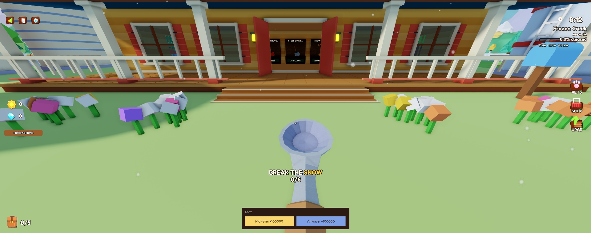
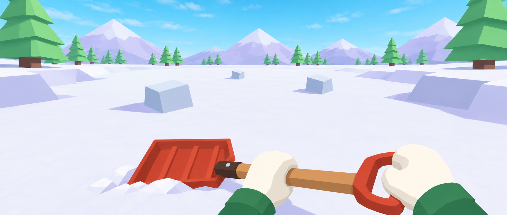
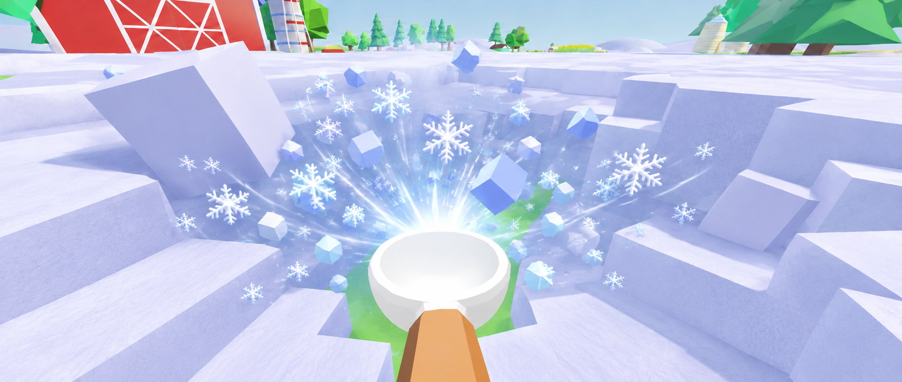
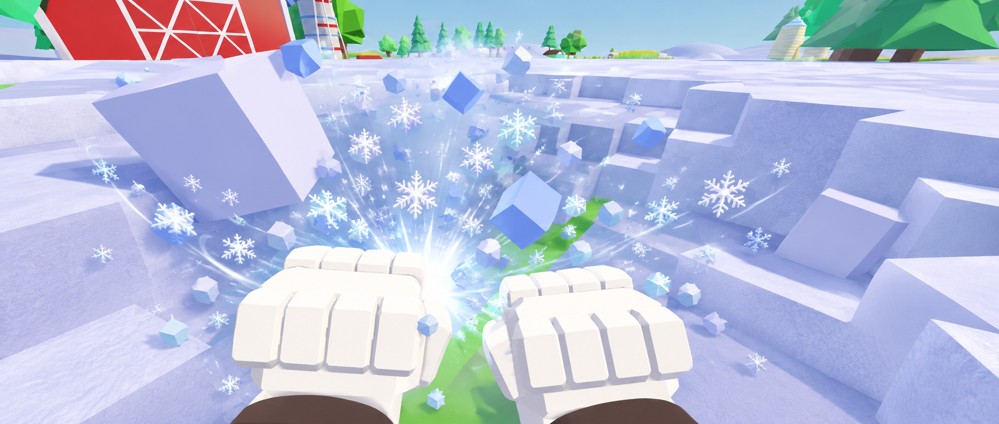
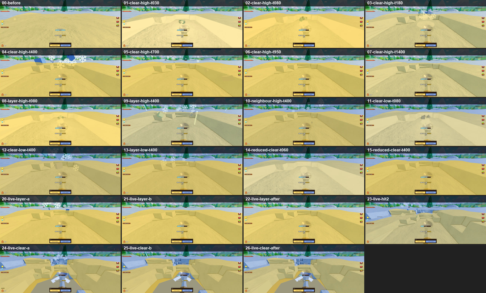
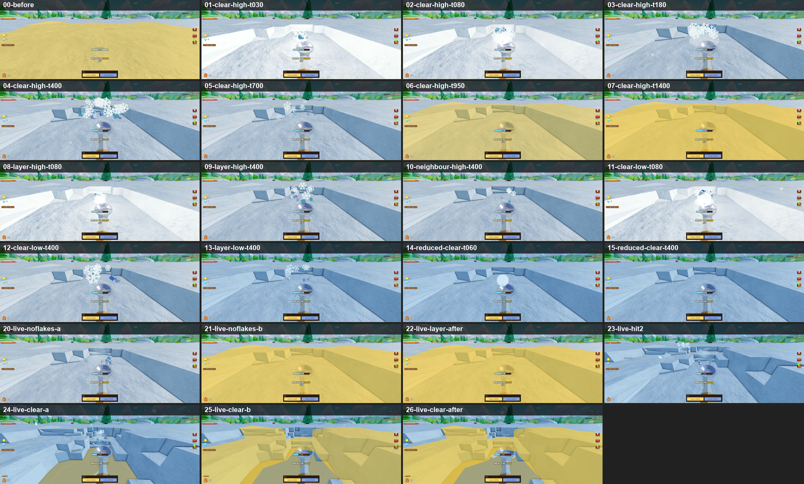
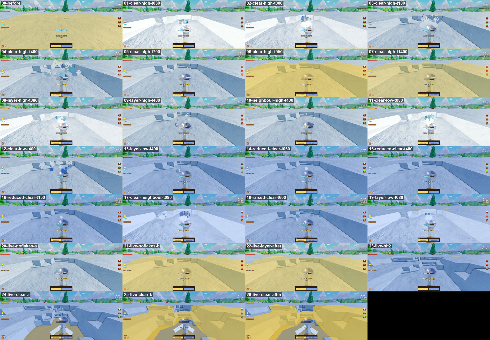
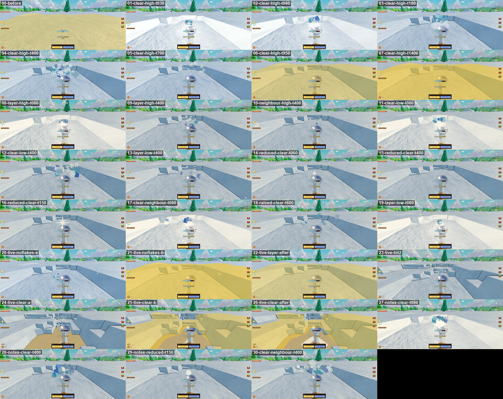

Колодец: красивая 3D-модель в Blender в стиле игры
Богдан55be02 фича · art
Автор: Богдан
Колодец в игре стоит у фермы. Он сделан из простых частей и выглядит некрасиво: кадр владельца — `tasks/attachments/55be02/well-now-ingame.webp`. Нужно сделать новую 3D-модель в Blender в стиле игры: идея та же, но красиво. Затем подключить её в Roblox вместо старого колодца.
Текст
Что сделать
Колодец в игре стоит у фермы. Он сделан из простых частей и выглядит некрасиво: кадр владельца — tasks/attachments/55be02/well-now-ingame.webp. Нужно сделать новую 3D-модель в Blender в стиле игры: идея та же, но красиво. Затем подключить её в Roblox вместо старого колодца.
Концепт с трёх сторон (ChatGPT Image, 11.11.2026): art/refs/well/well-turnaround.png, промпт рядом в well-turnaround.prompt.md. Виды: спереди, слева, сзади, в одном масштабе.
Каменное основание из крупных округлых камней («Камень» #909282, светлые камни «Металл» #A0B0C4) со снежными шапками.
Толстый деревянный обод («Дерево» #CD925C), внутри лёд или вода («Лёд» #A8DEE7).
Два толстых столба («Тёмное дерево» #80401B).
Двускатная крыша из толстых досок («Красный амбар» #D6392B) со снежной шапкой («Снег» #F3F6F5, тень «Тень снега» #CDCDED).
Бревно-ворот с ручкой, верёвка («Солома» #FAD66E), деревянное ведро с тёмными обручами.
Расхождение в концепте: ворот с ручкой один, справа, если смотреть спереди. Верен вид спереди. На виде сзади ручки не видно, а на виде слева она нарисована не с той стороны, это ошибка генерации.
Путь: классический, скрипты Blender по skill game-model-workflow. Цикл Model → Check → Improve: пять камер, model_check.py с --palette art/palette.json --budgets art/budgets.json, критик model-critic. Для Roblox не больше 5 кругов критика. Класс бюджета — big_prop (3000 треугольников, 2 материала, без костей). Высота — примерно как сейчас в игре; сверить с аватаром Roblox (1 стад = 0,28 м).
Готово когда
Модель по концепту, пять кадров просмотрены, model_check.py без ошибок, цвета только из палитры, укладывается в big_prop.
Критик model-critic дал «пройдено» (не ниже 9/10 за соответствие референсу и за красоту) или прошли 5 кругов. Владелец увидел кадры и дал апрув.
Модель подключена в игре вместо старого колодца на том же месте. Загрузка в Roblox только по слову владельца. Кадры из Play рядом с забором фермы и аватаром.
Работа
Заметки
Решение владельца 11.11.2026: сделать колодец 3D-моделью в Blender, красивым, в стиле игры, похожим на текущий. Концепт с трёх сторон (front, back, left) — для удобной сборки модели.
Правило «модели из Part в коде, без импортов» (владелец, 11.11.2026) для этой модели владелец сам заменил просьбой сделать её в Blender.
Забор участка в глубоком снегу: торчит из снега или по пояс под снегом
Богдан74e808 фича · garden
Автор: Claude
Применить ответ владельца на `Q-20261111-009`: как стоит забор участка сада, если снег персонажу по плечи. Связь: масштаб участка `bbd669`, участки `3272f9`.
Текст
Что сделать
Применить ответ владельца на Q-20261111-009: как стоит забор участка сада, если снег персонажу по плечи. Связь: масштаб участка bbd669, участки 3272f9.
Готово когда
Ответ владельца записан в tasks/questions.md и в спеку docs/superpowers/specs/2026-11-11-snow-garden-design.md.
Высота забора и таблички по ответу (Data/garden.jsonPlots: FenceHeight, FenceAboveSnow, Sign.AboveSnow), тест данных.
Кадры из живой игры сценарием garden-scale: в снегу и после раскопки у забора.
Работа
Заметки
С bbd669 забор стоит на земле, верх не ниже 1,1 стада над снегом (FenceAboveSnow), табличка на 0,4 над снегом.
Вид панели иконок по референсу и донатная заглушка
Богдан7852ff фича · held-items
Автор: Claude
Отложенная часть `074003`. Логика панели готова (иконка 1 — инструмент в руках, особые предметы своими иконками, `Shared/RunHotbar`, `RunHotbarView`), вид остался старым: маленькие квадраты с 3D-моделями, донатной иконки нет.
Текст
Что сделать
Отложенная часть 074003. Логика панели готова (иконка 1 — инструмент в руках, особые предметы своими иконками, Shared/RunHotbar, RunHotbarView), вид остался старым: маленькие квадраты с 3D-моделями, донатной иконки нет.
Как должно быть — по утверждённому референсу art/refs/run-hotbar/run-hotbar.png: квадраты из тёмного дерева, номер клавиши в углу, выбранная — с кремовой рамкой; справа, всегда последней, — серая донатная иконка с замком, нажатие ничего не делает (RunHotbar.layout(state, {donate = true}) уже её ставит). Иконка на телефоне не меньше 44 точек (784561; сейчас 26×24 на 844×391).
Готово когда
Владелец разрешил начать: решение 11.11.2026 «пока не трогаем HUD/UI».
Панель как на референсе, донатная заглушка последней; картинки — ChatGPT Image, загрузка в Roblox только со слова владельца.
Play: кадры на компьютере и телефоне, PNG просмотрены (сценарий run-hotbar).
Работа
Заметки
Решение владельца 11.11.2026: референс панели утверждён, но HUD/UI пока не трогаем — поэтому вид и донатная иконка отложены из 074003.
Иконки инструментов: 3D-модели или картинки — решить с владельцем (картинки требуют загрузок в Roblox).
Одна формула урона игрока
Богданb81273 техработа · clearing
Автор: Богдан
Урон игрока по снегу считается в трёх местах по-разному: `Balance.damage` (инструмент × заточка × сова) только для ложки и лопат; пылесос магазина — отдельное `MapVacuumDamage` = 3, а его `toolDamage` = 1 в `economy.json` мёртвый, но его показывает страница (`BUG-20261111-002`); оружие со стойки — свой урон без совы. Ритм ложки (0,48 → 0,40, серия 8) живёт в демо-модуле `SnowCleaningDemo/SnowBlockWorld.luau`, там же мёртвые `Reach`, `HandDamage`, `InventoryCapacity`. Разбор — `docs/clearing-audit.md`, п. 3 и 6.
Текст
Что сделать
Урон игрока по снегу считается в трёх местах по-разному: Balance.damage (инструмент × заточка × сова) только для ложки и лопат; пылесос магазина — отдельное MapVacuumDamage = 3, а его toolDamage = 1 в economy.json мёртвый, но его показывает страница (BUG-20261111-002); оружие со стойки — свой урон без совы. Ритм ложки (0,48 → 0,40, серия 8) живёт в демо-модуле SnowCleaningDemo/SnowBlockWorld.luau, там же мёртвые Reach, HandDamage, InventoryCapacity. Разбор — docs/clearing-audit.md, п. 3 и 6.
Свести урон игрока в одно правило по ответу Q-20261111-003: у пылесоса одно число урона, ритм ложки — в Data/*.json, мёртвые поля удалены, страница показывает настоящий урон.
Готово когда
Владелец ответил на Q-20261111-003, ответ записан сюда.
Тесты: урон ложки, лопаты с заточкой, пылесоса и оружия со стойки с совой и без — по ответу владельца.
BUG-20261111-002 исправлен: страница и игра показывают один урон пылесоса.
Play: удар каждым способом, числа урона в Output совпадают с таблицей.
npm run check и node --test tools/data/data.test.mjs без новых замечаний, страницы пересобраны, коммит и push.
Работа
Заметки
Из аудита a4c02e. После 8770fb: он переносит числа оружия в Data/weapons.json.
Телефон: кнопки от 44 точек и читаемый текст
Богдан784561 фича · mobile
Автор: Богдан
На телефоне HUD и окна читаются и нажимаются пальцем. Сейчас (расчёт 10.11.2026, `docs/mechanics-audit.md`, «Этап 3», п. 5) на телефоне 844×390 кнопки справа 27 точек, слоты хотбара 15, кнопка удара 39, подписи HUD 4 точки; магазин занимает 50 % ширины, кнопка «BUY» 18 точек.
Текст
Что сделать
На телефоне HUD и окна читаются и нажимаются пальцем. Сейчас (расчёт 10.11.2026, docs/mechanics-audit.md, «Этап 3», п. 5) на телефоне 844×390 кнопки справа 27 точек, слоты хотбара 15, кнопка удара 39, подписи HUD 4 точки; магазин занимает 50 % ширины, кнопка «BUY» 18 точек.
Готово когда
На телефонах 667×375 … 932×430 каждая кнопка HUD и окна не меньше 44 точек, текст не меньше 12.
Большие окна на телефоне и планшете одной ширины с равными полями, по правилу «Размер окна» (.agents/feature-team/RUBRICS.md); таблица снята в живой игре.
На компьютере 1920×1080 окно не меньше 33 % площади экрана.
Кадры с эмулятора устройств Studio на телефоне, планшете и компьютере просмотрены; окна прошли feature-design-critic.
Исполнитель: Леонид. Написать бизнес-документ новой системы апгрейдов. Код не менять.
Текст
Что сделать
Исполнитель: Леонид. Написать бизнес-документ новой системы апгрейдов. Код не менять.
Сейчас в каталоге пять апгрейдов за монеты: держать кнопку, скорость лопаты, кромка лопаты, скорость ходьбы, скорость переработчика. У большинства четыре уровня и растущая цена. Это заготовка, не отдельная система для игрока.
Документ говорит, что игрок покупает, зачем, чем уровни отличаются и откуда берутся деньги. Без имён файлов.
В документе:
Зачем игроку апгрейды в забеге и в лобби.
Какие апгрейды есть, что чувствует игрок на каждом уровне, потолок.
Цены, валюта, что открывает следующий апгрейд.
Чего не делаем в этой версии.
Как проверить на бумаге: один забег с нуля и с полным набором, игрок понимает, куда делись монеты.
Готово когда
Документ лежит в docs/ и его можно прочитать без кода.
В нём есть список апгрейдов, уровни, цены и что видит игрок.
Написано, чего в этой версии нет.
Код src/ этой карточкой не изменён.
Работа
Заметки
Исполнитель: Леонид.
После документа отдельная карточка на сборку, если владелец документ примет.
На забеге нет кроликов и птиц
Богданaadab7 баг · bug
Автор: Богдан
Вопрос владельцу (Q-20261110-004): вернуть на забег кроликов и птиц, всё вместе с дикими зверями, или оставить выключенным? Пока отложено.

Текст
Что сделать
Вопрос владельцу (Q-20261110-004): вернуть на забег кроликов и птиц, всё вместе с дикими зверями, или оставить выключенным? Пока отложено.
Воспроизвести и исправить BUG-20261110-002 из tasks/bugs.md после ответа владельца.
Варианты:
Кролики и птицы (рекомендация). 5 кроликов на поляне у фермы, ловятся за 10 монет. Птицы сидят в открытых зонах, купленный зверь ловит их за 3 монеты. Никто не нападает.
Всё, вместе с дикими зверями. Плюс пёс, морозный волк, медведь и кот в зонах: если задеть, 15 секунд нападают (урон 8), за победу 8 монет.
Оставить выключенным. Кроликов и птиц убрать из docs/README.md и чеклиста, баг закрыть как wont_fix.
Готово когда
Владелец выбрал вариант.
Дефект воспроизведён до исправления.
В tasks/bugs.md записаны исправление и проверка либо причина wont_fix.
Работа
2026-11-10: воспроизведено в Play сценарием wildlife: соло-забег, на сервере rabbits=0 birds=0 wild=0, у клиента 0 кроликов. Output без ошибок по зверям.
Заметки
Журнал: BUG-20261110-002, вопрос Q-20261110-004 в tasks/questions.md.
Причина: два выключателя из старого плейса коллеги, есть уже в импорте fdfbfc8. WildlifeService.luau:5COUNT=0 («5 is the original count»). ForestAnimalService.luau:6WildAnimalsEnabled=false: им же выключены птицы (строки 354 и 363). Сервисы забега подключены в RuntimeFactory.luau:28-29, клиент рисует кроликов и птиц.
Решение владельца 10.11.2026: пока ничего не включать, вопрос записать на страницу, чтобы не забыть.
Для варианта 1 птиц надо отделить от диких зверей своим флагом.
Условие включения из сводки архитектуры: награды платит кошелёк Wallet.grant. Сейчас кролик (WildlifeService.catch), птицы (flushBirdCoins) и звери (награда за победу) пишут монеты в профиль сами.
Сценарий проверки: npm run play -- wildlife (tools/studio-scenarios/wildlife.json): число кроликов, птиц и диких зверей забега, кадры поляны и ближней птицы.
Пусто.
В работе 0
Пусто.
Пауза 7
Отрезанный остров не падает, когда сумка полная
Богдан59efc0 баг · garden
Автор: Claude
Воспроизвести и исправить `BUG-20261111-008` из `tasks/bugs.md`.
Текст
Что сделать
Воспроизвести и исправить BUG-20261111-008 из tasks/bugs.md.
Готово когда
Дефект воспроизведён до исправления.
В tasks/bugs.md записаны исправление и проверка либо причина wont_fix.
Оценка
правка обрушения острова после решения владельца
Работа
Заметки
Пауза 2026-11-11 22:47: ждёт решения владельца Q-20261111-008
Журнал: BUG-20261111-008.
Закрытая зона: удар через границу, стена видна только вблизи
Богданccc5d0 фича · clearing
Автор: Claude
Закрытая зона держит игрока стеной, а не запретом удара: снег за границей можно бить с открытой стороны, зайти внутрь нельзя.
Текст
Что сделать
Закрытая зона держит игрока стеной, а не запретом удара: снег за границей можно бить с открытой стороны, зайти внутрь нельзя.
Сейчас:
Сервер не даёт ломать снег закрытой зоны (AreaLocked в MapSnowService.luau и StrikePlan.luau; машины и огонь отбирают только снег открытых зон), клиент показывает внизу общий текст «Clear the current area to unlock this snow.» (InterfaceController.luau, таблица messages).
Физической стены у закрытых зон нет: зоны — кольца вокруг центра (SnowCells.areaAt, модели Areas/AreaNN — только метки). Bootstrap.client ищет ZoneBarrierController, но такого модуля нет. Проверить в Play, может ли игрок сейчас зайти в закрытую зону.
Как должно быть:
Стоя в открытой зоне, игрок бьёт снег закрытой соседней зоны через границу — снег ломается как обычно. Дальность обычная (досягаемость руками), так что всю закрытую зону с края не пробить.
Коктейль Молотова (бросок до 45, огонь радиусом 8), машины и помощник снег закрытой зоны не трогают, как сейчас.
Зайти в закрытую зону физически нельзя: стена по всей границе кольца держит и людей, и машины, но не мешает ударам через границу (CanQuery = false). Сервер дополнительно не пускает за неё через проверку движения. Когда зона открывается, стена пропадает.
Вид стены — как в видео-референсе владельца (другая похожая игра): высокая полупрозрачная завеса до неба, жёлтая из палитры (#FFCE43). Издалека её не видно. За пару шагов до границы проступает только кусок напротив игрока, с мягкими боковыми краями; остальное кольцо невидимо. Каждый игрок видит только свой кусок. Рисуется на клиенте: несколько деталей ставятся в ближайшую точку кольца, вдали они спрятаны.
Жёлто-чёрные модели вдоль границы на земле (как в видео) — пока не делать.
Упёрся в стену — вверху по центру экрана текст «Clear Area N first to go further! (X% left)»: N — зона, где стоит игрок, X — сколько осталось дочистить до открытия следующей (90 %, вопрос 1). Белый с тёмной обводкой, держится, пока игрок упирается; отошёл — пропал. Только английский, без значков.
Далеко, стена-препятствие, частый клик, снег накрыт сверху — по-прежнему без текста: замах есть, снег не реагирует.
Готово когда
Из открытой зоны снег закрытой соседней ломается в пределах обычной досягаемости (Luau-тест сервера).
Молотов, машины и помощник снег закрытой зоны не ломают (Luau-тест сервера).
В закрытую зону не зайти ни пешком, ни на машине; после открытия зоны стена пропадает (Play, кадры).
Референс вида стены (ChatGPT Image, codex-imagegen) утверждён владельцем до вёрстки.
Стена видна только вблизи и только куском напротив игрока; кадры из Play: издалека, за пару шагов, вплотную, сбоку; PNG просмотрены.
При упоре вверху «Clear Area N first to go further! (X% left)» с верными N и X; отошёл — текст пропал.
Остальные отказы удара без текста; npm run check без новых замечаний.
Страница «Механики» (удар, гемы и открытие зон) описывает новое правило.
Оценка
сервер, стена на клиенте, референс, текст, кадры; ждёт вопроса о прогрессе
Работа
Разбор (код main после 3ca642):
Сервер. Удар в точку отказывает снегу закрытой зоны в двух местах: SnowWorkRule.patch (участок под прицелом, AreaLocked) и StrikePlan.aimed через ports.open → SnowWorkRule.open (соседи плана; если первый участок закрыт — весь план AreaLocked). Молотов, пылесос, помощник и обе машины берут открытость зоны из того же SnowWorkRule.open/patch. Значит, правило «удар руками в закрытую зону с края» — одна строка в таблице SnowWorkRule.Ways (Hit открыт для соседней закрытой зоны), остальные способы не меняются. Дальность — обычная StrikeRules.reach от корня игрока, так что с края достаётся полоса около 12,3 стада.
Прогресс. ProgressionService.onNodeBroken отказывает узлу закрытой зоны (AreaLocked): сейчас такой снег в процент не идёт вовсе. Как считать снег, сломанный через границу, — открытый вопрос Q-20261111-004 (вопрос 14 в docs/mechanics-audit.md).
Стены нет. Зоны — кольца вокруг Catalog.AreaCenter (SnowCells.areaAt, радиусы Catalog.Areas[i].outerRadius); Bootstrap.client ищет ZoneBarrierController, модуля нет. Проверка движения (MovementCheck) зоны не знает. Из кода: пешком и на машине в закрытую зону зайти можно, ничто не держит; в Play это не снималось, потому что карточка встала на паузу до работы.
Текст. Сейчас на AreaLocked внизу общий «Clear the current area to unlock this snow.» (InterfaceController, таблица messages).
Открытие зон. Сейчас зона открывается при 100 % (ProgressionService.luau:102). Решение владельца по вопросу 1 (90 % и сохранение) в коде не сделано и карточки на него нет, а текст у стены «(X% left)» считает от 90 %. До этой карточки X пришлось бы считать от 100 %.
Вид стены. По карточке нужен референс ChatGPT Image, утверждённый владельцем до вёрстки; не делался.
Пауза: ждёт ответа Q-20261111-004. После ответа: референс стены владельцу, правило Hit в SnowWorkRule.Ways, стена и её кусок у игрока на клиенте, текст при упоре, MovementCheck, тесты сервера, кадры.
Заметки
Пауза 2026-11-11 15:36: ждёт ответа Q-20261111-004: считать ли снег закрытой зоны, сломанный через границу, в её прогресс
Решение владельца 10.11.2026 (вопрос 3 аудита механик, docs/mechanics-audit.md): отказ удара без текста и значков, как в похожей игре; для закрытой зоны — короткий временный текст на английском «сначала разблокируй зону N».
Решение владельца 10.11.2026 (уточнение): игрок может бить снег закрытой зоны из открытой — всю зону с края он всё равно не пробьёт; зайти в закрытую зону физически нельзя.
Решение владельца 10.11.2026: в закрытую зону бьют только удары с обычной досягаемостью; коктейль Молотова, машины и помощник её не трогают — иначе с края можно выжечь глубоко.
Решение владельца 10.11.2026: граница и текст — как в видео-референсе владельца (другая похожая игра; видео у владельца, в репозиторий не кладём): высокая полупрозрачная жёлтая стена, видна только вблизи и только куском у игрока; при упоре вверху текст «дочисти свою зону, чтобы пройти дальше» с процентом. Жёлто-чёрные модели на земле — позже.
Связано с вопросом 1 (зоны открываются на 90 % и сохраняются, HUD показывает зону под ногами) и карточкой 0d0017 (гемы за зону): решить, засчитывается ли снег закрытой зоны, сломанный через границу, в её прогресс.
Пылесосы или вёдра: решить, что оставить
Богдан2e0b1f фича · held-items
Автор: Claude
Решить судьбу двух пылесосов, когда владелец ответит, и сделать по решению.
Текст
Что сделать
Решить судьбу двух пылесосов, когда владелец ответит, и сделать по решению.
Сейчас пылесосов два, и это разные вещи:
магазинный «Snow Vacuum»: 1 000 монет (сначала нужна Starter Shovel), стенда нет — покупка кнопкой «BUY VACUUM» в MORE ACTIONS; удар 3 раз в 1 с, виден только самому игроку;
со стойки во дворе «Пылесос»: бесплатный, удар 2 раз в 0,55 с (около 3,6 урона в секунду против 3 у магазинного), синяя модель в руке видна всем.
Владелец ещё не решил, нужны ли пылесосы: в будущем планируются вёдра.
Готово когда
Владелец ответил на вопрос Q-20261110-005 в tasks/questions.md.
Пылесосы приведены к решению (платные за монеты, если остаются).
Оценка
Ждёт решения владельца
Работа
Заметки
Пауза 2026-11-10 20:26: Ждёт ответа владельца Q-20261110-005: оставить пылесосы или заменить вёдрами
Решение владельца 10.11.2026: если пылесосы остаются, оба должны быть платными за монеты.
Первый забег: одна понятная команда за раз
Богданb652d9 фича · onboarding
Автор: Богдан
Новичок в первом забеге видит одну команду за раз и не застревает. Сейчас (живая проверка 10.11.2026, `docs/mechanics-audit.md`, «Этап 3», п. 2) после первой сдачи на экране сразу три команды: плашка «Buy your first shovel», затемнение «OPEN UPGRADES» и «BREAK THE SNOW 3/6».
Текст
Что сделать
Новичок в первом забеге видит одну команду за раз и не застревает. Сейчас (живая проверка 10.11.2026, docs/mechanics-audit.md, «Этап 3», п. 2) после первой сдачи на экране сразу три команды: плашка «Buy your first shovel», затемнение «OPEN UPGRADES» и «BREAK THE SNOW 3/6».
Готово когда
Порядок один: сломай снег → принеси на поддон → купи лопату → урок-остров → «Hold». Следующая подсказка появляется, только когда закрыта прошлая.
Первая задача «BREAK THE SNOW x/6» не держит игрока: засчитывается сдачей или исчезает после первой сдачи; маркер не висит над уже вскопанной ямой.
Окно старта забега у площадки по умолчанию выбирает 1 игрока, главная зелёная кнопка — старт; видно крупный отсчёт до начала.
Плашка в лобби и надпись на площадке называют одно и то же («START A RUN» / «CREATE A PARTY»).
Проверено в живой игре, кадры каждого шага просмотрены.
11.11.2026: владелец попросил вынести пункты в вопросы — «точно ли такое хотим»: Q-20261111-005 (порядок подсказок), Q-20261111-006 (когда звать «Hold»), Q-20261111-007 (окно старта забега и название). Ответы — в docs/mechanics-audit.md, вопросы 15–17.
11.11.2026: первая задача теперь 3 участка (ZONE_SIZE=3, карточка 1b74ef), сумка 5, полная сумка останавливает копание (0ce562) — пункт «BREAK THE SNOW x/6 держит игрока» частично снят, проверить заново.
Мелочи с того же прохода: тост покупки пишет внутреннее имя «NEW TOOL · StarterShovel»; надпись «FIRST RUN COMPLETE» не видна, пока висит задача «BREAK THE SNOW»; текст на щитах лобби обрезан по краям («RESH TRACKS AWAI»).
Источники: TutorialController.luau, SnowGuide.luau (ZONE_SIZE=6, урок-остров ждёт конца цепочки), SnowUpgradeFocus.luau (после первой платной сдачи), QueueService.luau:79 (offer ставит targetSize = partySize).
Гемы за чистую зону от её размера
Богдан0d0017 фича · economy
Автор: Богдан
Сейчас за чистую зону платят 10 / 20 / 30 / 40 / 50 / 60 гемов (`Catalog.luau:56`), а узлов в зонах 634 / 2 967 / 6 256 / 11 835 / 16 300 / 96 144. Гемов за узел в зоне 1 в 25 раз больше, чем в зоне 6: выгоднее всего чистить зону 1 и начинать забег заново.
Текст
Что сделать
Сейчас за чистую зону платят 10 / 20 / 30 / 40 / 50 / 60 гемов (Catalog.luau:56), а узлов в зонах 634 / 2 967 / 6 256 / 11 835 / 16 300 / 96 144. Гемов за узел в зоне 1 в 25 раз больше, чем в зоне 6: выгоднее всего чистить зону 1 и начинать забег заново.
Пересчитать награду от размера зоны (или платить за каждую часть зоны), чтобы дальняя зона давала заметно больше ближней. Цифры согласовать в разборе экономики 34d5ff.
Готово когда
Новые цифры гемов за зону согласованы с владельцем и лежат в одном источнике чисел.
Гемов за узел в дальней зоне не меньше, чем в ближней (тест на таблицу наград).
Страница «Механики» и графики экономики показывают новые цифры.
Зависит от открытого вопроса 1 аудита (открытие зон 4–6): если открытые зоны станут сохраняться, награду, возможно, платить один раз в жизни за зону — решить вместе.
Вопрос 1 аудита решён 10.11.2026: открытые зоны сохраняются навсегда, следующая открывается на 90 % текущей (docs/mechanics-audit.md). Платить гемы один раз за зону или каждый забег — решить в Q-20261111-002.
Снег: одна высота снега
Богдан9cd888 техработа · architecture
Автор: Богдан
Исполнитель: Богдан. Снег D (`189be8`), №8 сводки.
Текст
Что сделать
Исполнитель: Богдан. Снег D (189be8), №8 сводки.
Одна функция высоты снега с одним округлением для удара, прицела, грузовика и картинки. Сначала спросить владельца, влияют ли следы ног на удар.
Готово когда
Спека и план согласованы с владельцем.
Тест до кода: высота сервера и клиента в одной точке совпадает.
Play: удары по краю следа.
npm run check без новых замечаний.
Коммит и push.
Работа
Заметки
Пауза 2026-11-11 00:16: Ждёт ответа владельца Q-20261111-001: нужна ли одна высота снега
Решение владельца 10.11.2026: порядок «надёжность, потом два плейса» из сводки dc68a4 (docs/architecture/summary.md).
Из 6d3652 (10.11.2026): высота снега входит в план удара портом height(x, z) (StrikePlan): у сервера — height(r, x, z) по полю, у прогноза — heightAt по слоям. Одна функция высоты встаёт в оба порта; формула «снег открыт» уже одна — StrikePlan.exposed.
Решение владельца 11.11.2026 (Q-20261111-001 answered, вопрос 11 аудита механик): одна высота для удара и прицела. Удар и прицел считают высоту снега одинаково; вмятины от шагов игроков остаются только картинкой и на удар не влияют (сервер при проверке удара их не учитывает). Грузовик и картинка — как сейчас; следы машин уже общие (ea16cb). Ответ получен — карточку можно снимать с паузы.
Лобби и долина в одном плейсе, переход в забег грузит весь мир
Богдан0205ff баг · bug
Автор: Богдан
Воспроизвести и исправить `BUG-20261110-001` из `tasks/bugs.md`.
Текст
Что сделать
Воспроизвести и исправить BUG-20261110-001 из tasks/bugs.md.
Готово когда
Дефект воспроизведён до исправления.
В tasks/bugs.md записаны исправление и проверка либо причина wont_fix.
Оценка
Два плейса, телепорт отряда и сборка файлов плейса.
Работа
2026-11-10 17:22 → 2026-11-10 17:23
Заметки
Пауза 2026-11-10 17:23: Ждёт владельца: создать второй плейс, выложить файлы, прислать id для MatchPlaceId и проверить двумя аккаунтами
Журнал: BUG-20261110-001.
Перед стартом нужен spec-plan: это смена устройства мест и телепорта, не локальная правка.
Способ Roblox для нового кода (документация и объявление 28.10.2026): один TeleportAsync с сервера, ReservedServerId — GUID с HttpService:GenerateGUID(false). Так отряд попадает на один приватный сервер. ReserveServer, ShouldReserveServer и ReservedServerAccessCode для новой работы не использовать. Этот GUID в PartyTeleport уже есть; не хватает второго плейса и включённого MatchPlaceId.
Публикация второго плейса только по слову владельца. В Studio настоящий телепорт не проверить.
Решение владельца 10.11.2026 (сводка dc68a4): второй плейс — после жизненного цикла сервера c0a127 и проверки якорей 7d4287. Мир по роли места c02288 готов.
Решение владельца 10.11.2026 (при старте бага): сначала c0a127 и 7d4287 в этой же сессии, потом баг. ca847e (одна дверь к серверу) не ждать: телепорту она не нужна.
Решение владельца 10.11.2026: спека и план утверждены, делаю сам, одно ревью в конце.
10.11.2026: воспроизведено — в Studio из лобби видна долина, старт забега переносит персонажа внутри того же сервера (MatchPlaceId = 0).
10.11.2026: код в a9537b7 (PartyTeleport, проверка якорей). Собраны place/NaLovi-Lobby.rbxl (было 42,2 МБ и 734 987 объектов, стало 2,1 МБ и 12 277: остров, горы на горизонте, Terrain только у острова, пустые SnowFarMeshes/SnowFarSlabs для клиента, CleanSnowGardenAssets нужны клиенту для иконки грабель) и place/NaLovi-Match.rbxl (15,7 МБ, 104 260 объектов: без LobbyArea и резервных копий в ServerStorage). В обоих StudioRole задан. Play: лобби — остров без долины; долина — забег стартует сам.
Перед публикацией обновить скрипты в обоих файлах из main (rojo): в сохранённых файлах код рабочей папки на 10.11.2026 вместе с незаконченной работой других сессий.
10.11.2026: файлы к публикации готовы. Скрипты в place/NaLovi-Lobby.rbxl и place/NaLovi-Match.rbxl заменены кодом коммита cf5fb48 (origin/main, с экономикой в JSON db0eb78) из чистой выгрузки git archive, без рабочей папки. Сборка — node tools/places/build.mjs (Rojo + Lune, без Studio): 243 скрипта совпадают с коммитом (каждый .luau — байт в байт с git), удалены 8 старых модулей, которых в main уже нет (ReferenceSnowService, MapNodeIndex, Types и другие), остров, долина, CleanSnowAssets и StudioRole не изменились. Итог в build/places/build.json, прежние файлы в place/backup/. Проверка без записи: node tools/places/build.mjs --check.
Инструкция владельцу: docs/publish-places.md (новый плейс долины, MatchPlaceId, снежинка из art/import.md, пересборка, публикация, настройки игры, проверка двумя аккаунтами). В файлах пока MatchPlaceId = 0: публиковать после пересборки с id долины.
10.11.2026: Play файлов к публикации (сборка из cf5fb48) в своём окне, код из выгрузки коммита (build/places/tree), без рабочей папки: npm run play -- publish-lobby — остров, долины нет, сессий 0, клиент без ошибок скриптов; npm run play -- publish-match — острова нет, забег стартует сам (сессия есть, снег долины на клиенте), Output без ошибок скриптов. В Output только чужие приватные картинки и Asset type does not match старых id из плейса.
Пусто.
Готово 85
Ложка в правой руке, боком справа
Богдан7c797c фича · clearing
Автор: Богдан
Реализовать доработку: Ложка в правой руке, боком справа.
Текст
Что сделать
Реализовать доработку: Ложка в правой руке, боком справа.
Готово когда
Доработка даёт ожидаемый проверяемый результат.
Результат подтверждён тестом или живым прогоном.
Оценка
поза покоя ложки в ToolSwing по утверждённому референсу
Работа
2026-11-11 22:59 → 2026-11-11 23:37
Заметки
Референс v1 art/refs/spoon-right-hand.png (с варежкой). Решение владельца 11.11.2026: «Поправь угол + без руки» — руку не показывать, угол поправить; v2 — art/refs/spoon-right-hand-v2.png.
Решение владельца 11.11.2026: делаем как на art/refs/spoon-right-hand-v2.png — без руки, ручка из правого нижнего угла по диагонали к центру, чаша справа внизу, наклонена боком.
Решение: в Shared/ToolSwing поза разделена на SpoonHold (справа внизу, поворот влево 8°, наклон 24°) и SpoonRoll (поворот боком 32° вокруг ручки); spoonFrame(offset) = Hold * offset * Roll, поэтому черпание идёт вверх по экрану, а ложка остаётся боком. Ключи черпания из a3d6ec не менялись.
Тесты: брейншторм — проверять видимое: чаша справа и ниже центра, ручка из правого нижнего угла (хват правее и ниже чаши), ложка боком (20–70° от вертикали); черпание — прежний тест. ToolSwing 5/5, ShovelHold 2/2, npm run check без новых замечаний. Прогон ждал окна правила «раз в час» ~20 мин.
Кадры: build/studio-play/spoon-dig-20261111-161553/spoon-right-sheet.png (референс v2 рядом с кадром старта забега, покой и черпание). В снежной яме сценария чаша в покое частично уходит в снег — рельеф у самых глаз, на ровном месте видна целиком.
Сценарий spoon-dig: добавлен кадр 0-start на открытом месте старта забега.
Масштаб участка сада: забор, табличка и огороды под рост персонажа
Богданbbd669 фича · garden
Автор: Богдан
Владелец на плейтесте 11.11.2026: забор участка и всё вокруг кажется слишком большим. Сделать референсы масштаба с персонажем Roblox, получить решение владельца и привести размеры забора, таблички и огородов к нему. Связь: участки `3272f9`.
Текст
Что сделать
Владелец на плейтесте 11.11.2026: забор участка и всё вокруг кажется слишком большим. Сделать референсы масштаба с персонажем Roblox, получить решение владельца и привести размеры забора, таблички и огородов к нему. Связь: участки 3272f9.
Готово когда
Кадры «как сейчас» из Studio: участок с персонажем от первого и третьего лица, сверху; рядом дом, машина, обычный забор карты.
2 референса масштаба ChatGPT Image с персонажем в art/refs/garden-plot/ с .prompt.md.
Решение владельца записано в спеку docs/superpowers/specs/2026-11-11-snow-garden-design.md.
Числа масштаба в Data/garden.json, тест на числа; огороды падают островом в пределе SnowIsland.MaxArea (Luau-тест); GardenPlotsView и GardenBedsView читают числа.
Кадры из живой игры с персонажем после правки.
Пункт для Леонида в docs/testing-checklist.md, гайд пересобран, npm run check без новых замечаний.
Оценка
правка чисел размера по готовому дизайну участка 3272f9; решение по масштабу берётся у владельца по референсам
Работа
2026-11-11 22:57 → 2026-11-11 23:27
Заметки
Кадры «как сейчас» (сценарий npm run play -- garden-scale): забор 6,8 стада при росте персонажа 5,1, табличка 13 × 4,6 выше головы, участок 60 × 48 — почти с дом (82 × 56). Обычный забор фермы — столбы 4,8.
Референсы: art/refs/garden-plot/garden-plot-scale-a.png (забор по пояс, табличка до головы, участок компактнее) и -b.png (по грудь, огороды как сейчас), по одной попытке.
Решение владельца 11.11.2026: вариант А. Записано в спеку.
Данные: Data/garden.jsonPlots — огород 16 × 12, дорожка 5, отступ 2,5, участок 42 × 34; забор FenceHeight 2,8, PostStep 4,5, калитка 5; табличка Sign 7 × 2,6, верх 4,8; грядка 3 × 4,5, растение 2,7 × 3,8. Огород проверен в Studio: внутри 1–2 участка снега, контур 5–10 (было 3–6 и 8–14), каждый падает своим островом.
Находка в игре: персонаж ходит по земле внутри снега, снег у участков 3,1–3,9 — по плечи. Забор 2,8 от земли тонет, поэтому столбы идут от земли, а верх не ниже 1,1 над снегом (FenceAboveSnow), табличка на 0,4 над снегом (Sign.AboveSnow). Владелец ответит на созвоне: Q-20261111-009, карточка 74e808.
Проверки: node --test tools/data/data.test.mjs 29/29, npm run test:game -- GardenPlot 6/6, npm run check без новых замечаний, кадры garden-scale после правки. Сценарии garden-plots и garden-growth переведены на новый огород (контур 7), не прогонялись.
Полоска HP снега видна, а удар текущим инструментом не доходит
Богдан4a5024 баг · bug
Автор: Богдан
Воспроизвести и исправить `BUG-20261111-010` из `tasks/bugs.md`.
Текст
Что сделать
Воспроизвести и исправить BUG-20261111-010 из tasks/bugs.md.
Готово когда
Дефект воспроизведён до исправления: замер дальности показа HP и удара у каждого инструмента в Studio.
Одно правило «можно ударить» для показа HP и для сервера; регрессия покрыта Luau-тестом.
На границе показа HP удар снимает HP у каждого инструмента. Кадры из живой игры.
Пункт для Леонида в docs/testing-checklist.md, страницы пересобраны.
В tasks/bugs.md записаны исправление и проверка либо причина wont_fix.
Оценка
известный дефект: показ HP берёт дальность рук, а инструмент бьёт своей; правка — показ HP через то же правило удара
Работа
2026-11-11 22:55 → 2026-11-11 23:46
Заметки
Журнал: BUG-20261111-010.
Связь: прицел и NotExposed d91075, одна проверка работы по снегу 3ca642, план удара 6d3652, дальность оружия 8770fb.
Причина: полоска HP брала дальность рук (12.3 стада от игрока) для любого инструмента. Отбойник бьёт на 11.3, пылесос и термопушка — конусом 9–10 стадов по центрам кусков, снегоуборщик — снег перед ногами. Ещё середина островка урока показывала HP, а удар лопатой туда сервер отказывает.
Исправление: общий модуль StrikeTarget — тот же StrikePlan и числа сервера (StrikeRules.reach, StrikeRules.cone), остров — SnowIsland.Strikes. Полоска HP и подсветка куска показываются только при «да». Дальность ударов не менялась, вопрос владельцу не нужен.
Кадры: build/hp-reach/sheet.png (граница полоски → после удара, 9 инструментов), build/hp-reach/island.png. Сценарии: hp-reach (магазин), hp-reach-<оружие>, hp-reach-island; генератор tools/studio-scenarios/_gen-hp-reach.mjs. Оружие — по прогону на каждое: после некоторых стендов в Studio остаётся окно и камера не в первом лице.
Проверки: StrikeTarget_Test 3/3 и соседние наборы зелёные, npm run check без новых замечаний.
Сумку у стенда в доме не купить: «Buy it at its stand in the farmhouse»
Богдан267de4 баг · held-items
Автор: Богдан
Воспроизвести и исправить `BUG-20261111-009` из `tasks/bugs.md`.
Текст
Что сделать
Воспроизвести и исправить BUG-20261111-009 из tasks/bugs.md.
Готово когда
Дефект воспроизведён до исправления.
Стоишь у стенда сумки — удержание E «Buy · цена» покупает, ёмкость сумки растёт. Плашка «Buy it at its stand» у стенда не появляется. Кадры из живой игры.
Регрессия покрыта Luau-тестом (ShopService).
Пункт для Леонида в docs/testing-checklist.md, страницы пересобраны.
В tasks/bugs.md записаны исправление и проверка либо причина wont_fix.
Оценка
локальная правка проверки стенда в ShopService
Работа
2026-11-11 22:48 → 2026-11-11 22:53
Заметки
Журнал: BUG-20261111-009.
Связь: магазин на стендах в доме 51a4ef (сумки у двери), оружие ca84fc.
Причина: в Studio без ShopStandsInStudioShopService.atStand проверял только старый радиус магазина (ряд лопат, registry.shop); стенды сумок у двери (registry.bagShop) в 42 studs от него. Сценарий 51a4ef включал атрибут, поэтому не поймал. На боевом сервере проверка стенда работала.
Исправление: стенд вещи засчитывается всегда, старый радиус — запасной путь Studio. Кадры: build/bag-stand/ (01 — баг, 02–04 — до и после покупки, 0/5 → 0/15 → 0/30).
Подсказка урока «CUT A CIRCLE…» в доме: это текущая цель урока-острова, она видна везде, пока урок не пройден. Не баг этой карточки; подсказки урока ведёт карточка e30ce8.
Проверки: npm run test:game -- ShopService 20/20, npm run check без новых замечаний.
Лопата бьёт по снегу, а снег не убирается
Богданe30ce8 баг · garden
Автор: Богдан
Воспроизвести и исправить `BUG-20261111-007` из `tasks/bugs.md`.
Текст
Что сделать
Воспроизвести и исправить BUG-20261111-007 из tasks/bugs.md.
Готово когда
Дефект воспроизведён до исправления.
Причина найдена в живой игре: ответ сервера на удар, что под прицелом, откуда жёлтая заливка.
Удар лопатой там, где стоял владелец, снимает HP и ломает снег, либо игроку понятно, почему нельзя (решение владельца). Кадры из живой игры.
Регрессия покрыта тестом.
Пункт для Леонида в docs/testing-checklist.md, страницы пересобраны.
В tasks/bugs.md записаны исправление и проверка либо причина wont_fix.
Оценка
локальная правка урока-острова или подсказки
Работа
2026-11-11 22:35 → 2026-11-11 22:52
Заметки
Решение владельца 11.11.2026: светится кольцо вокруг острова, середина падает сама; удар по середине — короткое «Break the glowing snow around it»; стоя на снегу, экран не заливается жёлтым.
Итог: причина — подсветка урока светила середину, которую лопата не бьёт; исправлено кольцом. Второй дефект с того же кадра (остров не падает при полной сумке) — отдельная карточка 59efc0, вопрос на странице «Вопросы».
Журнал: BUG-20261111-007.
Найден на плейтесте после 3272f9 (участки сада); подсказка на кадре — урока-острова (SnowGuide), не сада.
Счётчик семян скрыт, пока игрок не нашёл первое семя
Богданe7cac7 фича · garden
Автор: Богдан
Плейтест сборки 4ae75c8: в HUD всегда виден счётчик «Seeds 0/7» (после 1690f3). Новый игрок счётчика не видит. Когда он находит первое семя за всё время, счётчик появляется и дальше виден всегда, в каждой зоне, начиная с 0/N. Признак «уже находил семя» решает сервер по профилю.
Текст
Что сделать
Плейтест сборки 4ae75c8: в HUD всегда виден счётчик «Seeds 0/7» (после 1690f3). Новый игрок счётчика не видит. Когда он находит первое семя за всё время, счётчик появляется и дальше виден всегда, в каждой зоне, начиная с 0/N. Признак «уже находил семя» решает сервер по профилю.
Готово когда
Новый профиль: счётчика в забеге нет.
После первой находки счётчик есть во всех зонах.
Новый забег игрока с находками: счётчик есть с 0/N.
Правило покрыто тестом, старые профили не ломаются.
Решение владельца записано в спеку сада, docs/testing-checklist.md и docs/mechanics.md обновлены, страницы пересобраны.
Кадры из живой игры просмотрены.
Оценка
решение владельца уже есть; локальное правило показа счётчика на сервере
Работа
2026-11-11 22:32 → 2026-11-11 22:37
Заметки
После 1690f3, спека docs/superpowers/specs/2026-11-11-snow-garden-design.md.
Решение владельца 11.11.2026: новый игрок счётчика не видит; после первой находки семени за всё время счётчик виден всегда, в каждой зоне, с 0/N.
Признак «уже находил семя» — без нового поля: SnowGardenProfile.everFound (семя в мешке или растение на грядке; найденное семя из сада не пропадает) или находка в этом забеге. SeedCacheService.snapshot отдаёт nil игроку без находок — клиент прячет счётчик сам, клиентский код не менялся. Старые профили работают.
Проверка 11.11.2026: npm run test:game -- SeedCacheService 3/3, -- SnowGarden 12/12, npm run check без новых замечаний. Сценарий npm run play -- seed-counter: новый профиль — счётчика нет; выдана находка зоны 1 — «Seeds 1/7»; новый забег — «Seeds 0/7». Кадры просмотрены. Сценарий seed-find теперь ждёт скрытый счётчик в начале.
Ложка всё равно бьёт сверху вниз, а не черпает снизу вверх
Богданa3d6ec баг · bug
Автор: Богдан
Воспроизвести и исправить `BUG-20261111-006` из `tasks/bugs.md`.
Текст
Что сделать
Воспроизвести и исправить BUG-20261111-006 из tasks/bugs.md.
Готово когда
Дефект воспроизведён до исправления.
Клик ложкой — черпание: без замаха вверх, ложка опускается низко к снегу и черпает вверх-вперёд с комком; главное направление снизу вверх. Кадры начала, середины и конца от первого и третьего лица из живой игры.
Правило ключей ложки покрыто тестом (нет начального подъёма, самая высокая точка в конце).
Лопаты, пылесос и оружие не изменились.
Пункт про ложку в docs/testing-checklist.md обновлён, страницы пересобраны.
В tasks/bugs.md записаны исправление и проверка либо причина wont_fix.
Оценка
локальная правка ключей движения ложки в ToolSwing
Работа
2026-11-11 22:30 → 2026-11-11 22:44
Заметки
Журнал: BUG-20261111-006.
Продолжение закрытой карточки c6d180 (движение ложки в Shared/ToolSwing).
Причина «удара»: у ложки был начальный подъём (замах) над покоем, а самый быстрый участок шёл вниз к контакту с наклоном носа вниз — глаз видел рубящий удар сверху.
Решение: ключи low (низко и чуть назад, кромкой в снег) → through → lift (выше и впереди покоя, чаша назад с комком). Спуск плавный (smoothstep), подъём быстрый с замедлением к верху, возврат медленный.
Тесты: брейншторм — проверять только видимое правило (нет подъёма до контакта, ниже всего в контакте, выше всего после, подъём больше спуска, быстрее всего вверх); ToolSwing 4/4, ShovelHold 2/2. Тест до правки не запускался (правило часа на прогоны); старые ключи его не проходят по построению: raise выше покоя.
Кадры: build/studio-play/spoon-dig-20261111-154149/spoon-scoop-sheet.png. Сценарий spoon-dig теперь оставляет дорожку пути черпака и снимает её сбоку.
В третьем лице ложки на персонаже нет (так было и до этой карточки).
Клик ложкой выглядит как удар, а не копание
Богданc6d180 баг · bug
Автор: Богдан
Воспроизвести и исправить `BUG-20261111-005` из `tasks/bugs.md`.
Текст
Что сделать
Воспроизвести и исправить BUG-20261111-005 из tasks/bugs.md.
Готово когда
Дефект воспроизведён до исправления.
Клик ложкой — копание: ложка зачерпывает снег сверху вниз-вперёд и поднимается с порцией; кадры начала, середины и конца из живой игры.
Лопаты, пылесос и оружие двигаются как раньше; правило выбора движения по инструменту покрыто тестом.
Удар по снегу (миг контакта, эффекты) не сломан; «меньше движения» работает.
Пункт для Леонида в docs/testing-checklist.md, страницы пересобраны.
В tasks/bugs.md записаны исправление и проверка либо причина wont_fix.
Оценка
локальная правка позы ложки в первом лице, без новых данных и сети
Работа
2026-11-11 18:57 → 2026-11-11 19:13
Заметки
Журнал: BUG-20261111-005.
Воспроизведено по коду: у ложки были те же две позы «замах → удар» и та же кривая, что у лопат (ExperienceController, SPOON.view.windup/strike).
Решение: модуль Shared/ToolSwing.luau — движение инструмента по времени удара. Ложка: подъём над снегом → вниз-вперёд к контакту → вперёд с поворотом чаши вверх → подъём с комком → покой. Комок снега (SpoonSnowPortion, цвет «Снег», материал Snow) виден только если удар попал в снег и сумка не полна. Лопаты и пылесос считаются тем же кодом, что раньше (тест сравнивает с ShovelHold).
Оружие со стоек (WeaponController, в том числе ложка-оружие) не менялось.
Эффекты удара не менялись, критик эффектов не нужен.
Для кадров: студийный атрибут игрока StudioSwingSlow замедляет удар (только в Studio), сценарий spoon-dig.
Машины открываются за убранный снег, закрытые — чёрные
Богдан0bd80d фича · vehicles
Автор: Богдан
Ездовые машины на забеге (пикап, грузовик, снегоход, вертолёт, танк) открываются за весь убранный игроком снег. Пока машина закрыта, она чёрная (силуэт) и над ней надпись прогресса, как на референсе `tasks/attachments/0bd80d/ref-locked-black-vehicles.webp` (кадр чужой игры, только для идеи: «199/7,000 Dust Cleaned» над чёрными машинами).
Текст
Что сделать
Ездовые машины на забеге (пикап, грузовик, снегоход, вертолёт, танк) открываются за весь убранный игроком снег. Пока машина закрыта, она чёрная (силуэт) и над ней надпись прогресса, как на референсе tasks/attachments/0bd80d/ref-locked-black-vehicles.webp (кадр чужой игры, только для идеи: «199/7,000 Dust Cleaned» над чёрными машинами).
Сейчас все ездовые машины открыты всем, в любую можно сесть (docs/mechanics.md, «Езда»).
Как должно быть:
Счётчик «весь убранный снег» живёт в профиле и копится за все забеги. Открытая машина остаётся открытой навсегда.
С самого начала ни одна машина не открыта. Пороги растут по очереди от простой машины к сложной; числа — в Data/vehicles.json, первый порог достижим в первых забегах. Пороги подобрать по замеру, сколько снега игрок убирает за забег, и записать в карточку.
Закрытая машина: все части чёрные (без текстур и цветов), сесть нельзя, сервер не пускает в кресло. Над ней BillboardGui «N/M Snow Cleaned» по-английски.
Открытая машина — обычного цвета, надписи нет. В момент открытия — короткий заметный эффект (по правилам раздела «Эффекты» в AGENTS.md).
Что считать «убранным снегом» — единица, которой игрок видит снег (куски в сумке или сданное); выбрать одну и записать в docs/mechanics.md.
Готово когда
Счётчик снега в профиле, старый профиль без поля не ломается; тест.
Сервер не сажает в закрытую машину; тест.
Закрытые машины чёрные с надписью прогресса, открытые — обычные; кадры из Play у машин до и после открытия.
Пороги в данных, страница гайда их показывает; docs/mechanics.md («Езда») обновлён.
Оценка
новое правило посадки на сервере, поле профиля, вид закрытых машин у клиента и эффект открытия
Работа
2026-11-11 17:01 → 2026-11-11 19:03
Заметки
Спека: docs/superpowers/specs/2026-11-11-vehicle-unlock-design.md (разбор по improve-codebase-architecture там же).
Единица снега: profile.stats.snowCleared — единицы с разбитых участков, свои и срезанные машиной за рулём; то же число в окне статистики и в таблице лидеров. Счётчик был и раньше, новое поле — unlockedVehicles (открытая машина не закроется, если порог потом поднимут).
Замер 11.11.2026 в Studio (сценарий-проба): пикап на 10 стадах/с срезал 34 единицы за 30 с (около 70 в минуту, кузов 60); ложка ломает участок за 12 ударов, клик раз в 0,66 с — около 8 с на участок, с сумкой на 5 и ходьбой к лотку 4–5 участков в минуту у идеального игрока, у ребёнка в 2–3 раза меньше; первое задание просит 3 участка.
Пороги (Data/vehicles.json → Unlocks): пикап 50 (первый-второй забег руками), грузовик 500 (около 10 минут на пикапе), снегоход 1 500, вертолёт 4 000, танк 10 000 (несколько часов игры).
Сервер: VehicleAccess (дверь, которую Bootstrap привязывает к профилям) — VehicleDriving не сажает по кнопке; касанием кресла не сесть (CanTouch = false), потому что подъём с кресла сервером оставляет устаревший SeatPart и ломает следующую посадку (найдено в Play). Studio: DevGrantsnow даёт 100 000 снега; сценарии с посадкой сервером сначала просят его.
Вид: только у клиента (VehicleLockView), силуэт — цвет «Контур» #2B1A11 без текстур (чистого чёрного в палитре нет), надпись Fredoka One кремом с контуром.
Решение владельца 11.11.2026: считать весь снег навсегда (счётчик в профиле); с самого начала ни одна машина не открыта.
Проверка 11.11.2026: сценарий vehicle-unlock прошёл целиком (закрытые тёмные с надписью и без кнопки, касание кресла не сажает, тестовый снег открывает все пять, эффект ничего не оставляет, открытый пикап и грузовик по кнопке сажают). Luau: Vehicle 8/8, ProfileService 10/10, ProgressionService 4/4; Node data+guide 73/73. Нажатие E через Studio MCP до Play не доходит, а кнопка Roblox показывается только в кадре — сценарий поворачивает камеру к двери и жмёт кнопку InputHoldBegin/End.
Эффект открытия: критик feature-vfx-critic круг 1 — fail 8/8, круг 2 — pass, понятность 9, стиль 9 (подробно в спеке). Highlight в мире в пике — 7 из ~31.
Зона открывается на 90 % и остаётся открытой навсегда
Богданc3c3e1 фича · progression
Автор: Claude
Сделать решение владельца по вопросу 1 (`docs/mechanics-audit.md`, «Вопрос 1», и пункты 1–3 «Что предлагаю» около строки 365).
Текст
Что сделать
Сделать решение владельца по вопросу 1 (docs/mechanics-audit.md, «Вопрос 1», и пункты 1–3 «Что предлагаю» около строки 365).
Сейчас: следующая зона открывается при 100 % текущей (ProgressionService.luau:102), только в этом забеге.
Как должно быть:
Игрок очищает 90 % зоны — следующая открывается. Порог — в Data/*.json.
Открытая зона сохраняется в профиле и остаётся открытой в новых забегах.
Снег в открытых зонах не исчезает: его можно копать дальше, в новом забеге он снова весь на месте (поправка владельца 11.11.2026).
HUD показывает зону под ногами и сколько осталось до открытия новой.
Готово когда
Порог 90 % из данных, тест на открытие при 90 % и не раньше.
Открытые зоны в профиле: новый забег начинается с ними открытыми; старый профиль без поля не ломается.
HUD: зона под ногами и остаток до новой; кадр из Play.
Страницы и docs/mechanics.md обновлены.
Оценка
сохранение в профиле, логика прогресса, HUD и сеть
Порог OpenShare: 0.9 в Data/areas.json; правило AreaStatus.openCount одно для сервера и HUD. Поле профиля unlockedArea, старый профиль даёт 0. Отряд стартует с самой дальней зоной участников; открытие пишется каждому участнику. Гемы и свет «восстановления» остались на 100 % (0d0017).
Тесты: ProgressionService_Test (3), AreaStatus_Test (3), ProfileService_Test +1, tools/data/data.test.mjs — всё зелёное. npm run check: новых замечаний в моих файлах нет (в чужих SnowWave и RewardSoundsController есть).
Play: сценарий tools/studio-scenarios/zone-open.json (копия areas в окне: StartUnlocked 1, OpenShare 0.0001, SnowHealth 1) — один удар в зоне 1 открыл зону 2, второй забег начался с открытой зоной 2 и целым снегом зоны 1, в зоне 3 HUD пишет Frozen Creek, AREA 3/6, Locked. Output без ошибок игры.
Заметки
Решение владельца 10.11.2026 (вопрос 1): сохранять + 90 %. Поправка 11.11.2026: снег открытых зон остаётся.
Связано: ccc5d0 и вопрос Q-20261111-004 (зачёт снега закрытой зоны, сломанного через границу) — не решать здесь.
Помощник в забеге не доходит до снега и не бьёт его
Богдан8c4904 баг · bug
Автор: Claude
Воспроизвести и исправить `BUG-20261111-004` из `tasks/bugs.md`.
Текст
Что сделать
Воспроизвести и исправить BUG-20261111-004 из tasks/bugs.md.
Готово когда
Дефект воспроизведён до исправления.
В tasks/bugs.md записаны исправление и проверка либо причина wont_fix.
Оценка
один баг в ExtrasService: путь помощника к снегу карты
Работа
2026-11-11 15:41 → 2026-11-11 15:56
Заметки
Журнал: BUG-20261111-004.
Итог: Воспроизведено сценарием helper-work (Seek/Return, cleared 0 → 0); причина — луч пути к точке участка на уровне земли задевает дорожку фермы; помощник идёт к точке над участком на высоте своего хода (ExtrasService, HELPER_LIFT); тест ExtrasService_Test красный → зелёный, Play helper-work прошёл, кадр помощника у снега.
Эффекты на низком качестве: вызовы отрисовки и профиль
Богданf1be1e техработа · clearing
Автор: Claude
Замер 11.11.2026 (карточка c5759d) снял объекты эффектов, но не вызовы отрисовки: скрипт их не читает (у `Stats` нет такого свойства), а Ctrl+Shift+F2 внутри Play в окне чата открывает отладку игры. Сейчас вызовы отрисовки удара и снегопада — только оценка по правилу Макнилла.
Текст
Что сделать
Замер 11.11.2026 (карточка c5759d) снял объекты эффектов, но не вызовы отрисовки: скрипт их не читает (у Stats нет такого свойства), а Ctrl+Shift+F2 внутри Play в окне чата открывает отладку игры. Сейчас вызовы отрисовки удара и снегопада — только оценка по правилу Макнилла.
Снять настоящие числа: в Studio статистика отрисовки (Ctrl+Shift+F2 вне Play-ввода, строки «Draw (scene)», «Draw (UI)») или MicroProfiler (Ctrl+F6) — обычная камера у снега, без удара, с ударом, со сломом слоя и участка; на качестве редактора 1, 4 и 10.
Решить про профиль качества. Документация Roblox советует не менять эффекты по UserGameSettings.SavedQualityLevel (https://create.roblox.com/docs/performance-optimization/design): движок сам масштабирует картинку. У нас SnowFeedbackConfig выбирает High/Medium/Low по этому уровню, а снегопад (WeatherController) на качество не смотрит, только на сенсорный экран (до ~1000 живых частиц в дальнем слое на компьютере). По числам выбрать: оставить свой профиль, оставить только деление «телефон / компьютер» или резать по замеренному времени кадра.
Готово когда
В docs/vfx.md, «Замер удара и снегопада», есть замеренные вызовы отрисовки и время кадра на уровнях 1, 4, 10 вместо оценки.
Решение по профилю качества записано в docs/vfx.md и в карточке; если код меняется — тест рецепта и проверка в Play.
Страницы пересобраны, коммит и push.
Оценка
замер в Studio и решение по профилю; правка кода только если числа покажут нужду
Работа
2026-11-11 16:08 → 2026-11-11 20:27
Заметки
Заведена по разбору VFX, карточка c5759d (docs/vfx-roblox.md, docs/vfx.md).
Замер 11.11.2026 на уровнях 1, 4, 10 в своём окне Studio (b8620bd, Frostwood, цели обучения), итог в docs/vfx.md, «Замер удара и снегопада» и «Профиль качества».
Покой в одной точке: уровень 10 — 673 вызова (тени 461), 4 — 319 (тени 168), 1 — 139 (теней и глубины нет); отрисовка на процессоре 3,7 / 2,9 / 2,7 мс.
Удар: +93 / +58 / +17 вызовов; слом слоя +114 / +46 / +15; слом участка до земли +100…+150 / +42 / +26 (из них UI +16…+20). Кадр на всех уровнях 16,6–16,8 мс, худший 17,4–18,7. Снегопад — 3 вызова.
Главная прибавка на высоком качестве — тени кубиков слома (SnowBreakBurst, намеренные с 10.11.2026); на уровне 1 их снимает движок.
Почему не сценарий: Stats и LibMP не дают вызовов отрисовки, screen_capture рисует без статистики, клавиши MCP уходят в игру (F2 — её отладка). Ctrl+Shift+F2 нажат системной клавишей в своём окне Studio, статистика снята PrintWindow этого окна; чужие окна не тронуты.
Решение по апруву владельца 11.11.2026: профиль High/Medium/Low по SavedQualityLevel оставлен, код не менялся. Движок сам режет основную цену (тени и глубину), профиль опускает частицы только тем, кто сам убавил графику (уровень 0 — High, телефон — Low), кадр от эффектов не сдвигается. Снегопад остаётся на делении «телефон / компьютер».
Эффект куска из пула, пыль по качеству
Богдан969bd3 техработа · clearing
Автор: Claude
Сейчас `SnowIslandFx` на каждый слом участка до земли (и на каждый упавший кусок) создаёт новые объекты: 40 неоновых частей кольца, часть с `ParticleEmitter` пыли, рамку вспышки и 10 рамок лучей на экране; через 1–2 с всё удаляется. Пыль выпускает `Emit(14)` на каждую точку без учёта профиля качества (у остального удара Low — меньше). Остальные эффекты снега уже на пулах (`SnowBreakBurst`, `SnowFlakes`, `SnowCracks`).
Текст
Что сделать
Сейчас SnowIslandFx на каждый слом участка до земли (и на каждый упавший кусок) создаёт новые объекты: 40 неоновых частей кольца, часть с ParticleEmitter пыли, рамку вспышки и 10 рамок лучей на экране; через 1–2 с всё удаляется. Пыль выпускает Emit(14) на каждую точку без учёта профиля качества (у остального удара Low — меньше). Остальные эффекты снега уже на пулах (SnowBreakBurst, SnowFlakes, SnowCracks).
Перевести кольцо, якорь пыли и рамки экрана на пул, созданный заранее, с потолком (кончились места — старый уступает новому). Число пыли брать из профиля качества (SnowFeedbackConfig) и из рецепта (SnowBreakRecipe). Вид эффекта не меняется. Разбор — docs/vfx-roblox.md, «Пулы объектов»; замер — docs/vfx.md, «Замер удара и снегопада».
Готово когда
Слом участка и падение куска не создают новых объектов: число потомков MapSnowFeedback и SnowIslandFx до и после трёх сломов одинаковое.
Пыль на Low меньше, чем на High; числа в рецепте, тест рецепта.
Кадры до/после в Play одинаковы на вид; критик эффектов не нужен, если вид не менялся.
npm run check без новых замечаний, коммит и push.
Оценка
Один модуль эффекта переводится на пул по образцу SnowFlakes; числа пыли в рецепте
Работа
2026-11-11 15:01 → 2026-11-11 15:30
Сделано 11.11.2026 (Claude):
Эффект переехал в src/ReplicatedStorage/SnowCleaningDemo/SnowIslandFx.luau (--!strict, его видят тесты); клиентский SnowIslandFx — обёртка, передаёт экран игрока, «меньше движения» и качество. MapSnowController не тронут.
Пулы создаются в new(): 3 кольца по 40 частей, 6 якорей пыли с эмиттером, 2 набора вспышки и 10 лучей, 3 надписи награды — 180 скрытых объектов. Кончились места — старейший уступает новому. Анимация — один Heartbeat, пока что-то видно, без Tween и Debris.
Пыль на точку — SnowBreakRecipe.IslandDust: High 14 (как было), Medium 10, Low 6.
Тесты: SnowIslandFx_Test (3 теста: пул не создаёт объектов и после переполнения, чужой слом без экрана, «меньше движения» — только награда), SnowBreakRecipe_Test + тест пыли. 3/3 и 25/25.
Замер, сценарий tools/studio-scenarios/island-fx.json (три слома подряд через 0,4 с): до — 201 новый объект (67 на слом), пик 179; после — 0 новых, всё время 180 заготовок. Живой слом участка за три удара сценарий не поймал (цель обучения выдержала), число потомков MapSnowFeedback и экрана до и после ударов одинаково в обоих замерах.
Кадры до/после (вспышка, лучи, «+5», после конца) на вид одинаковы, критик эффектов не нужен.
npm run check: новых замечаний нет.
Заметки
Заведена по разбору VFX, карточка c5759d (docs/vfx-roblox.md, docs/vfx.md).
Учесть системное «Reduce Motion» Roblox
Богдан5c9eae фича · clearing
Автор: Claude
В Roblox есть системный переключатель Reduce Motion: `GuiService.ReducedMotionEnabled` (https://create.roblox.com/docs/production/publishing/accessibility). Игра его не читает: «меньше движения» включается только своей настройкой игры (`settings.reducedMotion`) и атрибутами игрока. Ребёнок, у которого Reduce Motion включён во всём Roblox, всё равно видит вспышки, тряску камеры, качку и разлёт кусков.
Текст
Что сделать
В Roblox есть системный переключатель Reduce Motion: GuiService.ReducedMotionEnabled (https://create.roblox.com/docs/production/publishing/accessibility). Игра его не читает: «меньше движения» включается только своей настройкой игры (settings.reducedMotion) и атрибутами игрока. Ребёнок, у которого Reduce Motion включён во всём Roblox, всё равно видит вспышки, тряску камеры, качку и разлёт кусков.
Считать «меньше движения» включённым, если включена своя настройка или системная. Читать на клиенте и следить за сменой (GetPropertyChangedSignal). Где сейчас проверяется reducedMotion: MapSnowFeedback, SnowIslandFx, WeatherController, ExperienceController, AmbientLifeController, BagFullGuide, Bootstrap.client. Сделать одну точку правды, а не правку в каждом модуле.
Готово когда
Одна функция клиента отвечает «меньше движения» по своей настройке и по GuiService.ReducedMotionEnabled; модули спрашивают её.
Тест: при системном Reduce Motion рецепт удара без кубиков, снежинок и эффекта куска.
Play: в Studio включить Reduce Motion (или подменить ответ функции в сценарии) — вспышки куска и тряски нет, звук есть.
npm run check без новых замечаний, коммит и push.
Оценка
Одна функция ReducedMotion в Shared и замена проверок в клиентских модулях
Работа
2026-11-11 15:31 → 2026-11-11 15:37
Сделано 11.11.2026 (Claude):
Одна точка правды — src/ReplicatedStorage/CleanSnow/Shared/ReducedMotion.luau: get(settings) = своя настройка, или GuiService.ReducedMotionEnabled, или отладочные атрибуты ReducedMotion/ReduceMotion; changed() следит за GetPropertyChangedSignal("ReducedMotionEnabled"). В Studio системную настройку подменяет атрибут игрока SystemReducedMotion (только RunService:IsStudio()).
Модули спрашивают ReducedMotion.get: MapSnowFeedback, MapSnowController, SnowIslandFx, WeatherController, WeatherSkyController, ExperienceController, AmbientLifeController, ForestAnimalController, DropAtmosphereController, BagFullGuide, SnowGuide, SnowShopGuide, SnowMatchHud, SnowUpgradeFocus, SnowClapPad, InterfaceController, WorldFxController, машины (TruckWorkFeedback, VehicleWorkFeedback, VehicleDrivingClient). Модулям без состояния своя настройка приходит атрибутом SnowFeedbackReducedMotion, его ведёт Bootstrap; при смене системной настройки Bootstrap заново раздаёт текущее состояние.
Переключатель в настройках игры показывает только свою настройку.
Тест ReducedMotion_Test (3/3): правило «своя или системная», чтение своей из настроек, рецепт удара при одной системной — без кубиков, снежинок, облачков и эффекта куска.
Play, сценарий tools/studio-scenarios/reduce-motion.json: без Reduce Motion — кубиков 3, поворот камеры от тряски 0,07°, эффект куска: 40 частей кольца и 12 рамок на экране; с системным Reduce Motion — кубиков 0, поворот 0°, кольца 0, на экране только надпись «+5»; звуки удара есть в обоих случаях (3 и 4). После выключения функция снова отвечает «нет».
npm run check: моих новых замечаний нет. Новое замечание типов в RewardSoundsController.luau:33 пришло с коммитом fc5825e (abc629), не тронуто.
Заметки
Заведена по разбору VFX, карточка c5759d (docs/vfx-roblox.md, docs/vfx.md).
Сад в снегу: посадка, рост и доход в забеге, сад в профиле
Богдан584563 фича · garden
Автор: Claude
Найденные семена сами сажаются, растут и приносят немного монет в забеге; сад хранится в профиле. Спека: `docs/superpowers/specs/2026-11-11-snow-garden-design.md` (разделы «Посадка» и «Рост и доход»).
Текст
Что сделать
Найденные семена сами сажаются, растут и приносят немного монет в забеге; сад хранится в профиле. Спека: docs/superpowers/specs/2026-11-11-snow-garden-design.md (разделы «Посадка» и «Рост и доход»).
Посадка (сама):
Есть свободная грядка в откопанном огороде своего участка — семя садится туда.
Свободных нет — семя заменяет самое слабое растение (меньше доход), если само лучше; старое пропадает.
Ни один огород не откопан — семя ждёт в мешке и садится, когда огород откроется.
Свободных нет и семя не лучше самого слабого — сразу монеты.
Рост и доход:
Растение растёт и приносит монеты, только пока игрок в забеге и его огород откопан. Рост копится между забегами в профиле.
Выросшее растение платит раз в минуту через кошелёк с ключом на каждую выплату; над грядкой всплывает «+N».
Временные числа (рост, с / монет в минуту / лишнее семя): Common 60 / 2 / 10, Uncommon 90 / 4 / 20, Rare 120 / 8 / 40, Epic 180 / 15 / 75, Legendary 240 / 30 / 150, Mythic 300 / 60 / 300, Super 360 / 100 / 500 — в данных, одно место.
Сад в профиле: 32 грядки участка (семя, накопленный рост) и мешок. Старое поле garden не читается и не пишется; старые сохранения загружаются.
Растения по стадии роста из моделей CleanSnowGardenAssets; дальние — упрощённо (до 4 участков × 32 = 128 растений, телефон).
Готово когда
Luau-тесты: правила посадки 1–4; доход только в забеге и при откопанном огороде; рост копится между забегами; двойной выплаты нет; старый профиль с полем garden загружается.
Play: семя село само, растение растёт, «+N» над грядкой, замена слабого, лишнее семя стало монетами; телефон с 4 участками без заметных тормозов; PNG просмотрены.
Страница «Механики»: новый раздел «Сад» вместо старого; npm run check без новых замечаний.
Оценка
Новая механика: правила посадки, доход через кошелёк, сад в профиле, растения на клиенте.
Работа
2026-11-11 19:22 → 2026-11-11 20:59
Заметки
Решения владельца 10–11.11.2026 — в спеке: семена сажаются сами, лучшее заменяет самое слабое, доход только в игре, сад в профиле.
Решено агентом (в спеке): лишнее семя — сразу монеты; в засыпанном огороде растения монет не приносят.
Числа пересмотреть вместе с вопросом 4 аудита механик (на что тратить монеты).
Сделано: SnowGardenProfile (грядки, правила посадки 1–4, рост, доход, окно ключей выплат), SnowGardenService (приём семени из SeedCacheService, посадка мешка при открытии огорода, рост в памяти и запись с посадкой, выплатой, уходом и концом забега, выплата раз в минуту через Wallet с ключом в саду), GardenBedsView (растения по стадии, ростки дальних участков, «+N»), числа — garden.jsonGrowth. Решения агента — в спеке.
Тесты 11.11.2026: SnowGarden 12/12; полный прогон 367/370 — упали только 3 теста чужого незакоммиченного SnowWave_Test; данные 28/28, страницы 47/47; npm run check без новых замечаний (кроме чужого SnowWave). Прогон один раз ждал правило «раз в час».
Play 11.11.2026 (npm run play -- garden-growth): 6 семян Uncommon ждали в мешке (огород засыпан); огород 1 откопан ударами — мешок сел сам на 6 грядок; 7 семян Common: 2 на последние грядки, 5 стали монетами (+50); растения растут по стадиям; первая выплата 28 монет с 8 грядок (6 × 4 + 2 × 2); семя Rare заменило самое слабое (Strawberry). Тестовый вид 4 участка × 32 растения с дальностью телефона: 32 целых растения у своего участка, 96 ростков, 3963 детали, построен за 184 мс; время кадра в Studio не изменилось (окно Studio в фоне ограничено ~15 кадрами в секунду, поэтому это не замер телефона).
Критик эффектов feature-vfx-critic, «+N» (11.11.2026). Круг 1: не пройдено, понятность 8/10, красота и стиль 9/10: «+2» и «+4» одного размера, нет значка монеты, объекты создавались на каждую выплату, цифра задней грядки уходила под плашку «Seeds». Сделано: размер по сумме (часть в стадах, часть в пикселях — выплата 32 грядок издалека не сливается), пул на 32 (объекты не растут: 8 на огород, 32 на участок после серии выплат), подъём 2 стада за 1 с, появление 0,12 с волной по грядкам. Значок монеты не добавлен: в HUD это 3D-монета во ViewportFrame, а новую картинку делает ChatGPT Image и грузит только владелец. Кадры для критика сняты с замедлением «+N» (атрибут StudioGardenPopSlow, только Studio): снимок Studio идёт ~1,3 с, а эффект 1,4 с.
Критик эффектов, круг 2 (11.11.2026, коммит 56b5994): пройдено, понятность 9/10, красота и стиль 9/10. Мелочи на усмотрение: издалека задний ряд цифр налезает при выплате целого участка; пул общий на все участки — чужая выплата целого участка может на 1,6 с занять все 32 надписи. Значок монеты — на решение владельца.
Сад в снегу: участки у фермерского дома и откапывание по контуру
Богдан3272f9 фича · garden
Автор: Claude
Участки нового сада у фермерского дома в зоне 1 и откапывание огородов по контуру. Спека: `docs/superpowers/specs/2026-11-11-snow-garden-design.md` (разделы «Участки» и «Откапывание»).
Текст
Что сделать
Участки нового сада у фермерского дома в зоне 1 и откапывание огородов по контуру. Спека: docs/superpowers/specs/2026-11-11-snow-garden-design.md (разделы «Участки» и «Откапывание»).
Участков столько, сколько игроков в забеге (1–4). Слоты по порядку входа в отряд, между участками 25–30 стадов. Опоздавший получает свой участок, когда приходит; ушедший — его участок пропадает.
Участок: 4 огорода квадратом 2×2 по 8 грядок, дорожки 3–4 стада, общий забор с калиткой, табличка с аватаром и подписью «Masha's Farm». Цвет игрока — один из четырёх цветов art/palette.json по слоту: забор, рамки грядок, контур, имя.
Огороды под снегом, самих грядок не видно. Вокруг каждого огорода яркий контур в цвете игрока. Пробит участок снега контура — его кусок гаснет. Пробит весь контур — снег над огородом рушится по правилу островов (MapSnowService.checkIslands, SnowIsland.Find; снег огорода не больше SnowIsland.MaxArea) с эффектом SnowIslandFx, открываются 8 грядок. Каждый забег заново.
Чужой участок: подсказок нет; при заходе на пару секунд «This is Masha's farm». Снег чужого контура ломать можно, огород откроется у хозяина.
Места — на земле под снегом вокруг фермерского дома, не на дворе, стоянке машин, у переработчика и не на дороге.
Временный вид — простые прямоугольники; финальный — по референсу.
Готово когда
Референс участка, таблички, контура и четырёх цветов (ChatGPT Image, codex-imagegen) утверждён владельцем до вёрстки.
1–4 игрока — столько же участков на своих местах (Luau-тест раскладки).
Куски контура гаснут по мере пробития; весь контур — огород открылся (Luau-тест и Play).
Чужой участок без подсказок, надпись при заходе.
Play: кадры участка до, во время и после откапывания, двое игроков рядом, телефон; PNG просмотрены. npm run check без новых замечаний. Оговорка: «двое рядом» — второй участок нарисован тем же видом по тестовому состоянию (живых двух игроков не пускает лимит 5 окон Studio; двух участников покрывает GardenPlotService_Test); кадра телефона нет — эмулятор устройств Studio недоступен через MCP, надпись на чужом участке задана долями экрана (70 % ширины, текст 18–46).
Оценка
новые модули участков, контур, клиентский вид, Play
Работа
11.11: данные garden.jsonPlots, Catalog.GardenPlots, строка ctx.gardenPlots в MapSnowService.complete() — запушено (d62df3f), чтобы 1690f3 мог править общие файлы после.
11.11: Shared/GardenPlotLayout (слоты, огороды, ключи внутренности и контура, reservedKeys() для 1690f3), GardenPlotService (слоты по входу, пробитый контур, открытие), GardenPlotsView (забор, табличка, контур, грядки, надпись на чужом участке). Проверка в окне Studio (_garden-check): все 16 огородов — отдельные острова (площадь 228–500 при пределе 1000), только настоящий снег вне двора и урока; сервис — 1–4 игрока, опоздавший и ушедший, контур открывает огород хозяина, новый забег заново. npm run test:game ждёт свободное окно (5 окон Studio заняты другими чатами).
11.11: npm run test:game -- GardenPlot — 6 из 6; node --test tools/data/data.test.mjs — 27 из 27, tools/guide/build.test.mjs — 46 из 46; npm run check — новых замечаний в файлах карточки нет (новые есть только в чужих SnowWave и RewardSoundsController). Прогоны откладывал TEST-ROUND (окно в 17:33 заняла другая сессия, прогон в 18:33).
11.11: сценарий garden-plots (генератор _gen-garden-plots.mjs): одиночный забег, настоящие щелчки ложкой по кускам контура огорода 1. Найдено при отладке: снег карты не физический (персонаж проваливается до земли, камера внутри снега) — персонаж стоит на невидимой клиентской платформе над снегом; прочность снега 12 ударов ложкой; мешок 5 переполняется на 8-й стадии — сценарий покупает в лобби мешок на 80, походы к переработчику не нужны (и не включается подсказка улучшений, которая забирает курсор). Связь Studio MCP рвётся случайно при 5 открытых окнах — сценарий перезапускается целиком.
11.11: Play прошёл (npm run play -- garden-plots): 9 кусков контура огорода 1 пробиты настоящими ударами, 30 кусков линии погасли, снег огорода упал островом, 8 грядок в цвете игрока; табличка с аватаром «amosrush's Farm». npm run play -- garden-plots-friend: два участка рядом (красный и жёлтый), заход на участок Маши — «This is Masha's farm». Эффект не менялся (обрушение — прежний SnowIslandFx), критик эффектов не нужен; правок мира нет.
2026-11-11 17:00 → 2026-11-11 19:01
Заметки
Решение владельца 11.11.2026: референс участка утверждён — art/refs/garden-plot/garden-plot.png (забор с калиткой, табличка с аватаром «Masha's Farm», пунктирный светящийся контур, пробитые куски тёмные, открытый огород с 8 грядками; цвета игроков: красный амбар #D6392B, золото #FFCE43, зелёная кнопка #5BB830, синяя гора #80A0E6). Контур в игре идёт по краю кусков снега, чуть ломаный — владелец знает.
Решение владельца 11.11.2026: агент делает код и простые модели из деталей Roblox, без импортов; настоящие 3D-модели делает моделлер команды.
Решено агентом: слоты участков — два к северу от двора (x ±44, z −12) и по одному к западу и востоку (x ±150, z 40); дорожки между огородами 8 стадов (кусок снега около 9 стадов: при 3–4 контуры соседних огородов слились бы и огороды падали бы вместе); участок соседа тоже светится контуром (снег общий, его можно помочь откопать), «без подсказок» — без стрелок и надписей обучения.
Решения владельца 10–11.11.2026 — в спеке (раздел «Решения владельца»): участок на игрока, участков по числу игроков, огороды под снегом с ярким контуром, откапывать каждый забег заново.
Начинать после 5797f3 (удаление старого сада).
Сад в снегу: семена в снегу, находка и счётчик
Богдан1690f3 фича · garden
Автор: Claude
Семена прячутся в снегу всех зон и находятся при сломе. Спека: `docs/superpowers/specs/2026-11-11-snow-garden-design.md` (раздел «Семена в снегу»).
Текст
Что сделать
Семена прячутся в снегу всех зон и находятся при сломе. Спека: docs/superpowers/specs/2026-11-11-snow-garden-design.md (раздел «Семена в снегу»).
В начале забега сервер прячет семена в случайные участки снега каждой зоны: на каждого игрока отряда 7 / 6 / 5 / 4 / 4 / 3 по зонам 1–6. Не в контурах и снегу огородов, не на урок-острове.
Редкость по зонам: 1 — Common, 2 — Uncommon, 3 — Rare, 4 — Epic, 5 — Legendary, 6 — Mythic, изредка Super. Вид семени — случайный из каталога этой редкости (Seeds в Data/garden.json).
Семя получает тот, чей удар сломал участок; при обрушении острова — тот, чей удар его обрушил. Найденное семя кладётся в мешок сада игрока (посадку делает 584563).
Находка: по центру экрана иконка семени в цвете редкости с блеском — «You found: Potato · Common».
В HUD счётчик семян текущей зоны игрока: «Seeds 2/7».
Числа — в данных, одно место.
Готово когда
Референс всплывающей находки и иконок семян по редкостям (ChatGPT Image, codex-imagegen) утверждён владельцем.
Luau-тест: сколько семян по зонам на число игроков, где их не бывает, кому достаётся семя при ударе и при обрушении острова.
Play: находка в зоне 1 и в дальней зоне, счётчик меняется; PNG просмотрены.
npm run check без новых замечаний, node --test tools/data/data.test.mjs проходит.
Оценка
Тайники на сервере, мешок в профиле, событие и HUD, эффект находки
Работа
2026-11-11 16:49 → 2026-11-11 17:57
16:50–17:30: референс утверждён (e9806ed); иконки семи редкостей и маска лучей (bea813e), загружены в Roblox со слова владельца, id в garden.json.
17:30–18:10: сервер — SeedCaches, SeedCacheService, SnowGardenProfile, крючок в MapSnowService.complete, строка в RuntimeFactory, мешок в ProfileService; тесты Luau и данных (4677457). Прогон тестов: мои проходят; падают только чужие SnowWave_Test.
18:10–19:00: клиент — SeedFindView (находка по центру, плашка «Seeds n/N» вверху), сценарий seed-find: в зоне 1 семя находится настоящими ударами, в зонах 5–6 сервер выдаёт семя через студийный StudioSeedCaches (его нет вне Studio). Сценарий проходит, кадры в build/studio-play/seed-find-*. Тесты фичи: SeedCaches 3/3, SeedCacheService 2/2, SnowGardenProfile 2/2, MapSnowService 4/4, данные 27/27.
Заметки
Решение владельца 11.11.2026: референс находки и иконок утверждён как есть — art/refs/seed-find/seed-find-popup.png (находка по центру, лучи и блёстки, «You found: Carrot · Common», счётчик «Seeds 2/7» плашкой вверху по центру) и art/refs/seed-find/seed-icons.png (одно семя с ростком на круге цвета редкости, у Super ещё золотые звёзды). В каталоге нет картошки, поэтому в примере морковь.
Разбор устройства (improve-codebase-architecture), решено агентом:
ServerScriptService/CleanSnow/SeedCaches.luau — чистый модуль: plan (какие участки снега получают семя по зонам, редкость и вид), rarity, seed, perPlayer; цвета редкостей — Rarities в Data/garden.json; числа — SeedCaches в Data/garden.json. Участки берутся случайно из карты снега (MapPatchIndex), без урок-острова и без клеток огородов, которые даёт 3272f9.
SeedCacheService.luau (сервер) — тайники забега, выдача семени тому, чьим ударом сломан участок (MapSnowService.complete: и удар, и обрушение острова), событие SeedFound нашедшему, счётчик в снимке seeds.
Мешок сада в профиле — profile.snowGarden.bag (список имён семян), модуль SnowGardenProfile.luau: чистит сохранение, ограничивает мешок. 584563 добавит туда же грядки (snowGarden.beds) и посадку из мешка.
Счётчик «Seeds n/N»: n — сколько семян этой зоны нашёл сам игрок, N — семян зоны на игрока (7/6/5/4/4/3). Семена прячутся в начале забега на отряд того времени.
Решения владельца 10–11.11.2026 — в спеке: семена в снегу всех зон, дальше — реже и круче, находка иконкой с красивым эффектом.
Решено агентом (в спеке): семян на зону — на каждого игрока отряда.
Начинать после 5797f3 (удаление старого сада: каталог семян и модели растений остаются).
Критик эффектов feature-vfx-critic, находка семени (11.11.2026). Круг 1: не пройдено, понятность 7/10, красота и стиль 7/10. Плашка закрывала прицел, окно росло из угла, находка была вдвое мельче референса, не было звёзд. Круг 2: пройдено, понятность 9/10, красота и стиль 9/10. Холст кончается над прицелом, рост идёт из центра иконки, всё крупнее, четыре мерцающие звезды (вырезаны из загруженной текстуры лучей), иконки прогреты к первому кадру. Остались мелочи на усмотрение: звёзды можно сделать крупнее, кремовое свечение на светлом снегу почти не видно.
Снег приходится собирать отдельно, хотя сумка не полна
Богдан0ce562 баг · bug
Автор: Богдан
Воспроизвести и исправить `BUG-20261111-003` из `tasks/bugs.md`.
Текст
Что сделать
Воспроизвести и исправить BUG-20261111-003 из tasks/bugs.md.
Готово когда
Дефект воспроизведён до исправления.
В tasks/bugs.md записаны исправление и проверка либо причина wont_fix.
Оценка
баг: воспроизвести в Play, найти причину, тест и точечная правка
Работа
2026-11-11 12:59 → 2026-11-11 14:36
Заметки
Воспроизведение 11.11.2026, сценарий bag-direct (сумка 80): ложка, Ледяная лопата, пылесос и ледоруб со стойки кладут снег сразу в сумку, на земле 0 кусков. Куски на земле появлялись только при полной сумке: стартовая на 5 мест полнится за пару ударов лопатой, дальше каждый слом падал рядом.
Решение владельца 11.11.2026: снег при копании сразу идёт в сумку; при полной сумке удар блокируется, снег на землю не падает совсем; сверху красная надпись «сумка полна — иди продавать» (по-английски); дорожка стрелок по земле к переработчику, над подносом «SELL», жёлтый восклицательный знак и зелёная зона. Референсы: tasks/attachments/0ce562/ref-bag-full-text.webp, tasks/attachments/0ce562/ref-path-to-sell.webp.
Слом снега: белая волна, снежинки на каждом ударе, без синего
Богдан40cbaf фича · clearing
Автор: Claude
По спеке `docs/superpowers/specs/2026-11-11-snow-clear-wave-flakes-design.md`:
Текст
Что сделать
По спеке docs/superpowers/specs/2026-11-11-snow-clear-wave-flakes-design.md:
слом участка до земли — белая волна по снегу (как круг в видео владельца) со звёздочками-бликами;
плоские снежинки на каждом ударе;
убрать синие кристаллы на снегу и ледяные осколки при сломе.
Всё без загрузки картинок в Roblox: формы рисует код в EditableImage.
Готово когда
Слом участка: эффект изолированного куска (пыль, кольцо на земле; на свой — золотая вспышка и лучи) и снежинки (замена волны 11.11.2026).
Каждый удар: снежинки (удар 1–2, слой 3–4, участок 6–8; сосед и Low — половина), High и Low; в «меньше движения» их нет.
На снегу нет кристаллов, при сломе нет ледяных осколков.
Тесты рецепта, картинок и пулов зелёные (пулы не растут).
npm run check без новых замечаний; docs/vfx.md обновлён.
Оценка
Новые модули показа (волна, спрайты), картинки кодом, правка рецепта и показа удара, кадры и круги критика.
Работа
2026-11-10 23:23 → 2026-11-10 23:46
Заметки
Решения владельца 11.11.2026 (вопросы с вариантами, референсы art/refs/snow-clear/):
«Белая волна по снегу (Рекомендую)»;
«Плоская картинка-снежинка»;
«Каждый удар»;
«Всё синее (Рекомендую)».
Синие кристаллы пришли из нашего референса art/refs/snow-look/snow-field.png (831a90), не из видео.
Плоскую снежинку владелец выбрал с пометкой «нужна загрузка в Roblox». Загрузка отложена (решение владельца 10.11.2026, art/import.md), поэтому снежинку рисует код. Решение агента, владельцу сказано.
Решение владельца 11.11.2026: «Play: кадры, нагрузка, критик эффектов — убери этот пункт, я сам буду тестировать». Кадров из Studio, замера нагрузки и кругов критика feature-vfx-critic в этой карточке нет; проверку в игре делает владелец. Тесты кода (Luau в Studio) остаются.
Сделано 11.11.2026 (план docs/superpowers/plans/2026-11-11-snow-clear-wave-flakes.md):
рецепт: Wave, Sparkles, снежинки на каждом ударе, без Shards;
SnowSprites рисует кольцо, снежинку и звёздочку в EditableImage;
пулы SnowWave (2 кольца) и SnowFlakes (24 снежинки, 10 звёздочек);
показ в MapSnowFeedback.showStrike, WaveGap 0,34 с;
убраны кристаллы на снегу (SnowSurfaceClumps), меши осколка и кристалла, цвет «Кристалл».
Найдено при проверке: участок — 17–20 студов, а не 9, как стояло в спеке. Кольцо идёт от кромки ямы, пока внешний край не станет втрое шире участка (≈29 → 65 студов), полоса тонкая (RingInner = 0.75). Спека поправлена. Решение агента.
Проверки 11.11.2026:
73 Luau-теста в Studio зелёные: SnowBreakRecipe, SnowSprites, SnowWave, SnowFlakes, SnowPillow, SnowBitMeshes, SnowBreakFlash;
npm run check — «No new problems»;
прямой вызов показа слома в Studio: волна и 12 спрайтов, через 1,7 с всё скрыто, ошибок в Output нет.
Кадров, нагрузки и критика нет — решение владельца. Снежинки на живом ударе видны (6 при сломе слоя). Волну живым ударом не проверил: нажатия из Studio MCP перестали доходить до игры.
В игре владельцу проверить:
отбойный молоток и снегоуборщик;
Low.
Вопрос владельца 11.11.2026: «ты не добавил круг vfx при разрушении?». Причины, найденные в Studio:
кольцо было одной плоскостью на высоте сломанного слоя (7,2), а снег вокруг на 9,2–10,4: кольцо лежало внутри сугроба;
камера от первого лица (LockFirstPerson), глаза на 10,7, верх снега на 9,3–10,4: кольцо на верху снега видно только ребром.
Исправлено 11.11.2026 (решение агента):
кольцо идёт по земле, как в видео владельца: от середины ямы (0,25 радиуса участка) чуть за кромку (1,1) за 0,5 с; видно на дне ямы и на расчищенном рядом, под оставшимся снегом прячется по его настоящей кромке;
кольцо режется на плитки 8×8 (SnowWave.Grid), каждая ложится на пол под собой (floorAt: земля + 0,12 над дорожками); за краем поля плиток нет;
тесты: SnowWave 11, SnowBreakRecipe 25, SnowSprites 5 — зелёные; npm run check — «No new problems»;
живой удар в Studio: участок сломан до земли, все 44 плитки легли на 0,18 над землёй, ошибок в Output нет; кадры кольца из глаз игрока на 0,03 / 0,1 / 0,2 с — build/wave-fix/wave-floor-frames.png (не в git).
Решения владельца 11.11.2026 после проверки («круг и разрушение сделай как у разрушения снега, когда изолированный кусок, просто используй его vfx весь»):
«Оставить (Рекомендую)»: слом участка до земли играет эффект куска SnowIslandFx вместо белой волны и звёздочек; белая вспышка слоя, кубики и снежинки остаются;
«Только на свои (Рекомендую)»: золотая вспышка и лучи только на свой слом, от чужого — пыль и кольцо.
Сделано 11.11.2026: рецепт Island и IslandGap 0,34 с вместо Wave/Sparkles/WaveGap; SnowIslandFx.play с quiet; MapSnowController отдаёт islandFx в MapSnowFeedback; удалены SnowWave, звёздочки в SnowFlakes, кольцо и звёздочка в SnowSprites.
Проверки 11.11.2026: тесты SnowBreakRecipe 24, SnowSprites 3, SnowFlakes 4, SnowBreakFlash 11 — зелёные; npm run check — «No new problems»; живой слом участка до земли в Studio: 40 полосок кольца, пыль, вспышка и лучи на экране, ошибок в Output нет; кадры — build/wave-fix/island-clear-frames.png (не в git).
Страница «Вопросы»: общие отметки «Ответ дан»
Богдан8d37a2 фича · guide
Автор: Claude
Отдельная страница «Вопросы» в гайде: вопросы аудита механик (`docs/mechanics-audit.md`) и открытые Q- доски (`tasks/questions.md`) в одном месте, у каждого галочка «Ответ дан», которую видят все — как галочки «Тестирования».
Текст
Что сделать
Отдельная страница «Вопросы» в гайде: вопросы аудита механик (docs/mechanics-audit.md) и открытые Q- доски (tasks/questions.md) в одном месте, у каждого галочка «Ответ дан», которую видят все — как галочки «Тестирования».
Готово когда
Кнопка «Вопросы» в шапке ведёт на questions.html, вопрос с номером Q- показан один раз.
Сервер галочек хранит отметки по пути /questions в своём файле, чеклист не тронут.
Две вкладки: галочка из одной появляется в другой (проверено с сервером на VPS).
Тесты tools/guide/checks-server.test.mjs и tools/guide/build.test.mjs проходят.
Сервер на VPS обновлён, сайт опубликован.
Оценка
сервер, страница и деплой на VPS
Работа
2026-11-11 00:51 → 2026-11-11 00:51
Спека и план: docs/superpowers/specs/2026-11-11-shared-question-marks-design.md.
Как развёрнут сервер на VPS: docs/checks-server.md.
Коммиты 4c303ca (код) и a0bea7f (guide).
Заметки
Владелец дал «апрув везде»: отдельная страница и второй путь того же сервера выбраны по рекомендации, решения записаны в спеку.
Машины: один след для сервера и клиента
Богданea16cb техработа · clearing
Автор: Богдан
След машины (корпус, диск щётки снегохода, квадрат вертолёта) построен дважды: на сервере `VehicleSnowService.carveSpec`, на клиенте `MapSnowController.cutFootprint`; `CUT_MARGIN` в обоих файлах, у клиента свои запасные `or 6`, `or 2`, `or 45`. Расходятся: у вертолёта сервер считает высоту над снегом, клиентский срез — над землёй, и над глубоким снегом срез «прыгает». Разбор — `docs/clearing-audit.md`, п. 5.
Текст
Что сделать
След машины (корпус, диск щётки снегохода, квадрат вертолёта) построен дважды: на сервере VehicleSnowService.carveSpec, на клиенте MapSnowController.cutFootprint; CUT_MARGIN в обоих файлах, у клиента свои запасные or 6, or 2, or 45. Расходятся: у вертолёта сервер считает высоту над снегом, клиентский срез — над землёй, и над глубоким снегом срез «прыгает». Разбор — docs/clearing-audit.md, п. 5.
Вынести след в общий модуль (как StrikePlan для ударов): сервер и клиент спрашивают его через свои порты.
Готово когда
Один модуль следа; запасные числа машин только из Data/vehicles.json.
Тест: сервер и клиент для одной машины и позиции получают одинаковые клетки; высота вертолёта считается над снегом.
Play: каждая из пяти машин срезает снег без скачков, кадры до и после.
npm run check без новых замечаний, коммит и push.
Оценка
Вынос готового кода следа в общий модуль по образцу StrikePlan, без новой механики
Работа
2026-11-11 15:42 → 2026-11-11 15:58
Разбор (11.11.2026, до правок)
Сервер VehicleSnowService.carveSpec строит коробки следа (диск щётки снегохода через SnowBrushFootprint, рамку корпуса, квадрат SnowReach вертолёта), MapSnowService.vehicleCarve берёт клетки под ними своей проверкой. Клиент MapSnowController.cutFootprint строит те же фигуры заново и проверяет клетки своей функцией.
CUT_MARGIN 0,25 — в обоих файлах. Запасные or 6, or 45 клиента уже заменены на Defaults (карточка 71fdea), осталось else 2 у урона среза.
Расхождение: вертолёт на сервере режет, если до верха снега ≤ SnowHeight, клиент — если до земли ≤ SnowHeight. Над снегом глубиной 3,78 на высоте 46,9 над землёй сервер срезает, клиент нет.
Входы машин в правило работы по снегу: vehicleCarve и vehicleHarvest идут через SnowWorkRule (actor и patch, строки VehicleCarve и VehicleHarvest таблицы Ways, карточка 3ca642); правка их не трогает.
План: общий модуль Shared/VehicleFootprint (как StrikePlan): resolve (фигура), touches (вертолёт над снегом, порт snowTop), frame, sweep (коробки сервера), contains (клетка под коробкой, её зовут и vehicleCarve, и клиент), cut (границы, «внутри» и «впереди» для клиентского среза), damage. Порт сервера — mapSnow.surfacePosition, клиента — heightAt.
Итог
src/ReplicatedStorage/CleanSnow/Shared/VehicleFootprint.luau — один след; CUT_MARGIN и шаги развёртки только там, запасные числа — Data/vehicles.json.
Сервер: VehicleSnowService.carveSpec и проверка высоты пылесоса-вертолёта в harvestSpec, клетки в MapSnowService.vehicleCarve — через модуль. Клиент: MapSnowController.cutFootprint и проверка высоты в прогнозе сбора — через модуль, вертолёт теперь считается над снегом, как на сервере.
Тест VehicleFootprint_Test (3): одинаковые клетки сервера и клиента для корпуса, щётки и квадрата при повороте 35°; вертолёт над снегом, а не над землёй; числа по умолчанию из vehicles.json. Прогон: Vehicle 5/5, MapSnowService 3/3, SnowWorkRule 9/9.
Сценарий npm run play -- vehicle-footprint (генератор _gen-vehicle-footprint.mjs): клетки следа старым кодом и модулем, вертолёт над глубоким снегом, проезд пяти машин по полосам с кадрами сверху, Output без ошибок.
Числа до/после (машина стоит на месте): грузовик 528 клеток, пикап 480, снегоход 46, вертолёт 702 — сервер = клиент, модуль = старый код у всех (asOld=true). Вертолёт на 46,9 над землёй при снеге 3,78: старый клиент не срезал, теперь срезает вместе с сервером. Груз за проезд 42 стадов: грузовик 5/5, пикап 10/10, снегоход 0/0, вертолёт 13–16 (от запуска), танк 0/0.
Кадры: до — build/studio-play/vehicle-footprint-20261111-084833/, после — build/studio-play/vehicle-footprint-20261111-085532/, пары до|после — build/studio-play/vehicle-footprint-20261111-085319/compare/.
npm run check: новых замечаний в моих файлах нет; падает на чужих незакоммиченных правках (SnowWave, Bootstrap.client, RewardSoundsController, GuiPaths_Test).
Заметки
Из аудита a4c02e.
Снегоход и танк в сценарии груза не набирают: частичный срез снегохода меняет только поле (груз — только за целый сломанный участок), танк с огнём, включённым сценарием с сервера, снег не собрал (причину не разбирал). Так было и до правки; танк следа не режет, к карточке это не относится.
Убрать старый удар SnowService и пакет Hit
Богдан754194 техработа · clearing
Автор: Богдан
Карта бьётся через `MapSnowService.hit` (`MapSnowHit`). Старый путь `SnowService.hit` и пакет `Hit` мёртвые, но роутер их принимает: пакет съедает общую паузу удара и на уже заведённом участке пишет предупреждение в Output (вызов несуществующего `referenceSnow.apply`). От `SnowService` живо только поле `helperHit`, которое `MapSnowService` подменяет.
Текст
Что сделать
Карта бьётся через MapSnowService.hit (MapSnowHit). Старый путь SnowService.hit и пакет Hit мёртвые, но роутер их принимает: пакет съедает общую паузу удара и на уже заведённом участке пишет предупреждение в Output (вызов несуществующего referenceSnow.apply). От SnowService живо только поле helperHit, которое MapSnowService подменяет.
Убрать SnowService, пакет Hit из NetSchema и RuntimeFactory, ветку отправки Hit в ExperienceController; помощник зовёт ctx.mapSnow.helperHit напрямую. Разбор — docs/clearing-audit.md, «Где правило написано дважды», п. 2.
Готово когда
Пакета Hit и модуля SnowService нет; помощник бьёт снег как раньше.
Тест: пакет Hit отклоняется роутером как неизвестный.
Play: удар ложкой, лопатой и работа помощника без предупреждений в Output.
npm run check без новых замечаний, коммит и push.
Оценка
удаление мёртвого модуля и пакета, одна правка помощника
Работа
2026-11-11 15:00 → 2026-11-11 15:35
Сделано:
Удалён ServerScriptService/CleanSnow/SnowService.luau, строка snow в RuntimeFactory, пакет Hit в NetSchema и его действие в роутере. MapSnowService больше не подменяет ctx.snow.helperHit; помощник (ExtrasService) зовёт ctx.mapSnow.helperHit, вне забега — отказ NotInSession.
Клиент: ветка ctx.send("Hit", …) в ExperienceController убрана, удар идёт только по снегу карты (MapSnow). Вместе с ней ушли мёртвые ExperienceController.setFx и прогноз пыли WorldFxController.predict, которые жили только ради неё.
Общую паузу удара ctx.strikeGate теперь первым заводит ExtrasService; при выходе из забега её чистит MapSnowService.onPlayerLeave, как и раньше.
Проверено:
Тест NetSchema_Test «the old Hit packet is an unknown kind»: Hit без лимита, конверт отклоняется с UnknownAction. npm run test:game -- NetSchema 6/6, Lifecycle 10/10, ExtrasService 4/4.
Play, сценарий tools/studio-scenarios/legacy-hit.json (build/studio-play/legacy-hit-20261111-081018/): сырой пакет Hit получил ответ UnknownAction; удар ложкой снял прочность 12 → 11, лопатой — дальше; помощник запущен (Seek). В Output нет предупреждений, кроме ожидаемой строки клиента об UnknownAction на сырой пакет.
npm run check: новых замечаний по своим файлам нет; падают только чужие неотслеживаемые SnowWave.luau и SnowWave_Test.luau.
Не проверено: удар помощника по снегу в Play. Помощник в забеге застревает перед снегом карты и не доходит до Work (баг BUG-20261111-004, карточка 8c4904), так что удар не вызывается ни до правки, ни после. Вызываемая функция та же, что и раньше: ctx.snow.helperHit и до правки была MapSnowService.helperHit.
Заметки
Из аудита a4c02e.
Одна проверка работы по снегу для всех способов
Богдан3ca642 техработа · clearing
Автор: Богдан
Шесть входов `MapSnowService` (`hit`, `vacuum`, `burn`, `helperHit`, `vehicleCarve`, `vehicleHarvest`) каждый сам проверяет забег, жизнь, сиденье, дальность, открытую зону и урок-остров, и наборы разные: молотов жжёт после смерти бросившего, помощник считает дальность своей формулой, машина пропускает весь урок-остров, зверь отходит только от удара в точку. Таблица — `docs/clearing-audit.md`, «Где правило написано дважды», п. 1.
Текст
Что сделать
Шесть входов MapSnowService (hit, vacuum, burn, helperHit, vehicleCarve, vehicleHarvest) каждый сам проверяет забег, жизнь, сиденье, дальность, открытую зону и урок-остров, и наборы разные: молотов жжёт после смерти бросившего, помощник считает дальность своей формулой, машина пропускает весь урок-остров, зверь отходит только от удара в точку. Таблица — docs/clearing-audit.md, «Где правило написано дважды», п. 1.
Свести проверки в одно место, которое отвечает «может ли этот игрок этим способом работать по снегу здесь», и вызывать его из всех входов. Поведение для игрока не меняется, кроме явно согласованных отличий.
Готово когда
Перед кодом: разбор по improve-codebase-architecture и спека; отличия, которые увидит игрок, согласованы с владельцем.
Тесты на каждую проверку и на то, что каждый вход её зовёт.
Play: лопата, оружие со стоек, молотов, помощник, все машины убирают снег как раньше.
npm run check без новых замечаний, коммит и push.
Оценка
одно правило для шести входов MapSnowService без смены поведения
Работа
2026-11-11 15:14 → 2026-11-11 15:35
Разбор по improve-codebase-architecture и решение — спека docs/superpowers/specs/2026-11-11-snow-work-rule-design.md. Режим «апрув везде»: отличий, которые увидит игрок, нет, поэтому согласовывать нечего; порядок двух невидимых отказов записан в спеке.
Сделано:
Новый модуль ServerScriptService/CleanSnow/SnowWorkRule.luau: actor (забег, профиль, жизнь, сиденье, предмет в руках, место в сумке или кузове), open и patch (открытая зона, урок-остров до удара), lesson (урок-остров при самом ударе), reach (дальность способа). Различия шести способов — одна таблица SnowWorkRule.Ways.
MapSnowService: все шесть входов спрашивают правило (api.workRule), StrikePlan получает открытость зоны через него же (strikePorts(r,s,way)), apply берёт урок-остров из rule.lesson. Помощник считает дальность той же формулой, что и руки (StrikeRules.reach(), числа те же). Удалены дубли bagRoom, ownsShovel, проверки сиденья и пылесоса.
Проверено:
Тесты: SnowWorkRule_Test (кто может по шести способам, закрытая зона, урок-остров, дальность) и MapSnowService_Test «every way of working the snow asks the one rule».
Play: legacy-hit (ложка, лопата, ледоруб со стойки ломает участок, помощник выходит; Output без предупреждений), weapon-rules (молотов летит пешком, отказ из машины и после смерти), vehicle-cargo (пикап набирает снег) — все прошли. Кадры — build/studio-play/legacy-hit-20261111-082732/.
npm run check: по своим файлам новых замечаний нет.
Не проверено в Play: удар помощника (баг 8c4904: помощник не доходит до снега) и машины, кроме пикапа. Сценарий weapon-hits сейчас нестабилен не из-за правки: точки снега у стоек он ищет от места у стойки, а стойки переехали в дом (51a4ef); то «нет снега в 9 стадах», то лишний OutOfRange при переборе точек.
Заметки
Из аудита a4c02e. Делать после 8770fb: он меняет дальность оружия в тех же входах.
Кузов ездовой машины показывает исчезнувший или чужой снег
Богдан3893bc баг · bug
Автор: Богдан
Воспроизвести и исправить `BUG-20261111-001` из `tasks/bugs.md`.
Текст
Что сделать
Воспроизвести и исправить BUG-20261111-001 из tasks/bugs.md.
Готово когда
Дефект воспроизведён до исправления.
В tasks/bugs.md записаны исправление и проверка либо причина wont_fix.
Оценка
Известный баг с готовым разбором: показ кузова переводится с одного атрибута на атрибут каждого забега, без новой механики.
Работа
2026-11-11 12:48 → 2026-11-11 13:09
Заметки
Журнал: BUG-20261111-001.
Разбор: docs/clearing-audit.md, раздел «Кузов».
Предложение из аудита: писать груз в модель каждый тик и без водителя, отдельно для каждого забега (например, атрибут с ключом забега), а клиент показывает кучу своего забега. Тогда после выхода, смерти и для другого отряда куча совпадает с тем, что можно сдать.
Воспроизведение 11.11.2026 (сценарий vehicle-cargo, код c4ec3d0): пикап набрал 2 единицы, игрок вышел и умер, снег выпал на землю, а на модели осталось SnowCargo=2. При новой посадке первые кадры за рулём показали HUD «2» и 7 комков кучи, потом 0.
Уточнение к аудиту: кучу на кузове рисует только клиент водителя (VehicleCargoVisuals для своей машины), со стороны её не видно никому. Чужой или исчезнувший снег проявлялся в первые кадры за рулём, пока сервер не переписал атрибут для нового водителя.
Исправление: модуль Shared/VehicleCargo — число снега каждого забега на модели (SnowCargo_<забег>). VehicleSnowService каждый тик, с водителем и без, пишет числа всех забегов из книги и стирает числа пустых и закончившихся. HUD, куча, эффекты и звук работы читают число своего забега (VehicleCargo.seen).
Старый атрибут SnowCargo = 0 остался в модели пикапа в models/; его никто не читает.
Страница об игре показывает урон пылесоса 1, в игре 3
Богдан23da01 баг · bug
Автор: Богдан
Воспроизвести и исправить `BUG-20261111-002` из `tasks/bugs.md`.
Текст
Что сделать
Воспроизвести и исправить BUG-20261111-002 из tasks/bugs.md.
Готово когда
Дефект воспроизведён до исправления.
В tasks/bugs.md записаны исправление и проверка либо причина wont_fix.
Оценка
Баг показа: страница читает мёртвое число урона пылесоса; правка в сборщике страниц и данных.
Работа
2026-11-11 13:54 → 2026-11-11 14:10
Заметки
Журнал: BUG-20261111-002.
11.11.2026, claude-3bf156: воспроизведено — node tools/guide/build.mjs, строка SnowVacuum в таблице инструментов «Экономики» показывала урон 1 (toolDamage). Исправлено вместе с 80094e: урон пылесоса на странице — play.MapVacuumDamage с подписью «по VacuumTargets участкам раз в VacuumCooldown с» (сейчас «3, по 3 участкам раз в 1 с»). Формула урона не менялась, toolDamage пылесоса в economy.json остаётся до решения b81273. Тест — tools/guide/build.test.mjs «экономика: урон пылесоса — тот, с которым он бьёт снег». Кадр страницы — build/guide-vacuum-80094e.jpg (не в git).
Делать вместе с b81273 (одна формула урона игрока): там решается, какое число урона у пылесоса остаётся.
Трещина своего удара — из предсказания, в момент касания
Богданd4d626 фича · clearing
Автор: Claude
Трещина своего удара рисуется только по ответу сервера (`MapSnowFeedback.api.event` → `crack`). Вспышка и кубики своего удара видны раньше: их показывают по предсказанию в момент касания лопаты (`api.strike`, карточка 9be892).
Текст
Что сделать
Трещина своего удара рисуется только по ответу сервера (MapSnowFeedback.api.event → crack). Вспышка и кубики своего удара видны раньше: их показывают по предсказанию в момент касания лопаты (api.strike, карточка 9be892).
В Studio трещина появляется на +62 мс после касания.
В живой сети с пингом 100–250 мс она появится, когда вспышка и пыль уже прошли.
Нужно: трещину своего удара рисовать из предсказания, как вспышку. Ответ сервера только дорисовывает то, чего предсказание не знало, без второй трещины.
Готово когда
Своя трещина появляется в кадр касания (±1 кадр на записи 60 к/с), без второй копии по ответу сервера.
Чужой удар и удар, который предсказание пропустило, рисуют трещину по ответу сервера, как сейчас.
Тест или живой прогон с искусственной задержкой сети: трещина не опаздывает.
Оценка
одна клиентская точка (MapSnowFeedback) и откат предсказания; без сети и сервера
Работа
2026-11-11 15:01 → 2026-11-11 15:34
Заметки
Из критика feature-vfx-critic, карточка ffee11, круг 1 (11.11.2026), пункт плана 5: «отдельной карточкой».
Разбор 11.11.2026 (апрув везде, решения мои):
Сейчас: api.strike (касание) показывает вспышку и кубики, а crack() зовёт только api.event — по ответу сервера.
Решение: api.strike рисует трещину сразу, с нормалью плана удара (plan.normal у главного участка, верх у соседей — как сервер). Ответ сервера зовёт тот же crack(): уровень трещины уже тот, новых отрезков нет; если сервер насчитал больше — дорастает только недостающее.
Рост трещины хранится порциями по стадии (новый модуль SnowCrackStages, --!strict): порция — владелец деталей в пуле SnowCracks и снимок концов веток до неё.
Откат: MapSnowController.clearPredicted (его зовёт SnowVisualPrediction при подтверждении, отказе BagFull/AreaLocked, тайм-ауте) передаёт в feedback.settle(id, подтверждённая стадия). Порции выше подтверждённой тают за 0,25 с (как обычное таяние), концы веток возвращаются; подтверждённая часть трещины остаётся.
Чужой удар и удар без предсказания (участок ещё ждёт прошлого ответа) рисуют трещину по ответу сервера, как раньше.
Риск: ответ позже тайм-аута предсказания (0,9 с) — трещина растает и вырастет снова по ответу. Только при пинге выше 0,9 с.
Сделано 11.11.2026:
SnowCrackStages (--!strict): рост трещины порциями по стадии, откат порций выше подтверждённой.
MapSnowFeedback: api.strike рисует трещину (если трещины не выключены «меньше движения»), api.settle откатывает; crack() растит только недостающие уровни.
MapSnowController: нормаль плана в feedback.strike, feedback.settle в clearPredicted.
Тест SnowCrackStages_Test (4 теста) написан до кода; npm run test:game -- SnowCrack — 15 из 15 (с SnowCracks_Test).
npm run check: в моих файлах новых замечаний нет (новые — только в чужих неотслеживаемых SnowWave*).
Замер, сценарий npm run play -- crack-prediction (зонд по кадрам: вспышка касания, детали трещины, ответ сервера MapSnowFeedback):
без задержки: трещина в кадр вспышки (+0 мс), ответ сервера +63 мс — до правки трещина шла по нему; новых деталей после ответа нет;
задержка сети 0,25 с (IncomingReplicationLag клиента и сервера): трещина +0 мс, ответ +564 мс, второй копии нет;
задержка 1,3 с (выше тайм-аута 0,9 с): трещина +0, тает на +1,2 с, ответ +2,66 с рисует её снова — тот же путь, что отказ сервера;
«меньше движения» — трещин нет, как раньше; пул 200 деталей не растёт.
Кадры и manifest — build/studio-play/crack-prediction-20261111-081902/ (не в git).
Критик feature-vfx-critic, круг 1 (11.11.2026; роль передана обычному субагенту — нативного типа в сессии нет): pass, понятность 9, стиль 9. Тайминг, откат (кадры тайм-аута), Low, «меньше движения», цель и нагрузка — pass.
Замечание minor: пул при нехватке деталей забирал старейшую порцию, а не всю трещину — от старой звезды могли остаться ветки без центра. Исправлено: SnowCracks.Draw(..., group) — порции одной трещины в группе, нехватка освобождает старую трещину целиком; тест «when the pool runs out the oldest crack goes with all its portions».
Вне эффекта (до этой карточки): при пинге выше 0,9 с ответ сервера повторяет весь удар (вспышка, кубики), потому что shown живёт 1 с.
Повторный прогон сценария после правки пула: те же числа (трещина +0, ответ +46 мс без задержки, +546 мс с 0,25 с), ошибок в Output нет.
Итог проверок 11.11.2026: npm run test:game -- SnowCrack — 16 из 16 (SnowCrackStages_Test 4, SnowCracks_Test 12); npm run check — в моих файлах новых замечаний нет; Play crack-prediction — ошибок в Output нет. Полный прогон тестов не делался (только тесты фичи). Страницы guide/ не пересобраны: их в этот момент пересобирает другая сессия.
Снег одной прочности на всей карте (12)
Богдан1b74ef фича · clearing
Автор: Claude
Сделать снег одной прочности на всей карте.
Текст
Что сделать
Сделать снег одной прочности на всей карте.
Сейчас прочность участка растёт по зонам: 3 / 6 / 9 / 12 / 18 / 24 (Data/areas.json, поле maxHealth). Сервер берёт её по зоне участка (MapSnowService.nodeFor, WorldRegistry, MapAdapter, SessionService), клиент — SnowCells. Из-за этого в зонах 1–3 лопаты почти не отличаются: Snow Pusher бьёт как Steel, Frost в зоне 1 — как Steel (вопрос 8 аудита механик).
Как должно быть:
Прочность 12 у всех зон, одно место числа в данных.
Ударов на участок: ложка 12, Starter Shovel 6, Steel Shovel 4, Snow Pusher 3, Frost Shovel 2 — каждая лопата на удар быстрее предыдущей.
Оттенки и типы снега по зонам остаются (SnowLook, snowType), цена куска по зонам остаётся (12–72 монеты), ледоруб по-прежнему бьёт вдвое сильнее по насту и льду.
Урок-остров первого забега работает как раньше (защита слоёв считается от новой прочности).
Готово когда
В данных у всех зон прочность 12, node --test tools/data/data.test.mjs проходит.
Оттенки снега и цена куска по зонам не изменились.
Play: одна лопата ломает участок в зоне 1 и зоне 4 за одинаковое число ударов; первый забег (задание «BREAK THE SNOW») проходится без затяжки; кадры просмотрены.
Страницы «Механики» и «Экономика» пересобраны и показывают одну прочность; npm run check без новых замечаний.
Оценка
Меняется поведение удара по снегу и страницы гайда; решение владельца уже есть.
Одно число в данных и проверка мест, где прочность считается по зоне, урок-остров, темп первого забега.
Работа
2026-11-11 12:48 → 2026-11-11 13:41
Заметки
Решение владельца 10.11.2026 (вопрос 8 аудита механик, docs/mechanics-audit.md): одна прочность снега на всю карту, оттенки пока оставить. Прочность 12 — так каждая лопата ломает участок на удар быстрее предыдущей. Цену куска не меняли.
Ложкой участок теперь около 5 секунд (12 ударов). Проверить вместе с b652d9 (первый забег), не нужно ли подсказать первую лопату раньше.
Урон лопат и оружия не меняется, поэтому цены оружия по силе (ca84fc) пересчитывать не нужно.
Решение владельца 11.11.2026: первое задание «BREAK THE SNOW» — 3 участка вместо 6. С прочностью 12 шесть участков ложкой — около 50 ударов (примерно 20 с, замер Play: 44 удара на 5 из 6), три — около 25 ударов (примерно 10 с) и помещаются в стартовую сумку на 5.
Не путать с Q-20261111-001 («одна высота снега»): там речь о высоте снега для прицела и удара, а не о прочности.
Проверка 11.11.2026: node --test data/guide/mapbake 71 из 71; Luau SnowCells 5/5 (удары 12/6/4/3/2 в зонах 1, 4, 6), Catalog 10/10, StrikeRules/StrikePlan 11/11, MapPatchIndex 3/3, SnowHit 5/5; npm run check без новых замечаний. Play one-snow-strength: задание показывает 0/3 и проходится за 34 удара ложкой (44 с со сдачей), участок зоны 1 (Powder) ломается на 12-м ударе, в зоне 4 (Ice) полоска 12/12 HP и каждый удар ложки снимает ровно 1 из 12; кадры build/studio-play/one-snow-strength-20261111-061225/, ...-063448/. Найдено в Play: сервер брал прочность нового участка из spec.maxHealth зоны — теперь MapSnowService.nodeFor берёт её из SnowCells.cell.
Убрать сад целиком: садовник, грядки, семена, грабли
Богдан5797f3 техработа · garden
Автор: Claude
Убрать механику сада из игры целиком: садовника, грядки, семена, грабли, урожай и пятна с семенами.
Текст
Что сделать
Убрать механику сада из игры целиком: садовника, грядки, семена, грабли, урожай и пятна с семенами.
Сейчас сад — это:
открытие: 20 кусков снега во второй зоне — приходит садовник, даёт грабли и 5 морковок; подсказка «20 snow drops!»;
сервер GardenService.luau, клиент GardenController.client.luau и GardenWeatherController.client.luau (дождь ускорял рост), данные Data/garden.json, модели растений CleanSnowGardenAssets (157 модулей в PlantGenerationModules);
садовник с подсказкой «Seeds», 12 пятен с бесплатными семенами, продажа урожая;
в панели иконок грабли и предметы сада (клавиши 3 и 4, кнопка INVENTORY; InterfaceController.luau, ExperienceController.luau);
поле garden в профиле игрока (ProfileService.luau: открыт ли сад, счётчик, семена, урожай);
упоминания в общем коде: Catalog, Balance, Actions, NetSchema, PlaceAnchors, RuntimeFactory, MapSnowService, SnowService, WeaponController, WeatherController;
страница «Сад» на сайте и раздел «Сад» на «Механиках» (tools/guide/build.mjs, docs/mechanics.md), тесты tools/data/data.test.mjs, tools/guide/build.test.mjs, сценарии Studio data-garden-animals-vehicles и held-items, tools/check/baseline.json.
Как должно быть:
В игре нет садовника, грядок, семян, грабель, урожая, пятен с семенами и подсказки об открытии сада — ни в лобби, ни в забеге.
Старые профили с полем garden загружаются без ошибок: поле просто не читается и больше не пишется.
Погода остаётся, только без влияния на сад.
Животные и машины из сценария data-garden-animals-vehicles остаются — убрать только сад.
На сайте нет страницы «Сад», на «Механиках» нет раздела «Сад».
Готово когда
Play: сада нет ни в лобби, ни в забеге; кадры просмотрены (сценарий garden-gone).
Старый профиль с полем garden загружается без ошибок (Luau-тест).
npm run check без новых замечаний, node --test tools/data/data.test.mjs и node --test tools/guide/build.test.mjs проходят, сценарии Studio без шагов сада.
Страницы пересобраны: нет «Сада», «Механики» без сада.
Модели сада убраны из мира плейса, правка выгружена в models/ (если они там есть) — заменено решением владельца 11.11.2026: модели растений, плодов и семян остаются для сада в снегу.
Оценка
Удаление большой механики: сервер, клиент, данные, профиль, мир плейса; погода выносится из сада в свой сервис.
Работа
2026-11-11 12:56 → 2026-11-11 13:22
Заметки
Решение владельца 10.11.2026 (вопросы 6 и 7 аудита механик, docs/mechanics-audit.md): садовник не нужен, сад убрать целиком. Игра остаётся про снег.
После удаления в задаче 074003 (панель иконок) садовых иконок нет, а в abc629 (звуки наград) не нужны звуки вещей сада.
Проверить, не нужна ли «зелёная земля второй зоны» (место под грядки) чему-то ещё.
Решение владельца 11.11.2026: огородные поля с тыквами на ферме (CartoonFarm/Gardens) — декор карты, остаются.
Погода жила в GardenService: выносится в свой WeatherService и Data/weather.json (спека).
ВАЖНО. Решение владельца 11.11.2026 (заменяет «убрать сад целиком»): старый сад убрать, вместо него новый сад от снега — спека docs/superpowers/specs/2026-11-11-snow-garden-design.md. Поэтому не удалять: каталог семян (Seeds из Data/garden.json, 35 видов с редкостями) и модели растений, плодов и семян в CleanSnowGardenAssets. Их можно перенести, но не стирать. Убирать по-прежнему: садовника, магазин семян, грабли и грядки граблями, продажу урожая, 12 пятен с семенами, открытие сада за 20 кусков, окна сада, ячейки 3 и 4 в панели. Погода — как в спеке удаления. Спеку и план удаления сверить с новой спекой до следующего шага.
Сверено с новой спекой 11.11.2026: каталог Seeds остался в Data/garden.json (только он, 35 видов; старые правила сада удалены) и читается через Catalog.Seeds; CleanSnowGardenAssets.rbxm и скрипты роста PlantGenerationModules на месте. Пять моделей неба скопированы в CleanSnowWeatherAssets. Точка подключения нового сада — complete в MapSnowService, где был ctx.garden.onSnowDrop.
Проверка 11.11.2026: Luau 267 из 267, npm run check без новых замечаний, тесты данных и гайда проходят; Play по сценарию garden-gone: садового сервиса, ячеек грабель и предметов и атрибутов Garden* нет, панель забега из двух ячеек, погода рисует радугу, Output без ошибок игры.
Снег: скруглённые участки со слоями белый, сиреневый, ледяной
Богдан831a90 фича · clearing
Автор: Claude
Переделать вид снежных участков по референсам ChatGPT Image, чтобы ломать снег было приятнее, но игра оставалась лёгкой для телефонов.
Текст
Что сделать
Переделать вид снежных участков по референсам ChatGPT Image, чтобы ломать снег было приятнее, но игра оставалась лёгкой для телефонов.
Сейчас участки — плоские серо-голубые террасы с прямыми стенками («одни квадратики»).
Нужно: скруглённые плиты-«подушки» с фаской по краю. Сбоку видны три цветных слоя: верх «Снег» #F3F6F5 с кремовой кромкой «Крем» #FFFDF5, середина «Тень снега» #CDCDED, низ «Лёд» #A8DEE7. Каждый удар, снимающий слой, открывает новый цвет.
Сверху немного комков и ледяных кристаллов «Кристалл» #8BE0FF. Между участками мягкие сиреневые тени.
Частицы слома — по art/refs/snow-look/snow-particles.png: скруглённые снежные кубики, ледяные осколки с бликом, снежинки, низкие облачка пыли.
Референсы (ChatGPT Image, 10.11.2026):
art/refs/snow-look/snow-field.png — поле, главный вид;
snow-break.png — момент слома;
snow-shapes.png — четыре формы, выбрана первая;
snow-particles.png — частицы.
Готово когда
Разбор по improve-codebase-architecture: где рисуется участок (SnowChunkRenderer, NearSnow, SnowFar, SnowSkinnedPresenter), как добавить фаску и цвета слоёв без текстур и без лишних мешей. Решение и бюджет треугольников и памяти EditableMesh — в спеке.
Спека и план по brainstorming / writing-plans, вопросы владельцу (если будут) — с вариантами и рекомендацией.
Участки на кадрах из живой игры похожи на snow-field.png: скруглённые края, видны три слоя, слом слоя открывает новый цвет; на телефоне (Low) кадр не тормозит сильнее, чем сейчас (замер времени кадра до и после).
Частицы слома по snow-particles.png в рецепте SnowBreakRecipe. Снежинка и меши — только после загрузки владельцем (art/import.md).
Критик feature-vfx-critic (эффект слома) и стилевая проверка кадров — не ниже 9/10.
Оценка
Новый вид участков: форма, цвета слоёв и частицы слома; меняет меш ближнего снега и бюджет EditableMesh.
Работа
2026-11-10 21:23 → 2026-11-10 22:46
Заметки
Решение владельца 10.11.2026: «Подушка со слоями (Рекомендую)» из четырёх форм на snow-shapes.png: скруглённые плиты с тремя цветными слоями, как на snow-field.png. Просьба владельца: «как можно улучшить снег в плане цвета, снежинок, форм, чтобы дофаминово было ломать, но оптимизированно; ничего не вноси пока». Пока только карточка, в игру ничего не вносили.
Связано с 9be892 (новый слом: вспышка участка и кубики) — частицы этой карточки заменят его кубики.
Решение владельца 10.11.2026: «Каждый участок — подушка (Рекомендую)»: между целыми участками мягкая сиреневая ложбинка, видно, где кончается участок.
Разбор 10.11.2026: в забеге участки рисует NearSnow через SnowSurface (сетка 1,5 студа, один EditableMesh на чанк 24×24), SnowChunkRenderer не строится (ClientDetailedSnow пуст), SnowSkinnedPresenter выключен. Подушка и слои — новый чистый модуль SnowPillow и его два adapter в SnowSurface. Подробно и бюджет — в спеке.
Кадр «до» (Studio, Level01, поле Frozen Creek): CPU рендера 4,6–4,7 мс, GPU 0,55–0,62 мс, 70 тыс. треугольников, 130 draw call.
Сделано 10.11.2026 (коммиты 66a37a6, 1933241): SnowPillow — форма и цвета подушки; SnowSurface — ближний и компактный чанк-подушка цветами вершин, SmoothPlastic, без текстур; NearSnow — запасные Part по цвету слоя; дальний снег — «Снег» и SmoothPlastic; частицы — SnowBitMeshes (кубики по слоям, осколки, облачка, комки, кристаллы кодом, без загрузки), числа в SnowBreakRecipe; комки и кристаллы — SnowSurfaceClumps. Кромка 0,7 студа (0,45 на кадрах не читалась).
Бюджет: ближний чанк 1641 вершина и 2316 треугольников (было 1313 и 1600), 25 чанков — 57 140 треугольников. Кадр Level01 после: целое поле CPU 4,19 / GPU 0,53 мс (было 4,55 / 0,55), сломанный вид 3,97 / 0,52 мс (было 4,69 / 0,62).
Кадры: build/snow-pillow/ (compare-field, листы слома High/Low/«меньше движения», manifest.md). Тесты: SnowPillow 11, SnowSurface 6, SnowBitMeshes 6, SnowBreakRecipe 20; полный прогон Luau 226/226; npm run check без новых замечаний.
Критик feature-vfx-critic, круг 1 (10.11.2026): fail — эффект понятность 8, стиль 7; поле 6 (целое поле — одеяло, кубики у камеры, облачков не видно, осколки сливаются). Круг 2: fail — эффект 8 и 8, поле 7 (кристаллы встают на сломанный участок как гем, украшения у камеры; поле выше 7 только с проходами между участками).
Решение владельца 10.11.2026: «Оставить ложбинки (Рекомендую)» — целое поле остаётся мягкими подушками с ложбинками, три слоя видны на сломе; плиты с проходами не делаем.
Критик feature-vfx-critic, круг 3 (10.11.2026): pass — эффект слома: понятность 9, стиль 9; стилевая проверка поля (в рамках решения «Оставить ложбинки»): 9. Замечания minor: облачко у камеры в углу кадра (≈1/6 ширины, 0,3 с), в сиреневом свете забега смена «Снег» → «Тень снега» читается слабее; вне карточки — цвет копии вспышки при сломе льда («Тень снега», вспышку бриф менять запрещал) и облако обычного удара 9be892 на прицеле ~0,3 с.
Итог: ближний чанк 1641 вершина, 2316 треугольников; компактный 880. Кадр Level01 не хуже прежнего (CPU 4,19 / GPU 0,53 мс на целом поле против 4,55 / 0,55). Тесты: SnowPillow 16, SnowSurface 7, SnowBitMeshes 7, SnowBreakRecipe 20; полный прогон 243 — 240 pass, 3 падения только в SnowCracks_Test карточки ffee11 (в работе). Кадры — build/snow-pillow/ (manifest-r3.md).
Оружие в фермерском доме за монеты, Молотов своей иконкой
Богданca84fc фича · held-items
Автор: Claude
Перенести оружие со двора внутрь фермерского дома и сделать его платным.
Текст
Что сделать
Перенести оружие со двора внутрь фермерского дома и сделать его платным.
Сейчас: 8 стоек оружия стоят во дворе в ряд, примерно в 60 шагах от дома, у стоянки машин (models/match/Workspace: IceAxe, SnowSpoon, SnowShovel, SnowVacuum, Jackhammer, AugerSnowblower, ThermalGun, Molotov; тег WeaponStand, подсказка TakePrompt). Всё бесплатно, Молотов бросается без счёта, перезарядка 12 с.
Как должно быть:
7 стоек (всё, кроме пылесоса) переезжают внутрь фермерского дома, но не на стену с лопатами: на противоположную стену и на стены слева и справа. Точную расстановку утвердить по референсу ChatGPT Image.
Всё это оружие платное за монеты, покупается один раз навсегда: «E Buy · цена», купленное — «E Carry» (как у лопат, карточка 51a4ef).
Ледоруб, отбойный молоток, снегоуборщик, термопушка, ложка и лопата со стоек — встают в иконку 1 (карточка 074003).
Коктейль Молотова — особый предмет: после покупки своя иконка после иконки 1, есть в каждом забеге, бросок сколько угодно, перезарядка 12 с.
Пылесос со стойки остаётся во дворе как есть до решения по пылесосам (карточка 2e0b1f).
Цены по силе: оружие стоит примерно как лопата той же силы (урон в секунду без улучшений, до 3 участков за удар; лопаты: Starter 10 — 20 монет, Steel 15 — 750, Snow Pusher 20 — 2 400, Frost 30 — 12 000):
Оружие
Сила
Цена, монет
Ложка со стойки
4,8
10
Отбойный молоток
8,6
50
Ледоруб
6,7, по льду и насту 13
150
Лопата со стойки
16, как Steel
750
Коктейль Молотова
огонь по площади раз в 12 с, снег вдвое дешевле
1 500
Термопушка
35, снег вдвое дешевле
2 400
Снегоуборщик
30, как Frost
12 000
Готово когда
Референс расстановки оружия в доме утверждён владельцем.
7 стоек стоят в доме, во дворе остался только пылесос; правка мира выгружена в models/.
Без монет оружие не купить; купленное есть в каждом новом забеге (Luau-тест).
Молотов в своей иконке, остальное — в иконке 1.
Цены лежат в Data/economy.json (одно место чисел), node --test tools/data/data.test.mjs проходит.
Play: кадры стены с оружием, покупки и иконок; PNG просмотрены.
Страница «Механики» (раздел «Оружие со стойки») описывает новое поведение.
Оценка
правка мира, покупка оружия за монеты в профиле, особая иконка Молотова, цены в данных
Работа
2026-11-11 15:06 → 2026-11-11 15:35
10.11.2026: референсы трёх стен (ChatGPT Image) — art/refs/farmhouse-walls/: front-wall.png (6 инструментов магазина), left-wall.png (отбойный молоток, ледоруб, термопушка), right-wall.png (Молотов, снегоуборщик). Ложка, лопата и пылесос со стоек на стенах не стоят: на передней стене уже есть свои. Решение владельца 10.11.2026: референсы утверждены («Да, так»).
11.11.2026: спека docs/superpowers/specs/2026-11-11-farmhouse-weapon-stands-design.md. Цены — раздел WeaponShop в Data/economy.json; покупка — WeaponService.standUse через Wallet (ownedWeapons в профиле); подсказки «E Buy · цена» / «E Carry» — ShopStands.weaponPrompt и StandPrompts. Стены собраны скриптом Lune по шаблону досок ShopCabin.Displays и выгружены export.mjs в 7 файлов models/match/Workspace/.
11.11.2026: Play npm run play -- farmhouse-weapons (сценарий tools/studio-scenarios/farmhouse-weapons.json) прошёл: 7 стоек в доме, во дворе только пылесос; без монет E не покупает; покупка ледоруба списывает 150 и кладёт его в иконку 1; Молотов — иконка 2; в новом забеге руки пустые, Молотов в иконке с начала, у ледоруба «Carry», взятие бесплатно. Кадры 01–10 в build/studio-play/farmhouse-weapons-20261111-081854/ просмотрены.
11.11.2026: тесты одним заходом: data.test 24/24, guide/build.test 46/46, places/content.test 5/5, Luau 308/311 (3 упавших — чужой незакоммиченный SnowWave_Test); npm run check без новых замечаний в файлах карточки. Прогоны ждали окно TEST-ROUND (до 15:33).
Заметки
Решение по апруву владельца 11.11.2026: ложка и лопата со стоек (BIG SPOON 10 и BIG SHOVEL 750) висят на стене у двери справа от входа: на стене с лопатами им места нет, а референс их не показывал. Пылесос остаётся во дворе бесплатным.
Решение владельца 10.11.2026 (по кадру стены с лопатами): на стене с лопатами будет 6 инструментов, на стенах слева и справа — второстепенные, которые можно купить (Молотов и подобные). Заменяет «не там, где ряд лопат» из заметки ниже.
Решение владельца 10.11.2026: всё оружие со стоек платное за монеты, цены по силе (вопрос 5); Молотов и подобное оружие — внутри фермерского дома, не там, где ряд лопат, а на другой стороне дома и по бокам; Молотов покупается один раз навсегда, своя иконка.
Решение владельца 10.11.2026 (вопрос 5 аудита механик): цены по силе — вместо временных небольших (было 10–300). Оружие стоит примерно как лопата той же силы, чтобы не обходить лестницу лопат. Заточка и скорость из улучшений работают только с лопатами, поэтому с улучшениями лопаты к концу игры сильнее оружия. Точные цифры подправить вместе с вопросами аудита 4 (цены магазина) и 8 (лестница лопат).
Магазин в фермерском доме без окна: E Buy и E Carry у стендов
Богдан51a4ef фича · held-items
Автор: Claude
Инструменты покупаются и берутся только у стендов внутри фермерского дома в забеге. Окна магазина нет.
Текст
Что сделать
Инструменты покупаются и берутся только у стендов внутри фермерского дома в забеге. Окна магазина нет.
Сейчас: у задней стены дома 3 стенда лопат (Starter, Steel, Snow Pusher; MapAdapter.placeToolDisplays, модели ShopCabin.Displays), покупка идёт через окно SHOP рядом с ними или в TOOL SHOP в лобби (ShopService, проверка дальности Shop). Стенда для Frost Shovel нет.
Как должно быть:
Окно SHOP и кнопку SHOP справа убрать.
У стенда некупленной вещи подсказка «E Buy · цена». Купил — инструмент сразу в руках и в иконке 1 (карточка 074003).
У стенда купленной вещи подсказка «E Carry»: инструмент в руки и в иконку 1. Так можно взять любой купленный, даже слабее.
Добавить стенд Frost Shovel в ряд лопат. Сумки тоже продаются у стендов в доме (окна больше нет).
В лобби (TOOL SHOP) ничего не продаётся.
Сервер проверяет: игрок у стенда, монет хватает, вещь не куплена (для Carry — куплена).
Обучение переделать под стенды: «Visit the TOOL SHOP», окошко покупки первой лопаты (ToolPurchase), стрелки к стенду (SnowShopGuide).
Не трогать: PETS, UPGR, помощника и грузовик в MORE ACTIONS, пылесосы (карточка 2e0b1f).
Готово когда
Купить и взять инструмент можно только у стенда в доме; окна SHOP нет.
«E Carry» есть только у купленных; Carry некупленного и покупку не у стенда сервер отклоняет (Luau-тест).
Стенд Frost Shovel и стенды сумок стоят в доме; правка мира выгружена в models/ (node tools/places/export.mjs).
Новичок в первом забеге понимает, куда идти за первой лопатой.
Play: кадры подсказок «E Buy» и «E Carry», после покупки и после Carry; PNG просмотрены.
Оценка
Новое поведение покупки, правка мира, сервер и клиент.
Работа
2026-11-11 14:12 → 2026-11-11 14:35
Заметки
Работа 2026-11-11 14:12: спека и план, сервер (ShopStands, ShopService.carry/pickTool, действие StandCarry, ctx.nearStand), мир (стенд Frost Shovel, три стенда сумок у двери, в лобби подсказок нет; models/ выгружены), клиент (StandPrompts, без окна и кнопки SHOP, обучение «Go inside the farmhouse · hold E at the Starter Shovel»).
Работа 2026-11-11 14:40: Play npm run play -- farmhouse-shop пройден: покупка у стенда, Carry слабой лопаты, отказы не у стенда и Carry некупленного, сумка куплена (0/15). Подсказку E рисует CoreGui, а screen_capture его не снимает: в сценарии проверка PromptShown, кадры подсказок сняты захватом окна Studio (PrintWindow).
Решение владельца 10.11.2026: купить инструмент можно только в фермерском доме, окна магазина не должно быть; «E Carry» — только если инструмент куплен.
Риски: клавиша E уже занята (стойки, выход из машины, кабина грузовика, «передать снег» зверям); слово Carry в игре уже значит «нести снег» (цель «Clear · carry · process»).
Владелец заметил, что модели на стендах похожи не на те инструменты, — пока не трогать.
Решение владельца 11.11.2026: стенды сумок у двери (слева при входе); на стенде сумки — модель сумки из HUD и число мест; покупка — короткое удержание E (0,5 с), Carry — сразу; у купленной сумки тоже «E Carry».
В Studio проверка стенда выключена для старых сценариев (покупка в лобби, EquipTool где угодно); включает её атрибут ShopStandsInStudio = true у Bootstrap, на опубликованном сервере она всегда включена.
Первый забег: стрелки SnowShopGuide и подсветка ведут к стенду Starter Shovel, шаг обучения — «Go inside the farmhouse · hold E at the Starter Shovel». Кадр этого шага в Play не снимался (в сценарии сначала идёт «BREAK THE SNOW»).
Тесты 11.11.2026: 279 из 282, три падения — SnowWave_Test чужой незакоммиченной работы; npm run check по файлам карточки чистый.
Жёлтая полоска сквозь стену в кадрах у двери — подсветка зоны снега MapSnowFeedback.SnowGuide.ZoneHighlight из задания «BREAK THE SNOW», не стенды.
Панель иконок в забеге: инструмент первым, донат последним
Богдан074003 фича · held-items
Автор: Claude
Переделать нижнюю панель иконок в забеге (не в лобби) по решению владельца.
Текст
Что сделать
Переделать нижнюю панель иконок в забеге (не в лобби) по решению владельца.
Сейчас (кадр art/frames/02-snow-run.jpeg): 1 — ложка (SPOON), 2 — лучшая купленная лопата или пылесос, 3–4 — грабли и предметы сада, когда есть. Оружие со стоек иконки не имеет и заменяет то, что в руках; G его выкидывает. Код: InterfaceController.luau (Hotbar), клавиши — ExperienceController.luau, оружие — WeaponService.luau, WeaponController.luau.
Как должно быть, слева направо:
Иконка 1 — всегда инструмент в руках, которым ломают снег. Новый забег всегда начинается с ложки. Купил новый инструмент или взял купленный через «E Carry» — он встаёт сюда вместо прежнего. Купленное оружие (ледоруб, отбойный молоток, снегоуборщик, термопушка, ложка и лопата со стоек) тоже встаёт сюда.
Дальше — особые предметы, по иконке на каждый, в порядке покупки. Пока такой один — коктейль Молотова (карточка ca84fc). Куплены навсегда: иконки есть с начала каждого забега.
Садовых иконок нет: сад убирается целиком (карточка 5797f3, решение владельца 10.11.2026).
Справа, всегда последняя — донатный инструмент. Пока серая заглушка с замком, нажатие ничего не делает. Донатную систему не делать.
Клавиши 1, 2, 3… и касания на телефоне идут по порядку иконок. Иконка на телефоне не меньше 44 точек (784561).
Выкинуть предмет нельзя: действие G (WeaponDrop) убрать.
Пылесосы не трогать: их судьба решается отдельно (карточка 2e0b1f).
Готово когда
Референс панели (ChatGPT Image, codex-imagegen) утверждён владельцем до вёрстки.
В начале каждого забега иконка 1 — ложка; после покупки или «E Carry» иконка 1 показывает новый инструмент. «E Carry» у стендов магазина делает 51a4ef; проверено взятие ложки со стойки и выбор купленного (EquipTool).
Особые иконки идут в порядке покупки, донатная заглушка всегда последняя. Донатная заглушка отложена решением владельца 11.11.2026 в 7852ff; раскладка её уже умеет (RunHotbar.layout, тест).
G ничего не выкидывает.
Luau-тесты раскладки и выбора иконки, npm run check без новых замечаний.
Play: кадры панели на компьютере и телефоне (старт, после покупки лопаты, после Carry ложки, с Молотовым), PNG просмотрены.
Страница «Механики» описывает новую панель.
Оценка
Новая модель предмета в руках на сервере, клавиши и панель на клиенте.
Работа
2026-11-11 12:57 → 2026-11-11 13:32
Заметки
Итог 11.11.2026: сервер держит панель в WeaponService (атрибуты HotbarWeapon, HotbarSpecials, HotbarSelected), раскладка — Shared/RunHotbar.luau, клиент — RunHotbarView.luau. Запрос HotbarSelect {slot} вместо WeaponDrop; Purchase/EquipTool инструмента снимают оружие с иконки 1; старт забега — ложка; Молотов — "special": true в weapons.json. После смерти выбранная вещь снова в руках. Слот «лучшая лопата» на клавише 2 убран: клавиша 2 — первая особая иконка. Сад уже убран 5797f3, садовых иконок нет.
Проверка 11.11.2026: Luau-тесты RunHotbar 3/3, WeaponService 11/11, полный прогон 270/270; npm run check без новых замечаний; node --test tools/data/data.test.mjs 21/21. Сценарий npm run play -- run-hotbar проходит на компьютере (2531×1001) и телефоне (844×391); кадры просмотрены. Иконка на телефоне 26×24 точки — меньше 44, размер не менял по решению владельца (7852ff, 784561).
Подвохи Studio: синтетические клавиши сценария не доходят до игры в окне чата — сценарий шлёт тот же запрос HotbarSelect, что клавиши и касания; сервер принимает взятие со стойки с задержкой в секунды (проверять через until); покупка открывает окно, и подсказки стоек выключены до Escape; студийная панель «Тест» закрывает панель иконок на кадрах.
Решение владельца 11.11.2026: референс art/refs/run-hotbar/run-hotbar.png утверждён («Да, так»), но «пока не трогаем HUD/UI» — в карточке только логика: иконки как сейчас (3D-модели), донатную заглушку пока не добавлять, вид по референсу — позже.
Решение владельца 10.11.2026: иконка 1 — всегда инструмент для снега, новый забег всегда с ложки; особые предметы — своими иконками в порядке покупки; донатная — всегда справа, пока заглушка с замком; выкинуть предмет нельзя.
На будущее, сейчас не делать: если инструмент куплен за Robux, забег начинается с него.
Начинать после 9be892 (слом снега, те же клиентские файлы) и 13a49d (режет InterfaceController на окна). Учесть 784561 (размеры на телефоне) и b652d9 (новичку одна команда за раз).
Связано с вопросами аудита механик 5 (оружие со стоек сильнее лопат) и 10 (монетизация, донат).
Трещины удара: цвет из палитры и детали из пула
Богданffee11 фича · clearing
Автор: Claude
Трещины, которые растут на участке между ударами (`MapSnowFeedback.luau`, `crack` и `crackSegment`), привести к правилам эффектов. Бороздка сейчас тёмно-синяя `45,95,170` — не из `art/palette.json`. Каждый удар создаёт новые детали (до 8 записей по 5 веток, живут 4 с) и твины на каждую. Замечание критика `feature-vfx-critic` из карточки `9be892`, круг 1: синие чёрточки у прицела держатся ~4 с, их цвет не из игры.
Текст
Что сделать
Трещины, которые растут на участке между ударами (MapSnowFeedback.luau, crack и crackSegment), привести к правилам эффектов. Бороздка сейчас тёмно-синяя 45,95,170 — не из art/palette.json. Каждый удар создаёт новые детали (до 8 записей по 5 веток, живут 4 с) и твины на каждую. Замечание критика feature-vfx-critic из карточки 9be892, круг 1: синие чёрточки у прицела держатся ~4 с, их цвет не из игры.
Готово когда
Бороздка и кромка трещин — цвета палитры, на кадре читаются на «Насте». В других зонах фон трещины тот же: верх целого участка — «Снег» (SnowPillow.TopColor(3)), впадина — «Тень снега», от зоны не зависит, проверено по коду (критик ffee11, круг 2). «Пушистый снег» заменён: там каждый удар снимает слой, трещин не бывает ни до, ни после правки (круг 1).
Детали трещин из пула: после серии ударов число объектов workspace.MapSnowFeedback не растёт, на удар деталей и твинов не создаётся.
Кадры обычного удара High на +133 мс и +1,4 с, Low и «меньше движения»; критик feature-vfx-critic — не ниже 9/10.
Оценка
Узкая правка: цвета трещин из палитры и пул деталей по замечанию критика; поведение удара то же.
Работа
2026-11-10 22:11 → 2026-11-10 22:56
Заметки
Решение 11.11.2026 (по слову владельца «давай» про карточки): новый модуль SnowCracks (--!strict) — пул из 200 деталей, создаётся один раз. Удар только двигает и показывает детали, рост отрезка (0,08 с, Quad Out, как прежний твин) идёт в шаге пула, без твинов. Кончились детали — самая старая трещина отдаёт свои новой.
Бороздка — «Синяя гора» #80A0E6 (теневые склоны; темнее всех трёх слоёв снега: «Снег», «Тень снега», «Лёд»), кромка — «Снег» #F3F6F5 вместо чисто белого.
Форма, ширина, ветвление, жизнь 4 с и лимит 8 трещин — как были (MapSnowFeedback.crack).
Тест SnowCracks_Test — 8 тестов: цвета, геометрия отрезка, рост, пул не растёт, отдача старой трещины, очистка. Сначала упал (модуля нет), потом 8 из 8.
npm run check: в моих файлах новых замечаний нет (новые — только в незаконченной работе 831a90: SnowPillow_Test, SnowSurface_Test).
Критик feature-vfx-critic, круг 1 (11.11.2026): fail, понятность 8, стиль 8, все замечания minor. Цвет и пул приняты. Замечания:
белые кромки поверх синих веток в центре звезды;
мелко для телефона;
трещина пропадает скачком;
критерий «Пушистый снег» невыполним;
трещина по ответу сервера опаздывает в живой сети.
Сделано по кругу 1:
кромка ниже бороздки;
ширина ×1,5 (SnowCracks.width), ветки длиннее (Reach, Twig);
таяние 0,25 с через пул (Fade), без твинов;
критерий заменён;
опоздание — отдельная карточка d4d626.
Тест: 3 новых упали, затем 10 из 10.
На новом снеге (831a90) верх целого участка — «Снег» во всех зонах (SnowPillow.TopColor зависит только от слоёв). Трещина бывает только до снятия первого слоя, поэтому всегда лежит на белом. «Лёд» и «Глубокий» вживую не сняты: забег открывает зоны 1–3.
Серия из 10 нажатий по трём участкам: workspace.MapSnowFeedback 1302 → 1302, пул 200 не растёт.
Критик, круг 2 (11.11.2026): pass, понятность 9, стиль 9. Остались minor:
ветка к камере вниз по склону укорочена перспективой;
ветки за краем участка отбрасываются — часть трещин из 1–2 чёрточек;
на High нет кадров таяния (снято на Low, код общий).
По кругу 2 сделано:
текст критерия про зоны;
тающая трещина убирается сразу при сломе участка (melting в MapSnowFeedback).
Тест «тающую трещину можно убрать сразу» — 11 из 11.
Кадры и manifest — build/vfx-compare/ck/ (не в git).
Проверки 11.11.2026:
SnowCracks_Test 11 из 11 в Studio (временная папка src/ServerStorage/UnitTest, затем удалена);
npm run check — «No new problems»;
Play: ошибок в Output нет. Описание — строка SnowCracks в docs/vfx.md.
Слом снега как в референсе: белая вспышка участка и крупные кубики
Богдан9be892 фича · clearing
Автор: Claude
Переделать слом слоя и участка по видео-референсу чужой игры: ударенный участок на миг белеет целиком и рассыпается на крупные кубики, которые кувыркаются и катятся. Обычный удар — малая версия того же. Слом показывается в момент касания лопаты, лопата бьёт быстрее. Надписи слома в мире убрать, вместо них — щелчок счётчика снега в HUD.
Текст
Что сделать
Переделать слом слоя и участка по видео-референсу чужой игры: ударенный участок на миг белеет целиком и рассыпается на крупные кубики, которые кувыркаются и катятся. Обычный удар — малая версия того же. Слом показывается в момент касания лопаты, лопата бьёт быстрее. Надписи слома в мире убрать, вместо них — щелчок счётчика снега в HUD.
Числа (план критика, круг сравнения 10.11.2026):
Вспышка: белеет сам сломанный участок (Clear) или снятый слой (Layer) — белая копия по Break.Polygon высотой слоя, части из пула (не больше 8), SmoothPlastic, «Снег» #F3F6F5 или «Крем» #FFFDF5. Прозрачность 0,05 на первом кадре, держать до 33 мс, к 83 мс — 1. Без Neon-шара, без PointLight, без диска.
Геометрия участка уходит под заливкой на +67…+100 мс, в этот кадр рождаются кубики — равномерно по площади участка или слоя, не из точки удара.
Кубики: число как сейчас (Clear 12/9/6, Layer 6/5/4 по High/Medium/Low). Ребро Clear 0,45–0,75 студа, Layer 0,35–0,6. Вверх 4–7 студ/с (подскок 0,3–0,8 студа при g=30), наружу 1–2,5 студ/с, к камере ≤0,1. Вращение 5–10 рад/с. После посадки катятся 0,15–0,25 с (скорость ×0,4, вращение ×0,5), затем за 0,2 с сжимаются до 0 без прозрачности. Жизнь 0,65–0,85 с. Цвета «Снег» ×3 и «Тень снега» ×1; «Синюю гору» убрать, «Лёд» — только для зоны Ice.
На сломе выключить облако пороши, мелкие облачка, щепки SnowChips, плиты SnowSlabs, жёлтые штрихи и брызги — они остаются только у обычного удара.
Камера на сломе неподвижна (без тряски и отдачи). Замирание рук HitStop оставить.
Хвосты: найти и убрать со слома синие звёздочки над ударом (висят до +850 мс), красное кольцо у прицела на сломе — не больше 30 px и 100 мс, след лопаты — LightEmission 0,3, Lifetime 0,08, цвет «Крем».
Обычный удар: заливка участка белым 50–67 мс с прозрачностью 0,4 и 2–3 кубика 0,25–0,35 студа из точки удара, жизнь 0,4–0,5 с; облако и брызги удара вдвое меньше.
Снежинки — только после загрузки текстуры владельцем (art/import.md): коробка — весь участок, Clear 12–16, Layer 6–8, Low половина, 0,15–0,35 студа вразнобой, жизнь 0,3–0,45 с, вверх 1–2 студ/с, Drag 2,5.
Слой удара (MapSnowFeedback.impactEffects, SnowPunchParticles) перевести на пул, оставшимся слоям — коды палитры.
Готово когда
Слом слоя и участка: белеет только ударенный участок, соседний снег не засвечивается; участок рассыпается на крупные кубики по всей площади; облака, надписи и тряски нет.
Слом совпадает с касанием лопаты (±1 кадр на записи 60 к/с), касание лопаты 0,12 с после клика.
Надписи «SNOW BREAK!» и «-2 SNOW» в мире нет, счётчик снега в HUD щёлкает на сломе.
Обычный удар — короткая белая вспышка участка и 2–3 мелких кубика.
Тест рецепта (числа, цвета, жизнь), npm run check без новых замечаний.
Play: кадры слома слоя, участка и обычного удара рядом с референсом, Low и «меньше движения»; критик feature-vfx-critic — не ниже 9/10 по обоим баллам.
Оценка
Новый модуль вспышки, перенос показа удара на предсказание и момент касания, правки шести клиентских модулей, кадры и круги критика
Работа
2026-11-10 18:15 → 2026-11-10 20:52
Заметки
Решение владельца 10.11.2026: «Как в референсе» — вспышка самого участка, крупные кубики, без облака, засветки и тряски; обычный удар — малая версия слома.
Решение владельца 10.11.2026: «В касание, лопата быстрее» — слом показывать в момент касания лопаты, касание через 0,12 с после клика вместо 0,27 с (play.jsonShovelContactTime, ExperienceController.luau ~419–432: сейчас удар уходит на сервер при клике, и слом виден на ~0,2 с раньше касания).
Решение владельца 10.11.2026: «Убрать, счётчик в HUD» — надписи слома в мире нет, только щелчок счётчика снега в HUD.
Критик feature-vfx-critic, круг сравнения 10.11.2026 (живые кадры, High, код 8e6e661): наш слом fail, понятность 6/10, красота и стиль 5/10; референс 9/10 и 9/10. Главное: засвечиваются соседи, а не участок (PointLight 3/9 + Neon-шар); слом раньше касания лопаты; кубики кучкой из точки ±0,3 студа тонут в облаке пороши; цвета облака, брызг и штрихов не из палитры; слой удара создаёт объекты на каждый удар.
Референс (видео владельца C:\Users\Administrator\Videos\2026-10-29 22-33-27.mp4, 60 fps, первые 10 с), слом блока, время от первого белого кадра: белый силуэт блока 0…67 мс, пик на 17 мс, без света; снежинки 15–20 шт. с 17 до ~300 мс; блок исчезает на 100–133 мс, на его месте 10–14 крупных объёмных кубиков (≈1/8 длины блока, верх белый, бока сиреневые), подскок, кувырок, к 370 мс на дне, катятся, тают к 700–800 мс; камера неподвижна (0 px). Обычный удар: белый блок до 67 мс, 3–8 мелких кубиков, гаснут к 0,5 с.
Кадры и manifest разбора — build/vfx-compare/ на машине владельца (не в git: референс — чужая игра, в art/ его не класть). Клиент Studio рисует ~15 к/с; для кадров по 1/60 с писать окно Studio через ffmpeg gdigrab по заголовку окна.
Снежинка и звёздочка по-прежнему ждут загрузки в Roblox (art/import.md), до неё в игре их нет.
Сделано 10.11.2026 (спека и план — в шапке). Свой удар уходит и предсказывается в момент касания (ExperienceController, MapSnowController.predict → MapSnowFeedback.strike), событие сервера его не повторяет. Вспышка — новый SnowBreakFlash: белая копия ударенного участка из пула 192 клиньев. Кубики — SnowBreakBurst, все числа — SnowBreakRecipe. Слой удара на пуле из 6 якорей, SnowPunchParticles на готовых вложениях. Цвета только из палитры.
Технические решения по живым кадрам и критику (числа отличаются от плана выше):
вспышка Neon «Снег» #F3F6F5: SmoothPlastic на скатах сугробов давал серые грани, Neon не светит на соседей;
сосед, сломанный тем же ударом, не белеет: белое на 2–3 участках прятало, какой ударили;
кубики крупнее: Clear 0,7–1,0, Layer 0,55–0,85, Hit 0,3–0,4 студа — участок около 9 студов, мелкие терялись на снегу;
копия гаснет оседанием в снег, непрозрачно: прозрачность давала «битое стекло»;
обычный удар — непрозрачная плёнка 33 мс;
между вспышками не меньше 0,34 с (не больше трёх в секунду: отбойный молоток бьёт каждые 0,14 с); слом без вспышки рождает кубики сразу;
«меньше движения» — тонкая полупрозрачная плёнка, видна уже в кадр касания; звуки удара в этом режиме теперь звучат;
NearSnow убирает свой снятый участок сразу, без тающего «призрака»;
на выпуклом сугробе треугольник копии поднимается над выпуклостью.
Удалены неиспользуемые SnowSlabs и SnowEdgeShed. Надпись ImpactWord убрана для снега, включая отдельное событие сервера Break; настройка «IMPACT WORDS» для снега теперь ни на что не влияет. Для съёмки Low в Studio — отладочный атрибут SnowQuality у ReplicatedStorage.SnowCleaningDemo.
Критик feature-vfx-critic, круг 1 (10.11.2026): fail, понятность 7, стиль 8. Замечания: стробоскоп у быстрых инструментов, скачок в «меньше движения», «битое стекло» при угасании, лопата в белом, не хватало Low до 0/9 и сумки.
Критик, круг 2 (10.11.2026): pass, понятность 9, стиль 9. Остались minor:
тонкие стыки клиньев на плёнке;
вблизи белое на 50–83 мс занимает треть–половину экрана (как в референсе);
лезвие лопаты в кадр касания уходит в снег — это поза лопаты, на решение владельца.
Проверки 10.11.2026:
25 Luau-тестов SnowBreakRecipe_Test и SnowBreakFlash_Test в Studio через временную папку src/ServerStorage/UnitTest (общего раннера slime-studio-roblox на машине нет, папка удалена);
node --test tools/data/data.test.mjs — 21 из 21;
Selene 0.31 из VS Code по изменённым файлам — не больше базы.
npm run check не запускался: нет Selene 0.32 и luau-lsp (rokit install не делали), проверки типов не было.
Play: нажатие → вспышка 0,145–0,149 с; объекты MapSnowFeedback после серий не копятся; молоток — ~2,2 вспышки в секунду; ошибок в Output нет.
Кадры кругов — build/vfx-compare/v2 и v3 с manifest (не в git). Камера на них поднята на 1,4 студа (Humanoid.CameraOffset), оттенок погоды сада выключен.
Не проверено: несколько игроков (общий промежуток вспышек), Medium, тени кубиков на слабом телефоне.
Решение владельца 10.11.2026: «Насчет вспышки надо слабее сделать её по яркости».
Сделано: при сломе копия слоя из SmoothPlastic «Тень снега» #CDCDED — светлый верх, затенённые бока; поверх тонкая плёнка Neon «Снег» с непрозрачностью 0,3. У обычного удара только плёнка 0,35.
Почему не цвет Neon: Neon любого светлого цвета палитры рисуется чисто белым.
Замер на кадре: снег 186, прежний Neon 255, новая вспышка 216.
Если промежуток 0,34 с пропускает вспышку слома, кубики рождаются сразу (SnowBreakRecipe.withoutFlash).
Критик, круг 3 (10.11.2026): pass, понятность 9, стиль 9. Остались minor:
тонкие линии стыков кусков на бледном блоке;
на Low у ближнего участка часть из 4 кубиков рождается под рукой или далеко.
Кадры — build/vfx-compare/v4.
Проверки 10.11.2026 после правки яркости: 27 Luau-тестов зелёные; Play High и Low до 0/9 — вспышка в кадр касания, объекты не копятся.
npm run check 10.11.2026 (по слову владельца «давай»): Selene 0.32.0, luau-lsp 1.70.1 и Rojo 7.7.1 скачаны в ~/cas-check-tools/bin (запуск: PATH="$HOME/cas-check-tools/bin:$PATH" npm run check).
Нашёл 2 новых замечания типов (SnowBreakFlash — счётчик вспышек, SnowBreakRecipe_Test — таблица ожиданий), исправлены; итог — «No new problems».
В tools/check/baseline.json снижены только свои строки: убраны SnowSlabs, SnowEdgeShed, лишняя переменная MapSnowFeedback, типы MapSnowFeedback 9 → 6. Ещё 4 снижения — от чужих правок, их не трогал.
После этих правок 27 Luau-тестов (SnowBreakRecipe 16, SnowBreakFlash 11) снова прогнаны в Studio Play — все зелёные.
Экран загрузки при входе в плейс
Богдан3513bc фича · onboarding
Автор: Claude
Игрок с первой секунды входа в плейс видит экран загрузки игры, а не стандартный экран Roblox и не мир, который появляется по частям. Простой лоадер без картинки (решение владельца 10.11.2026).
Текст
Что сделать
Игрок с первой секунды входа в плейс видит экран загрузки игры, а не стандартный экран Roblox и не мир, который появляется по частям. Простой лоадер без картинки (решение владельца 10.11.2026).
Сейчас (проверено 10.11.2026 в Studio на place/NaLovi.rbxl): свой экран загрузки есть только в LoadingController — карточка «Getting things ready...» с полосой, CONTINUE через 5 с и таймаутом 12 с. Его создаёт Bootstrap.client в StarterPlayerScripts, то есть уже после загрузки клиентских скриптов. До этого игрок видит стандартный экран Roblox, а потом мир без интерфейса.
Готово когда
При входе сразу виден экран игры: однотонный фон цветом из art/palette.json, название «Clean a Snow» и движущийся индикатор загрузки. Картинок, иконок и эмодзи нет. Стандартный экран Roblox убран (ReplicatedFirst:RemoveDefaultLoadingScreen()).
Экран держится, пока мир не загрузился (game:IsLoaded()), и без мигания мира передаёт игрока LoadingController (или объединяется с ним): игрок видит один непрерывный экран загрузки до готовности снега и интерфейса.
Лоадер не зависает: долгая загрузка ведёт себя как в LoadingController (CONTINUE, таймаут), после fail игрок видит сообщение об ошибке.
Скрипт лежит в src/ReplicatedFirst: ReplicatedFirst добавлен в default.project.json и в управляемые сервисы сборки плейсов (MANAGED в tools/places/build.mjs и tools/places/placeparts.luau), тесты tools/places проходят, собранный place/NaLovi.rbxl содержит скрипт.
На телефоне, планшете и ПК название и индикатор по центру, ничего не обрезано.
npm run check без новых замечаний.
Проверено в живой игре: кадры начала загрузки, передачи к LoadingController и входа в лобби, PNG просмотрены.
Документация: в docs/place.md — что видит игрок при входе, в таблице структуры README.md — папка src/ReplicatedFirst.
Оценка
Новый экран при входе: скрипт ReplicatedFirst, передача LoadingController, сборка плейсов
Работа
2026-11-11 16:14 → 2026-11-11 16:34
Сделано (claude-01d568): src/ReplicatedFirst/CleanSnowLoading — Boot.client.luau ставит экран и убирает стандартный, LoadingScreen.luau — сам экран (фон «Синяя гора» #80A0E6, название кремом с контуром, три прыгающих кружка); LoadingController берёт тот же экран через LoadingScreen.mount и ждёт ещё game:IsLoaded(). ReplicatedFirst — в default.project.json, test.project.json (без Boot.client.luau), MANAGEDbuild.mjs/placeparts.luau.
Проверки: tools/places 8/8; npm run test:game 337, прошли 334, упали 3 чужих SnowWave_Test (незакоммиченный чужой SnowWave.luau); npm run check — новых замечаний в своих файлах нет (новые только в чужих SnowWave* и RewardSoundsController). Сборка node tools/places/build.mjs --force HEAD: --force потому, что проверка сравнивала со старой записью сборки, а 7 частей оружия в файле совпадают по SHA256 с models/ коммита a4364e5; в place/NaLovi.rbxl есть ReplicatedFirst.CleanSnowLoading.Boot и .LoadingScreen.
Play (сценарий npm run play -- loading-screen): экран в живой игре, передача LoadingController (один ScreenGui, Controlled), вход в лобби за 1,2 с (ready). Телефон 844×390 и 640×360, планшет 1024×768, ПК 1920×1080 — тот же модуль в рамке такого размера (эмулятор устройств Studio через MCP недоступен): название и кружки по центру, всё внутри, CONTINUE на 640×360 — 9 пунктов от низа. Кадры — build/studio-play/loading-screen-20261111-092224/. Тесты откладывало правило раз в час (TEST-ROUND) до 16:33.
Заметки
11.11.2026, апрув везде: вопросы 1–4 ниже решены рекомендованными вариантами (без референса, без feature-design-critic, начало забега — тот же экран, инструменты aftman.toml уже стоят). Подробно — спека.
Решение владельца 10.11.2026: «Пусть будет простой loader без картинки».
Маршрут: новое видимое игроку поведение → spec-plan (brainstorming → спека → план → assess).
Правило AGENTS.md «новый экран начинается с референса ChatGPT Image»: владелец просил лоадер без картинки. Нужен ли референс макета — спросить владельца на brainstorming, не решать за него.
Это полноэкранный оверлей: на спеке решить, проходит ли он критика feature-design-critic (раздел «Большие окна» AGENTS.md).
Код сейчас: src/StarterPlayer/StarterPlayerScripts/CleanSnow/LoadingController.luau (ScreenGuiCleanSnowLoading, DisplayOrder=500, атрибуты игрока SnowClientLoading, SnowLoadingResult), создаётся в Bootstrap.client.luau:27.
Решение владельца 10.11.2026: пока только карточка, функционал не писать. Спеки и плана нет, карточка остаётся todo.
Разбор 10.11.2026 (Studio, place/NaLovi.rbxl): ReplicatedFirst плейса пуст, добавление его в MANAGED ничего из мира не уберёт. В Studio вход до SnowLoadingResult = ready занял 4,5 с. Цвета LoadingController (тёмно-синий фон, белая карточка, голубая полоса) не из art/palette.json.
На машине нет rokit, lune, selene, luau-lsp: без них не отметить пункты про npm run check и сборку плейса. Скачать — только с разрешения владельца.
Вопросы владельцу до старта (задать на brainstorming):
Нужен ли референс ChatGPT Image или хватит кадров из игры. Предложение: без референса — голубой фон «Синяя гора» #80A0E6, название кремом #FFFDF5 с контуром #2B1A11, три прыгающих снежка.
Проходит ли экран критика feature-design-critic. Предложение: нет, это весь экран, а не окно; вместо критика — кадры телефона, планшета и ПК.
Что видно в начале забега, пока догружается снег. Предложение: тот же экран, что при входе (один ScreenGui, LoadingController подхватывает его и добавляет полосу и CONTINUE).
Можно ли скачать инструменты из aftman.toml.
Полоска варки у переработчика видна без грузовика
Богданd64b9d фича · economy
Автор: Claude
Полоска варки (`snapshot.processing`: куски и доля всей очереди игрока, карточка `dfd1d3`) есть только в окне `Processing`, а его открывает лишь кнопка грузовика. Подсказка у лотка сразу сдаёт сумку. Игрок без грузовика не видит, сколько осталось варить.
Текст
Что сделать
Полоска варки (snapshot.processing: куски и доля всей очереди игрока, карточка dfd1d3) есть только в окне Processing, а его открывает лишь кнопка грузовика. Подсказка у лотка сразу сдаёт сумку. Игрок без грузовика не видит, сколько осталось варить.
Показать варку над переработчиком: табличка со снежным блоком, полоской и числом кусков, пока в очереди есть куски.
Готово когда
Референс ChatGPT Image и решение владельца записаны.
Пока в очереди есть куски, над переработчиком видна табличка: полоска и число кусков; очередь пуста — таблички нет.
Play со сценарием processor-queue: две сдачи, табличка видна, число и полоска меняются, после монет табличка скрыта; кадр просмотрен.
npm run check без новых замечаний.
Коммит и push.
Оценка
Показ готовых данных снимка на клиенте, без новой логики сервера; вид выбирает владелец по референсу
Работа
2026-11-10 23:16 → 2026-11-10 23:51
Заметки
Находка из dfd1d3 (10.11.2026): окно Processing открывается только кнопкой грузовика.
Референсы ChatGPT Image: art/refs/processor-bar-machine.png (табличка над машиной), art/refs/processor-bar-hud.png (полоска в HUD над сумкой).
Решение владельца 10.11.2026: «Над машиной» — табличка над переработчиком: снежный блок, голубая полоска, число кусков в очереди; очередь пуста — таблички нет.
Сделано: ProcessorBar.luau (клиент) — BillboardGui в PlayerGui над Expedition.Processor: плашка «Доска» с контуром, снежный блок (ViewportFrame), полоска «Кристалл» на «Тёмном дереве», число кусков. Данные — snapshot.processing; полоска плавно догоняет снимок за 1 с, при новой сдаче откатывается сразу, «меньше движения» — без плавности. Очередь пуста — табличка выключена.
Play processor-queue (10.11.2026, build/studio-play/processor-queue-20261110-164608): после первой сдачи 14 кусков, полоска 0,27; после второй 19, полоска 0,71; после монет табличка скрыта. Кадры sign-1, sign-2, sign-gone просмотрены. Output без ошибок игры. npm run check без новых замечаний.
Свет и цветокоррекция мира чуть меняют видимый цвет таблички (дерево желтее), в свойствах стоят цвета палитры.
Критик эффектов не нужен: это табличка-индикатор, не эффект. Не большое окно — дизайн-критик тоже не нужен.
Таймлайн на страницах игры: день за днём
Богданda6f62 фича · guide
Автор: Claude
Новый раздел «Таймлайн» на страницах игры: что сделано по дням. День — аккордеон с датой и строкой о дне, внутри темы, карточки и баги со ссылками на доску, документы и короткие хеши коммитов. Данные — файл `docs/timeline/ГГГГ-ММ-ДД.json`, следующий день добавляется одним файлом.
Текст
Что сделать
Новый раздел «Таймлайн» на страницах игры: что сделано по дням. День — аккордеон с датой и строкой о дне, внутри темы, карточки и баги со ссылками на доску, документы и короткие хеши коммитов. Данные — файл docs/timeline/ГГГГ-ММ-ДД.json, следующий день добавляется одним файлом.
Готово когда
Кнопка «Таймлайн» в шапке всех страниц, страница guide/timeline.html.
День из docs/timeline/2026-11-10.json: 13 тем, все 179 коммитов дня, свежий день сверху и раскрыт.
Ссылки на карточки ведут на board.html#card-<id>, карточка раскрывается; неизвестная карточка, баг или документ останавливают сборку.
Тесты node --test tools/guide/build.test.mjs (41 из 41), кадры на ширине компьютера и телефона.
Оценка
Одна новая страница в сборщике и один файл данных
Работа
2026-11-10 22:42 → 2026-11-10 22:49
Заметки
Решение владельца 10.11.2026: опубликовать. Сайт обновлён из чистой копии origin/main 21c0a74 (коммит сайта 6e45159), черновики других чатов наружу не ушли.
Шапка на телефоне теперь листается вбок: раньше кнопки уходили за край и тянули страницу вширь.
Баг без своей карточки (BUG-20261110-011) ведёт на карточку задачи из поля «Эпик/задача».
Ледоруб со стойки от первого лица: хват по референсу
Богдан4cea2f фича · held-items
Автор: Богдан
Реализовать доработку: Ледоруб со стойки от первого лица: хват по референсу.
Текст
Что сделать
Реализовать доработку: Ледоруб со стойки от первого лица: хват по референсу.
Готово когда
Референс art/refs/iceaxe-hold.png утверждён владельцем.
От первого лица ледоруб в варежке справа внизу, как на референсе; середина экрана свободна.
Замах вверх-назад, удар вперёд-вниз в снег; клик мыши запускает удар.
Кадры до и после: docs/held-items-audit/iceaxe-before-after.jpg; Output без новых ошибок.
Тест WeaponHold_Test пройден (2/2, 10.11.2026).
Оценка
Поза вида от первого лица по утверждённому референсу; вышли два маленьких модуля (WeaponHold, MittenArt)
Работа
2026-11-10 20:27 → 2026-11-10 21:12
Заметки
Причина «оружия не видно» общая для всех восьми предметов со стоек: модели в CleanSnowAssets.Weapons импортированы уже уменьшенными (GetScale ≈ 0.006), а WeaponController.buildView ставил ScaleTo(view.scale) как абсолютный масштаб — оружие становилось в ~100 раз больше и закрывало экран. Исправлено: масштаб относительно модели (GetScale() * view.scale), как у ложки магазина. После правки ледоруб, пылесос, термопушка, коктейль и молоток видны; ложка и лопата со стоек всё ещё почти за краем экрана.
Решение владельца 10.11.2026: референс art/refs/iceaxe-hold.png — «Да, так».
Поза — ReplicatedStorage/CleanSnow/Shared/WeaponHold.luau: задаётся в пространстве камеры (где кулак, куда черенок, куда кирка, откуда предплечье), замах и удар — поворот вокруг локтя. WeaponDefs.IceAxe.view = WeaponHold.IceAxe.
Варежка — та же, что у лопат магазина: сборка вынесена из ExperienceController в Shared/MittenArt.luau. Рукав у модели варежки стоит под прямым углом к черенку, поэтому запястье сгибает его к предплечью (wrist). Оружие без позы в WeaponHold пока держит старый брусок руки.
Найден и исправлен BUG-20261110-011: на компьютере оружие со стоек не било по клику мыши (клик забирало действие CleanSnowPrimary). Теперь у оружия своё действие WeaponPrimary выше; клик по кнопкам интерфейса пропускается (PointerOverInterface).
Вид со стороны не менялся: рука по-прежнему просто поднята (отдельный пункт аудита).
Звуки наград: монеты при сдаче, покупка, открытие зоны
Богданabc629 фича · sound
Автор: Богдан
Игрок слышит награду. Сейчас сдача снега и монеты звучат тихим встроенным `volume_slider.ogg`, у покупки, открытия зоны, гемов и кнопок звука нет, музыки нет (аудит механик, этап 3, п. 8, `docs/mechanics-audit.md`).
Текст
Что сделать
Игрок слышит награду. Сейчас сдача снега и монеты звучат тихим встроенным volume_slider.ogg, у покупки, открытия зоны, гемов и кнопок звука нет, музыки нет (аудит механик, этап 3, п. 8, docs/mechanics-audit.md).
Порядок: монеты при сдаче и покупка, потом открытие зоны и гемы, потом кнопки и окна. Музыка и фон — отдельно, после.
Готово когда
Звуки выбраны и согласованы с владельцем (что слышит игрок в каждом событии). Режим «апрув везде», выбор агента — в «Работе».
Сдача, покупка, открытие зоны и гемы звучат; громкость не тише удара.
Переключатель «SOUND EFFECTS» глушит новые звуки.
Эффект с новым звуком прошёл feature-vfx-critic; Play, кадры и Output без ошибок. Картинка не менялась — критик не нужен; Play и Output — в «Работе».
Коммит и push. fc5825e
Оценка
звуки ElevenLabs, данные sounds.json, одна чистая функция выбора звука с тестом, подключение в два клиентских места
Работа
2026-11-11 15:01 → 2026-11-11 15:19
Звуки сгенерированы ElevenLabs (sound-effects), обработаны и подключены. Режим «апрув везде»: выбор звуков (что слышит игрок) сделан агентом, отдельного согласования владельца нет.
Что слышит игрок: монеты за переработанный снег и за животных — звон монет (coins.wav, заменил тихий volume_slider.ogg); покупка — «ка-чинг» кассы (purchase.wav); новая зона — короткие фанфары (area_unlock.wav); гемов стало больше — хрустальный перелив (gems.wav); нажатие кнопки — мягкий «поп» (click.wav); открылось окно — свист с «попом» (window_open.wav). Файлы и промпты — art/sounds/, сырые mp3 — art/sounds/Sources~/.
Обработка: обрезка тишины, моно 48 кГц 16 бит, loudnorm −16 LUFS (монеты −17, щелчок по пику: он 0,12 с, короче окна замера), пик не выше −1 dBTP.
Подключение: Data/sounds.json (Id, File, Volume) через Catalog.Sounds; выбор звука и источника — Shared/RewardSounds.luau (тест RewardSounds_Test); проигрывание — RewardSoundsController.luau из Bootstrap.client. Громкость наград 0,7–0,8 при ударе 0,55.
Загрузка в Roblox — только со слова владельца. Пока Id 0, Studio играет локальные файлы rbxasset://sounds/cleansnow/<файл> (npm run sounds:local копирует их в Studio), а живая игра молчит. После загрузки — вписать id в Data/sounds.json, одна строка на звук.
feature-vfx-critic: картинка эффектов не менялась (новый только звук, критик смотрит кадры), поэтому критик не запускался.
Сценарий Studio — tools/studio-scenarios/reward-sounds.json. 11.11.2026 Play в окне чата: шесть локальных файлов загрузились, монеты, зона, гемы, покупка и окно прозвучали по разу, при выключенном SOUND EFFECTS монеты молчат; Output без ошибок звуков. Щелчок кнопки сценарием не нажать (Activated из Luau не вызвать) — проверен только кодом.
Тесты: RewardSounds_Test 4/4 (Studio), node --test tools/sounds/local.test.mjs tools/data/data.test.mjs 24/24, npm run check — новых замечаний в моих файлах нет (падает на чужих неотслеживаемых SnowWave*).
Заметки
Источник: аудит механик 10.11.2026, этап 3, п. 8.
У вещей сада (капканы, грабли, Poof, огонь) SoundId пустой — проверить вместе. 11.11.2026: старого сада больше нет (карточка 5797f3), пустых SoundId в src/ и models/ не найдено.
Сервис ElevenLabs, ключ студии; условия плана по коммерческому использованию перед релизом сверить (правило студии о бесплатных планах).
Куски снега забега не удаляются: каждый удар перебирает все куски с начала забега
Богдан4f5142 баг · bug
Автор: Богдан
Воспроизвести и исправить `BUG-20261110-010` из `tasks/bugs.md`.
Текст
Что сделать
Воспроизвести и исправить BUG-20261110-010 из tasks/bugs.md.
Готово когда
Дефект воспроизведён до исправления.
В tasks/bugs.md записаны исправление и проверка либо причина wont_fix.
Оценка
Удаление сданных и пустых кусков из session.drops в InventoryService; новых модулей нет
Работа
2026-11-10 20:36 → 2026-11-10 21:01
Заметки
Журнал: BUG-20261110-010.
Причина: session.drops был и живым списком, и историей забега: сданные куски (Consumed) не удалялись, а удар копировал id всех кусков для отката. Лишний снег при полной сумке каждый раз ложился новой моделью.
Исправление: чистка сданных кусков раз в секунду в InventoryService.tick, кучка лишнего снега в 4 стадах, журнал сумки для отката удара. Тест InventoryService_Test (на старом коде 0/3), сценарий npm run play -- snow-pile (4 кучки → 2), кадр art/bugs/4f5142-pile-before-after.jpg.
Для 6d3652 и ee323d: откат удара в MapSnowService.apply теперь через ctx.inventory.begin/commit/rollback.
Оружие со стойки: бросок, выход в лобби, цели снегоуборщика
Богданf79ad4 техработа · weapons
Автор: Богдан
Мелкие расхождения оружия со стойки, найденные аудитом механик (`docs/mechanics-audit.md`, механика 5):
Текст
Что сделать
Мелкие расхождения оружия со стойки, найденные аудитом механик (docs/mechanics-audit.md, механика 5):
Молотов бросается из машины и после смерти: WeaponService.api.throw не проверяет жизнь, сиденье и идущий забег (WeaponService.luau:136-142).
Выход из забега в лобби не снимает оружие: у сервиса нет события выхода из забега (RuntimeFactory.luau:32).
Снегоуборщик заявлен на 5 целей (WeaponDefs.luau:37), удар берёт не больше 3 (SnowStrikeArea.luau:5): либо честные 5, либо 5 убрать из описания.
Готово когда
Бросок из машины, мёртвым и вне забега отклоняется (Luau-тест на throw).
После выхода в лобби оружия в руках нет (проверено в Play, кадр просмотрен).
Число целей снегоуборщика в данных совпадает с тем, что делает удар.
Оценка
три локальные правки правил оружия на сервере, решение по целям получено
Работа
2026-11-10 22:44 → 2026-11-10 22:55
Заметки
Роль оружия со стойки относительно купленных лопат — открытый вопрос 5 аудита; эта карточка его не решает.
Пересекается с аудитом предметов в руках 2722e3 (вид, а не правила).
Решение владельца 10.11.2026: снегоуборщику записать 3 цели (в игре ничего не меняется, страница оружия показывает 3), честные 5 не делать — оружие со стойки и так сильнее лопат (вопрос 5 аудита).
Сделано: бросок проверяет идущий забег, жизнь и сиденье, как удар MapSnowService.hit (коды NoActiveSession, NotAlive, Seated; отказ не тратит перезарядку). WeaponService слышит leftRun (onPlayerLeave снимает оружие) и playerLeft (forget чистит его таблицы) через Lifecycle, свой PlayerRemoving убран. Раньше при выходе последнего игрока runEnded получал уже пустой отряд и оружие оставалось в руках.
Тесты: WeaponService_Test (5), на старом коде падали 4 из 5. -- Weapon 7/7, -- Lifecycle 10/10, npm run check без новых замечаний.
Play: сценарий tools/studio-scenarios/weapon-rules.json — из машины Seated, пешком OK (горит), после смерти NotAlive, после ReturnLobby в лобби HeldWeapon нет и модели в руке нет (клиент и сервер). Кадры build/studio-play/weapon-rules-20261110-155343/, Output без ошибок игры.
Ежедневная награда не требует игры в этот день
Богдан51b915 баг · bug
Автор: Богдан
Воспроизвести и исправить `BUG-20261110-009` из `tasks/bugs.md`.
Текст
Что сделать
Воспроизвести и исправить BUG-20261110-009 из tasks/bugs.md.
Готово когда
Дефект воспроизведён до исправления.
В tasks/bugs.md записаны исправление и проверка либо причина wont_fix.
Оценка
Счётчик минуты за сутки в профиле; правило уже записано на странице Механики
Работа
2026-11-10 20:39 → 2026-11-10 20:59
Заметки
Журнал: BUG-20261110-009.
Правило взято со страницы «Механики»: минута живым в идущем забеге в эти сутки UTC — вопрос владельцу не нужен.
Исправлено: activeDay + dayActiveSeconds в профиле, проверка награды по ним; текст отказа NeedActivity на клиенте. Проверка — tasks/bugs.md, кадры art/bugs/51b915-daily-*.jpg, сценарий lobby-rewards.
Не входит: ключи наград profile.claims (Daily:<сутки> и другие) копятся без предела — предложено владельцу отдельной задачей.
Общая таблица лидеров показывает номера игроков вместо имён
Богдан21c3a1 баг · bug
Автор: Богдан
Воспроизвести и исправить `BUG-20261110-008` из `tasks/bugs.md`.
Текст
Что сделать
Воспроизвести и исправить BUG-20261110-008 из tasks/bugs.md.
Готово когда
Дефект воспроизведён до исправления.
В tasks/bugs.md записаны исправление и проверка либо причина wont_fix.
Оценка
Имена из кэша на сервере и поле rows на клиенте; новый маленький модуль имён
Работа
2026-11-10 20:37 → 2026-11-10 20:59
Заметки
Журнал: BUG-20261110-008.
Воспроизведено тестом ExtrasService_Test на старом коде; заодно найдено, что клиент читал entries вместо rows и таблица была пустой везде.
Сейчас каждая сдача снега варится своим таймером параллельно (`ProcessorService.luau:57`, `:88`): пять сдач по 16 кусков готовы за 16 с, одна сдача 80 кусков — за 80 с. Большая сумка наказывает игрока.
Текст
Что сделать
Сейчас каждая сдача снега варится своим таймером параллельно (ProcessorService.luau:57, :88): пять сдач по 16 кусков готовы за 16 с, одна сдача 80 кусков — за 80 с. Большая сумка наказывает игрока.
Сделать одну очередь варки на игрока: новая сдача встаёт за предыдущей, монеты за неё приходят, когда сварятся все куски до неё и её собственные. Полоска варки над машиной показывает общий остаток.
Готово когда
Время до монет зависит только от общего числа сданных кусков, а не от числа сдач (Luau-тест: 5×16 и 1×80 кусков получают последние монеты в одно время).
Защита от двойного зачисления и восстановление при входе работают как раньше (существующие тесты переработчика зелёные).
Проверено в Play: две сдачи подряд, полоска и монеты; кадр просмотрен.
Страница «Механики» описывает очередь и автосдачу на лотке.
Оценка
Новое поведение сервера, затрагивает время зачисления денег
Делать вместе или после 8955d9 (чеки в профиле) и согласовать с 653e08 (одно правило сдачи).
Сделано: одна очередь на игрока в ProcessorService (queueStart/queueEnd): новая сдача встаёт за прошлыми, отказ записи чека возвращает очередь, выход игрока её чистит. progress для снимка — вся очередь. Чеки, paidReceipts и recover не менялись.
Тесты: npm run test:game -- Processor 6/6 (два новых: 5×16 и 1×80 — последние монеты на 80 с у обоих; на 40 с полоска пяти сдач на половине), -- Profile 17/17, npm run check без новых замечаний.
Play, сценарий tools/studio-scenarios/processor-queue.json: сдача 14 кусков, через 10 с вторая — 1 кусок ждал 5 с (4 с остатка первой + 1 с своей), полоска 0,67 при 10 из 15 с, монеты 180, потом 12. Output без ошибок.
Полоска видна только в окне переработчика (Processing), а оно открывается лишь кнопкой грузовика: игрок без грузовика её не видит. Вид полоски не менялся, критик эффектов не нужен.
Лопата магазина от первого лица: хват по референсу
Богдан7cab5c фича · held-items
Автор: Claude
Исполнитель: Богдан. Лопаты магазина (`StarterShovel`, `SteelShovel`, `SnowPusher`, `IceShovel`) от первого лица держатся так, как на референсе `art/refs/shovel-hold.png`: правая варежка на D-ручке у правого нижнего угла, левая на середине черенка, лезвие внизу слева в снегу рабочей стороной вперёд, середина экрана свободна. Удар — замах назад и толчок лезвием вперёд в снег, руки не отрываются от черенка.

Текст
Что сделать
Исполнитель: Богдан. Лопаты магазина (StarterShovel, SteelShovel, SnowPusher, IceShovel) от первого лица держатся так, как на референсе art/refs/shovel-hold.png: правая варежка на D-ручке у правого нижнего угла, левая на середине черенка, лезвие внизу слева в снегу рабочей стороной вперёд, середина экрана свободна. Удар — замах назад и толчок лезвием вперёд в снег, руки не отрываются от черенка.
Готово когда
В Play от первого лица лопата и обе варежки стоят как на референсе, черенок проходит через кулаки.
Удар: замах и толчок вперёд, руки на черенке весь удар, след лезвия на месте.
Кадры до и после одним набором, просмотрены; Output без новых ошибок.
Оценка
Поправить позы вида от первого лица в ExperienceController по утверждённому референсу; новых модулей и данных нет.
Работа
2026-11-10 18:34 → 2026-11-10 19:10
Заметки
Исполнитель: Богдан.
Решение владельца 10.11.2026: референс art/refs/shovel-hold.png утверждён («Да, так»), все лопаты магазина держатся так же.
Пылесос магазина (SnowVacuum) этой карточкой не меняется.
Поза в модуле ShovelHold (Shared): лезвие внизу слева в 2.1 от глаз, D-ручка в 1.4 справа внизу, лопата повёрнута вокруг черенка на 40° (видна чаша), правая варежка на перекладине D-ручки тыльной стороной к глазам, левая сверху на середине черенка. Центр кулака берётся из модели варежек (старое смещение -.053 опускало кулаки на 0.19 ниже черенка).
Удар: тот же замах/толчок вокруг D-ручки; с улучшением Hold (сценарий его покупает) удержание кнопки повторяет удары.
Проверка 10.11.2026: сценарий npm run play -- shovel-hold (6 кадров: стоя, шаг, три кадра удара, ледяная лопата), npm run check без новых замечаний, Output без новых ошибок. Тест ShovelHold_Test — 2 проверки (место в кадре, замах назад и толчок вперёд).
Чеки переработчика копятся в профиле навсегда: профиль перестанет сохраняться
Богдан8955d9 баг · bug
Автор: Claude
Воспроизвести и исправить `BUG-20261110-007` из `tasks/bugs.md`.
Текст
Что сделать
Воспроизвести и исправить BUG-20261110-007 из tasks/bugs.md.
Готово когда
Дефект воспроизведён до исправления.
В tasks/bugs.md записаны исправление и проверка либо причина wont_fix.
Оценка
Меняется формат сохранения профиля и миграция старых чеков
Работа
2026-11-10 18:38 → 2026-11-10 18:55
Заметки
Журнал: BUG-20261110-007.
Найден аудитом механик (docs/mechanics-audit.md, механика 1). Способ исправления выбирает владелец там же.
Связь: 653e08 (одно правило сдачи в переработчик) и cf3522 (кошелёк) — правят тот же путь, исправлять согласованно.
Аудит, механика 3: так же навсегда копятся ключи наград profile.claims (Wallet.luau:72): Daily:<сутки>, Area:<забег>:<зона> за каждую чистую зону, Wheel:<запрос> с записью приза. Растут медленнее чеков, но без предела; Area: после конца забега не нужны. Чистить вместе.
Решение владельца 10.11.2026: сдача и монеты переработчика пишутся автосохранением (раз в 30 с, при выходе и покупке), без немедленной записи на сдачу.
Для 653e08: открытых чеков у игрока немного, после зачисления остаётся только id в profile.paidReceipts (256 последних); сдача больше не пишет в DataStore сразу, так что склеивать сдачи в один чек ради лимита записей не нужно. ProcessorService не менялся.
Замечено попутно: profile.claims (ключи наград Wallet) тоже растёт без предела; по размеру не проверял.
Сценарий deposit даёт одну сдачу; сценария на несколько сдач подряд нет (повтор шагов прицела промахивается во втором заходе), 10 сдач проверены через сервер.
Аудит предметов в руках: хват, удар, анимации
Богдан2722e3 техработа · held-items
Автор: Claude
Исполнитель: Богдан. Проверить все предметы, которые бывают в руках персонажа: как он их держит, как ими пользуется и как это анимировано. Цель — чтобы всё выглядело красиво.
Текст
Что сделать
Исполнитель: Богдан. Проверить все предметы, которые бывают в руках персонажа: как он их держит, как ими пользуется и как это анимировано. Цель — чтобы всё выглядело красиво.
Для каждого предмета (ложка, лопаты магазина, оружие со стоек, спреи, пылесос, садовые инструменты и всё из Catalog, Balance, CleanSnowAssets, WeaponController, ExperienceController): откуда модель, как крепится, какие анимации есть, вид от первого и третьего лица. Каждый предмет снять одним и тем же набором кадров через сценарий tools/studio-scenarios/.
Готово когда
Есть docs/held-items-audit.md: предмет, кадры, что не так, что предлагаю.
Кадры сняты повторяемым сценарием, один набор на предмет, просмотрены.
Владельцу показан лист кадров и задан вопрос о порядке исправлений.
Оценка
Много предметов, живые кадры и сценарий Studio; код игры не меняется.
Работа
2026-11-10 18:19 → 2026-11-10 19:56
Заметки
Исполнитель: Богдан.
Это аудит. Исправления — по одному предмету после согласия владельца, отдельными карточками.
Сценарий npm run play -- held-items: 16 предметов по 5 кадров (магазин 6, стойки 8, сад 2). Лист — docs/held-items-audit/contact-sheet.jpg.
По ходу аудита сделана карточка 7cab5c (лопаты магазина от первого лица) по просьбе владельца.
Решение владельца 10.11.2026: первым чинить оружие со стоек от первого лица (07–14), по одному предмету, сначала референс.
Данные: прочность, тип и кольца снега из areas.json
Богданfbae97 техработа · architecture
Автор: Богдан
Исполнитель: Богдан. Перенос чисел снега по разбору `c4e3c6` (`docs/architecture/game-data.html`).
Текст
Что сделать
Исполнитель: Богдан. Перенос чисел снега по разбору c4e3c6 (docs/architecture/game-data.html).
Одна таблица зон в Data/areas.json: центр, внешний радиус кольца, прочность, тип снега, клеток в зоне, сколько зон открыто на старте. Из неё берут Catalog.Areas, SnowCells.Radii и Center, SnowBlockWorld.Zones (без своих HP/Value/MaxDistance), MapPatchIndex, MapAdapter (центр z = 105 и три разных края зоны 6), SessionService.unlockedArea, запасные or 240 / or 40.
Сначала спросить владельца (вариантами, что увидит игрок): зона 6 — прочность 24 (каталог) или 18 (картинка); типы снега зон 4–5 — как в каталоге (Packed, Ice) или как в картинке (Ice, Deep).
Готово когда
Ответ владельца записан как «Решение владельца ДД.ММ.ГГГГ: …».
Прочность, тип и радиус зоны в одном месте, копий в Luau нет.
Тесты SnowCells, StrikeRules и данных проходят, npm run check без новых замечаний.
Play: удар по клетке в зонах 1 и 4, стадии совпадают с сервером, кадры сняты.
Коммит и push.
Оценка
Переносит числа зон в данные: сервер, картинка, карта, инструменты; меняет цену зон 4-5.
Работа
2026-11-10 23:08 → 2026-11-10 23:44
Заметки
После 6d3652 (план удара), чтобы не править SnowCells/Blocks вдвоём.
Из 6d3652 (10.11.2026): план удара берёт участок и тип снега только через порты open и snowType (сервер — nodeFor, клиент — visualArea/SnowCells). Переезд зон в areas.json план не трогает.
Решение владельца 10.11.2026: прочность зоны 6 — 24 (как считает сервер); тип снега зон 4–5 как на картинке — зона 4 лёд (Ice), зона 5 глубокий (Deep); спека принята («По спеке»), край зоны 6 для расстановки — 2175.
Сделано: Data/areas.json (центр, StartUnlocked, по зоне край, прочность, тип, клетки). Читают через Catalog (Areas, AreaCenter, StartUnlockedArea): SnowCells, SnowBlockWorld.Zones (в Luau остался только вид по типу — имя и цвет), MapAdapter, SessionService, WorldRegistry; запасные or 240 / or 40 убраны. Страница guide читает areas.json. tools/mapbake: отпечаток колец areas в проверке «в плейсе код из репозитория»; кольца не менялись, перезапекать не нужно.
Play 10.11.2026 (npm run play -- snow-areas, в окне Studio копия areas с StartUnlocked = 6, только для теста): зона 1 — Powder 3/3 у таблицы, сервера, цели и картинки; зона 4 — Ice 12 везде, три удара ложкой 12/12 → 9/12, сервер ответил стадиями 1, 2, 3. Output без ошибок. Кадры build/studio-play/snow-areas-20261110-163057/.
npm run check: новых замечаний нет (тень center в MapAdapter исправлена).
Страницы guide/ не пересобраны: их параллельно меняют другие сессии; пересобрать вместе со всеми.
Страницы: числа только из JSON, без регулярок по коду
Богдан80094e техработа · architecture
Автор: Богдан
Исполнитель: Богдан. Последняя карточка переноса по разбору `c4e3c6` (`docs/architecture/game-data.html`).
Текст
Что сделать
Исполнитель: Богдан. Последняя карточка переноса по разбору c4e3c6 (docs/architecture/game-data.html).
tools/guide/build.mjs берёт все числа игры из src/**/Data/*.json. Удалить около 40 регулярок по коду сервисов и разборщик parseLuauTable, если больше не нужен. Тест сборки падает, если страница читает число из .luau. Страницы пересобрать; публичный сайт — только по слову владельца.
Готово когда
В build.mjs нет чтения чисел из .luau.
node --test tools/guide/build.test.mjs проходит; страницы «Экономика», «Оружие», «Сад», «Механики» показывают те же числа, что игра.
Коммит и push.
Оценка
Перенос оставшихся чисел в JSON и сборщик страниц без чтения Luau.
Работа
2026-11-11 13:58 → 2026-11-11 14:10
Заметки
11.11.2026, claude-3bf156. Спека docs/superpowers/specs/2026-11-11-guide-json-only-design.md, план docs/superpowers/plans/2026-11-11-guide-json-only.md.
В JSON переехали восемь чисел, которые страница читала из Luau: areas.jsonPatchUnits (было SnowBlockWorld.RewardUnits, мёртвый resourceUnits у зон удалён) и IslandPatches (SnowIsland.TutorialZone); play.jsonSpoon* (ритм ложки), StrikeMaxTargets, IslandFallDelay, LobbyPlaceId, MatchPlaceId; vehicles.jsonDefaults.AirCeiling; economy.json цвета мутаций. Модули берут их через Catalog/Balance, мёртвые Blocks.Reach, InventoryCapacity, HandDamage удалены.
build.mjs: без parseLuauTable, tableAfter и регулярок по сервисам; факты поведения (смерть, окно магазина, профиль) — текстом, их проверяют Luau-тесты игры. Страницы «Сад» больше нет (5797f3). Раздел «Код» по-прежнему читает .luau — это рассказ о модулях, не числа.
Проверка: node --test tools/data/data.test.mjs tools/guide/build.test.mjs 69/69, тест «числа … собираются из одних Data/*.json» строит страницы в папке без .luau и сверяет таблицы, графики и факты с полной сборкой. npm run check — новых замечаний в моих файлах нет (новые только в чужом незакоммиченном SnowWave). npm run test:game 270/274: Catalog_Test ждал resourceUnits — исправлен, перезапуск 10/10; три падения SnowWave_Test — чужая незакоммиченная работа. Play: сценарий guide-json-only (числа на сервере и клиенте из двери, забег стартует), snow-hit (удар снимает здоровье), Output без ошибок. Страницы сверены с JSON во встроенном браузере.
Данные: сад, звери и машины в JSON
Богдан71fdea техработа · architecture
Автор: Богдан
Исполнитель: Богдан. Перенос чисел по разбору `c4e3c6` (`docs/architecture/game-data.html`).
Текст
Что сделать
Исполнитель: Богдан. Перенос чисел по разбору c4e3c6 (docs/architecture/game-data.html).
Data/garden.json: семена (бывший GardenCatalog), доля и минимум цены продажи урожая (0.2 и 2), порог открытия (20), стартовые семена (5), грядок на игрока (16), погода (длительности, цикл 600, первая через 60, дождь ×2), радиусы и паузы действий. Мёртвые GoldSeedPrice/RainbowSeedPrice/SeedPatchSpacing удалить.
Data/animals.json: звери леса (HP, монеты за птицу и за зверя, скорости, дальности, респаун), кролики (награда, респаун, число).
Data/vehicles.json: грузовик (вместимость, скорость — запасное 28 сейчас расходится с 14, радиус «рядом» — 12 в Bootstrap и 14 в TruckService), машины уборки (интервалы, дальность сдачи 28, запасные SnowReach 6, SnowDamage 2, SnowHeight 45 вместо литералов на сервере и клиенте).
Формулы остаются в Balance/сервисах, литералы правил — нет. Числа вида и геометрия карты не переносятся.
Перед правкой грузовика спросить владельца: «рядом» — 12 или 14 стадов.
Готово когда
Литералов правил сада, зверей и машин в сервисах нет, запасных or N нет (кроме MapSnowController, см. заметки).
Тест данных расширен на новые файлы; тесты затронутых сервисов проходят; npm run check без новых замечаний.
Play: сад открывается на 20-м куске и дарит 5 морковок, грузовик отвечает с 10 стадов и отказывает с 20, отказ сдачи вдали от переработчика; кадр снят. Птиц сейчас нет (WildAnimalsEnabled=false), ловлю не проверить.
Коммит и push.
Оценка
Три новых JSON, дверь и десяток сервисов сада, зверей и машин
Работа
2026-11-10: garden.json, animals.json, vehicles.json, TruckUseRange в play.json; Catalog.Seeds, Balance.Garden/Animals/Vehicles/harvestPrice; GardenCatalog.luau удалён; сервисы сада, зверей, кроликов, грузовика и машин уборки читают дверь; страницы сада, погоды, зверей и езды читают JSON. Тест данных 12/12, страницы 41/41, test:game 163/163, npm run check без новых замечаний, сценарий tools/studio-scenarios/data-garden-animals-vehicles.json прошёл.
2026-11-10 22:46 → 2026-11-10 23:28
Заметки
Решение владельца 10.11.2026: спека и план приняты («Да, делай»): сад в garden.json, звери в animals.json, машины уборки в vehicles.json, грузовик остаётся в play.json, значения не меняются.
Решение владельца 10.11.2026: «рядом с грузовиком» — 14 стадов и для кнопки, и для сервера (TruckUseRange).
Осталось: запасные or 6/2/45 в MapSnowController (клиент) — файл сейчас правит чат снега; перевести на Balance.Vehicles.Defaults после него (карточка клиентских копий).
Ожидание Studio: окно ждало ~10 мин, пока освободится место (лимит 5 окон).
Данные: сессия, очередь, интро, топ и серверные числа в JSON
Богдан6356f6 техработа · architecture
Автор: Богдан
Исполнитель: Богдан. Перенос чисел по разбору `c4e3c6` (`docs/architecture/game-data.html`).
Текст
Что сделать
Исполнитель: Богдан. Перенос чисел по разбору c4e3c6 (docs/architecture/game-data.html).
play.json: размер группы 4 (сейчас ещё 9 мест: Session, Queue, MatchServer, WorldRegistry, NetSchema, интерфейс), станций очереди 4, сессий на сервер 8, таймеры очереди и переноса, интро (12, 15, 0.6) и топ (60, 10) — ExtrasService читает их из двери, а не литералами; ежедневная награда и колесо без запасных копий.
Только сервер, src/ServerScriptService/CleanSnow/Data/server.json: запас на задержку сети, тик и автосохранение, аренда и попытки хранилища профиля, глобальный лимит пакетов, лимиты снимков снега. К клиенту не уходит.
Лимиты пакетов остаются в NetSchema; свой лимит 24/с в MapSnowService свести к схеме.
Мёртвые модули с числами (SnowBreak, SnowAim, SnowVolume) удалить, если их по-прежнему никто не загружает.
Готово когда
Литералов этих правил в сервисах нет, Balance не держит непрочитанных полей.
Тесты данных и затронутых сервисов проходят; npm run check без новых замечаний.
Play: очередь на одного, интро, забег; Output без ошибок, кадр снят.
Коммит и push.
Оценка
Новый серверный JSON и дверь, десяток сервисов сессии, очереди и профиля
Работа
2026-11-10 23:16 → 2026-11-10 23:42
Заметки
Решение владельца 10.11.2026: «Да, делай» — общие числа сессии и очереди в Data/play.json, серверные в новом ServerScriptService/CleanSnow/Data/server.json (к клиенту не уходит, дверь ServerBalance); MapSnowService — отдельной карточкой после чата снега.
Найдено при переносе: ожидание переноса отряда 45 с в QueueService и проверка MaxPlayers и числа зон в WorldRegistry — тоже из данных, числа те же.
Не в этой карточке: лимит 24/с и лимиты снимков в MapSnowService (правит чат снега fbae97), четыре кнопки размера группы в интерфейсе (вид, а не правило).
Итог (claude-7e3e45): server.json и дверь ServerBalance, новые поля play.json; сервисы сессии, очереди, Extras, Bootstrap, роутер и хранилища читают двери; мёртвые SnowBreak, SnowAim, SnowVolume удалены. Проверки: тест данных 17/17, страницы 41/41, npm run test:game 176/176, npm run check без новых замечаний, Play data-session-server пройден (кадр 1-run-intro).
Данные: клиент спрашивает дверь, а не держит копии
Богдан52722c техработа · architecture
Автор: Богдан
Исполнитель: Богдан. Клиентская часть переноса по разбору `c4e3c6` (`docs/architecture/game-data.html`).
Текст
Что сделать
Исполнитель: Богдан. Клиентская часть переноса по разбору c4e3c6 (docs/architecture/game-data.html).
Клиентские копии чисел заменить вопросами к Catalog/Balance: списки лопат в SnowGuide и SnowShopGuide → Balance.ownsShovel; размер группы 4 и число зон 6 в InterfaceController и TutorialController; запасные вместимости or 5 / or 80, or 40, золотой множитель or 3; число целей пылесоса or 3; пауза автоподбора — одна, из двери (после ca847e автоподбор в одном месте). Выключенный VisualPreviewController с ценой 150 — удалить или привести к данным.
Числа вида (частицы, тряска, анимация) не трогать.
Готово когда
На клиенте нет копий чисел правил из общих данных.
npm run check без новых замечаний.
Play: обучение до покупки лопаты, окно магазина и HUD; кадры сняты.
Коммит и push.
Оценка
около десяти точечных замен в клиенте по готовому разбору c4e3c6, плюс одно число в play.json
Работа
2026-11-11 00:21 → 2026-11-11 00:44
Заметки
Сделано: SnowGuide, SnowShopGuide → Balance.ownsShovel; InterfaceController — кнопки размера группы до Balance.MaxPartySize, «AREA x/N» и статистика по #catalog.Areas, золотой множитель из каталога, запасные вместимости из Balance.capacity и Balance.TruckCapacity; TutorialController — «choose 1–N players»; машины в MapSnowController — Balance.Vehicles.Defaults; целей пылесоса — новое VacuumTargets в play.json (клиент, StrikePlan.cone без запасного, сервер MapSnowService); VisualPreviewController удалён из src.
or 40 на клиенте уже не было; пауза автоподбора уже одна (Balance.pickupInterval в ExperienceController).
Проверка: тест the client keeps no copies of the shared rule numbers в tools/data/data.test.mjs; npm run check — новых замечаний нет; Play-сценарий data-client-copies прошёл: обучение «choose 1–4 players», окно магазина, HUD «AREA 3/6», покупка лопаты в забеге, Balance.ownsShovel в клиенте. Кадры — build/studio-play/data-client-copies-20261110-173437/.
Не проверено в Play: стрелка «BUY THE STARTER SHOVEL» и урок «круг» включаются только после первой цепочки задания (сломать снег и сдать); сценарий до них не доходит, логику сравнения дверь покрывает.
Коммиты: 8b6d2ad (код), 60f62b9 (guide). Тесты данных: 20 из 20 (один прогон отложен правилом «раз в час» до 00:43). Luau npm run test:game не запускался: StrikePlan изменён только по типу, его тест уже передаёт targets.
Данные: экономика в JSON, Catalog и Balance читают JSON
Богдан34d5ff техработа · architecture
Автор: Богдан
Исполнитель: Богдан. Первая карточка переноса чисел в данные по разбору `c4e3c6` (`docs/architecture/game-data.html`).
Текст
Что сделать
Исполнитель: Богдан. Первая карточка переноса чисел в данные по разбору c4e3c6 (docs/architecture/game-data.html).
Решение владельца 10.11.2026: числа игры живут в JSON-файлах в src, Rojo делает из них ModuleScript, игра читает их через Catalog/Balance, страницы — через JSON.parse.
Сделать:
Папка src/ReplicatedStorage/CleanSnow/Data/: economy.json (предметы, апгрейды, снег, мутации, награды, AreaRewards, порядки) и play.json (константы Balance: досягаемость удара, подбор, бросок, радиусы переработчика и магазина, очередь, группа, питомцы, помощник, грузовик, пылесос, интро, топ).
Catalog.luau грузит JSON, замораживает таблицы и остаётся единственной дверью вместе с Balance (вопросы из f7143c не меняются). Вид (Vector3, цвета) в JSON не идёт.
Node-тест данных (tools/data/data.test.mjs): id в ссылках существуют (prerequisite, snowType, порядки), у апгрейда prices = maxLevel, effects = maxLevel + 1, цены и шансы в допустимых границах; JSON читает только дверь (поиск require по src).
Страница «Экономика» в tools/guide/build.mjs читает economy.json и play.json через JSON.parse.
Сначала тест (TDD), потом перенос.
Готово когда
Спека и план согласованы с владельцем.
Цены и константы Balance только в JSON, в Luau их копий нет.
npm run check без новых замечаний, luau-lsp видит типы из JSON.
Тест данных, node --test tools/guide/build.test.mjs и тесты Catalog, Balance, ShopService проходят.
Play в Studio: покупка лопаты списывает цену из JSON, кадр снят. Правка цены через rojo serve видна после перезапуска Play.
Коммит и push (db0eb78).
Оценка
Перенос цен и констант Balance в JSON, тест данных, страница и обёртка инструментов Studio; общий модуль читают все сервисы
Работа
2026-11-10: economy.json и play.json, Catalog/Balance грузят и замораживают, tools/data/data.test.mjs, страница «Экономика» на JSON, обёртка инструментов Studio (tools/roblox/studio-*-shim.mjs). Node-тесты 54/54, test:game 132/132, сценарий buy-shovel: «paid 20 of 20». Правка через rojo serve вживую не проверялась: Rojo сам собирает JSON, окно чата при правке JSON переоткрывается (тест roblox.test.mjs).
2026-11-10 18:40 → 2026-11-10 19:18
Заметки
Решение владельца 10.11.2026: спека и план приняты («Да, делай»): цены и константы Balance в economy.json и play.json, значения не меняются; инструменты Studio чинит обёртка в tools/roblox.
Вход: разбор c4e3c6, вопросы к каталогу из f7143c (готово).
Разбор: один источник правды для чисел игры
Богданc4e3c6 техработа · architecture
Автор: Claude
Исполнитель: Богдан. Разбор по `improve-codebase-architecture`: где живут все числа игры (экономика, прочность снега, урон, темп и дальность оружия, машины, питомцы, сад, звери, время, радиусы, лимиты сети) и как сделать для них один источник правды в данных, который читают и игра, и страницы `guide/`. Код `src/` не менять.
Текст
Что сделать
Исполнитель: Богдан. Разбор по improve-codebase-architecture: где живут все числа игры (экономика, прочность снега, урон, темп и дальность оружия, машины, питомцы, сад, звери, время, радиусы, лимиты сети) и как сделать для них один источник правды в данных, который читают и игра, и страницы guide/. Код src/ не менять.
Готово когда
Инвентаризация: где лежат числа, кто их читает (сервер, клиент, страница), где повторы.
Сравнение форматов слоя для Rojo 7.7: .json в src, Luau как источник, JSON → Luau, TOML/CSV.
Брейншторм и вопрос владельцу, ответ записан как «Решение владельца ДД.ММ.ГГГГ: …».
HTML-отчёт в docs/architecture/game-data.html.
Карточки на перенос с зависимостями.
Оценка
Разбор без правки кода, отчёт и карточки
Работа
2026-11-10 18:03 → 2026-11-10 18:13
Заметки
Исполнитель: Богдан.
Отчёт: docs/architecture/game-data.html.
Инвентаризация 10.11.2026: ~300 чисел в общих модулях, ~470 литералов правил в сервисах сервера (~45 копий общих), ~40 чисел правил и ~30 копий на клиенте, ~5500 чисел вида (не переносим). build.mjs разбирает Luau и 40 регулярками читает код сервисов. Расхождения: прочность зоны 6 (24 / 18), типы зон 4–5, ложка (пауза и урон), грузовик «рядом» 12 / 14, скорость грузовика 14 / 28, лимит ударов 6/с и 24/с, RewardUnits 1 / or 2, три края зоны 6.
Проверено 10.11.2026: Rojo 7.7.1 делает из .json/.toml ModuleScript, luau-lsp 1.70.1 в --!strict выводит из них типы.
Решение владельца 10.11.2026: числа игры — в JSON-файлах в src (Rojo → ModuleScript), игра читает их через Catalog/Balance, страницы через JSON.parse. Цену правят в src/ReplicatedStorage/CleanSnow/Data/economy.json.
Карточки переноса: 34d5ff (экономика, первая), fbae97 (снег, после 6d3652), 71fdea (сад, звери, машины), 6356f6 (сессия, очередь, серверные числа), 52722c (клиент, после ca847e), 80094e (страницы без регулярок, последняя). 8770fb дополнена: правило оружия сразу в weapons.json.
Контракт: каталог отвечает на вопросы, уборка мёртвого кода
Богданf7143c техработа · architecture
Автор: Богдан
Исполнитель: Богдан. Контракт B и D (`bae98a`) и мёртвый код из сводки.
Текст
Что сделать
Исполнитель: Богдан. Контракт B и D (bae98a) и мёртвый код из сводки.
Вопросы к каталогу (isShovel — сейчас три копии, включая StrikeRules; бросок мутации; цена снега; цена предмета) — в Catalog/Balance. Удалить 18 мёртвых полей Balance, Shared/Types.luau, мёртвую копию Shared/ReferenceSnow. LeaderboardPage: схема пускает 4 метрики, сервис 2 — если не вошло в ca847e.
Готово когда
Спека и план согласованы с владельцем.
Тесты каталога и затронутых сервисов проходят.
npm run check без новых замечаний.
Коммит и push.
Оценка
Меняет общий контракт Shared, сервисы сервера и HUD, удаляет модули
Работа
2026-11-10 17:19 → 2026-11-10 17:43
Заметки
Решение владельца 10.11.2026: порядок «надёжность, потом два плейса» из сводки dc68a4 (docs/architecture/summary.md).
Решение владельца 10.11.2026: спека и план утверждены (вопросы к каталогу — в Balance, 13 мёртвых полей, Types, мёртвая часть ReferenceSnow); SnowGuide, SnowShopGuide, путь SnowChips не трогать — их правят другие чаты. LeaderboardPage — в ca847e.
10.11.2026: вопросы в Balance (isShovel, ownsShovel, rollMutation, snowValue, itemPrice, upgradePrice); копии в StrikeRules, MapSnowService, SnowService, ShopService, InterfaceController, TutorialController, SnowUpgradeFocus убраны; QueueService берёт MaxPartySize. Удалены 8 полей без копий, Types.luau, ReferenceSnow/{SnowBlockWorld,SnowFracture,SnowChunkRenderer,SnowFieldAdapter}, ReferenceSnowService, ReferenceSnowController. Intro* и Leaderboard* оставлены: это копии литералов ExtrasService, страница «Механики» показывает расхождение.
Проверки 10.11.2026: npm run check без новых замечаний; node --test tools/guide/build.test.mjs 33/33; npm run test:game: Balance 6/6, StrikeRules 4/4, Catalog 8/8, ShopService 14/14.
Хвост на потом: списки лопат в SnowGuide/SnowShopGuide → Balance.ownsShovel; мёртвый путь SnowChips (Bootstrap.client, WorldFxController); ExtrasService читает Intro*/Leaderboard* из Balance. В плейсе остались экземпляры удалённых модулей ReferenceSnow (папка с ignoreUnknownInstances), их никто не грузит.
Play 10.11.2026 (studio-play, копия плейса): забег с площадки, три удара ложкой разбили клетку «Powder Snow 3/3», снег подобран: 1 ед. на 12 монет (Balance.snowValue), сумка 1/5. Output без ошибок. Окно Studio закрыл раннер. Сценарий snow-hit падал на InvalidEnvelope (число в requestId), его поправил автор сценария.
Снег: один ответ на удар и дешёвый снимок
Богданee323d техработа · architecture
Автор: Богдан
Исполнитель: Богдан. Снег C (`189be8`) = сеть C (`faa32b`), №7 сводки.
Текст
Что сделать
Исполнитель: Богдан. Снег C (189be8) = сеть C (faa32b), №7 сводки.
Один пакет ответа на удар с requestId и стадиями целей, приходит через Actions.onResult из ca847e. Снимок снега по чанкам рядом с игроком и кэш по версии, лимит как у Sync.
Готово когда
Спека и план согласованы с владельцем.
Тест до кода: прогноз выше ответа правится сразу; снимок не обходит удары вне чанков игрока.
Play: удары и снимок после перезахода.
npm run check без новых замечаний.
Коммит и push.
Оценка
Меняет сетевой ответ на удар, прогноз клиента и снимок снега на сервере.
Работа
2026-11-10 22:45 → 2026-11-10 23:18
Заметки
Решение владельца 10.11.2026: порядок «надёжность, потом два плейса» из сводки dc68a4 (docs/architecture/summary.md).
Из 6d3652 (10.11.2026): StrikePlan.aimed/cone отдают targets (id, точка, расстояние) и damage — готовый список целей для пакета ответа с requestId; стадия цели — SnowCells.after.
Решение владельца 10.11.2026: спека docs/superpowers/specs/2026-11-10-snow-response-design.md утверждена («По спеке»). План — docs/superpowers/plans/2026-11-10-snow-response.md.
Сделано 10.11.2026: ответ на удар Shared/SnowStrikeAnswer (targets со стадиями, без осколков) у hit, vacuum, burn и пылесоса ExtrasService; MapSnowController.result пишет стадии и снимает прогноз запроса сразу (SnowVisualPrediction:Settle). publish шлёт один MapSnowFeedback без копии Hit и без effect.Cells; WorldFxController играет дроп, золото и толчок по MapSnowFeedback. Снимок FistSync — SnowHitIndex: только чанки в 6 от игрока, кэш по версии; лимит 45/с был и остался.
Тесты: SnowStrikeAnswer 2/2, SnowHitIndex 2/2 (всего по фильтру Snow 24/24); npm run check — новых замечаний нет.
Play (npm run play -- snow-response, кадры build/studio-play/snow-response-20261110-161429/): 6 ударов ложкой — 8 MapSnowFeedback на 8 целей в 3 ответах, копий Hit 0, в ответах нет осколков; слом с эффектом; снимок после сброса — 4 клетки за ~50 мс, яма снова на месте через ~12 с (перестройка снега после Reset). strike-plan: ложка, лопата, ледоруб — без отказов; пылесос NoTarget и зона 4 AreaLocked как до правки. Output без ошибок игры.
Ждали: окно Studio около 20 мин (5 из 5 заняты другими чатами).
Сеть: проверка движения
Богданdb18c4 техработа · architecture
Автор: Богдан
Исполнитель: Богдан. Сеть D (`faa32b`), №17 сводки.
Текст
Что сделать
Исполнитель: Богдан. Сеть D (faa32b), №17 сводки.
Модуль движения на шве ctx.position: следит за скоростью персонажа и машины и отдаёт только правдоподобную позицию. Делать последним, с замером ложных откатов.
Готово когда
Спека и план согласованы с владельцем.
Тест до кода: телепорт к переработчику не проходит, обычный бег с лагом проходит.
npm run check без новых замечаний.
Коммит и push.
Оценка
Шов сети: новое поведение сервера, риск ложных отказов у честных игроков.
Работа
2026-11-10 22:45 → 2026-11-10 23:22
Заметки
Решение владельца 10.11.2026: порядок «надёжность, потом два плейса» из сводки dc68a4 (docs/architecture/summary.md).
Аудит механик 10.11.2026 (docs/mechanics-audit.md, механика 8): проверка скорости машины (VehicleDriving.server.luau:152-163) высаживает только после трёх замеров подряд; одиночные прыжки-телепорты с паузой между ними счёт сбрасывают, а VehicleSnowService собирает снег в месте прыжка (SWEEP_MAX_GAP=30). Учесть в модуле движения.
Аудит этап 3 (10.11.2026, docs/mechanics-audit.md, п. 7): в Play скрипт клиента сам переставлял персонажа к снегу — сервер принимал удары. Телепорт к поддону и за снегом — главный открытый чит.
Решение владельца 10.11.2026: тихо, без отката. Сервер не двигает персонажа и машину; сервисы через ctx.position видят только позицию, до которой игрок мог дойти (MovementCheck: ведро запаса хода, WalkSpeed или MaxForward машины × 1,5, запас 2 с). Телепорт «доходит» со скоростью бега.
Сделано: MovementCheck.luau (чистый модуль), Bootstrap (ctx.position = правдоподобная, ctx.rawPosition — только проверка края карты; movePlayer → moved, новый персонаж и выход → forget), VehicleSnowService (водитель без trusts — нет сбора, резки, сдачи). VehicleDriving не тронут: его сторож высаживает при долгой езде быстрее предела, модуль закрывает одиночные прыжки.
В Studio проверка выключена (сценарии сами переставляют персонажа), включает атрибут MovementCheckInStudio у Bootstrap. processor-intake с этим кодом проходит.
Тесты: MovementCheck_Test 6/6 (телепорт к переработчику, бег с лагом, зависание 3 с, машина с посадкой и высадкой, прыжки машины, перенос сервером и новый персонаж).
Замер в Play (npm run play -- movement-check, 10.11.2026): ход с прыжками в лобби, вход в забег, бег, зависания клиента 1 с и 3 с, машина 55 стадов с посадкой и высадкой — 0 придержанных замеров. Зависание 5 с (больше запаса) — около 1,3 с позиция позади, без рывков. Телепорт с полной сумкой на 304 стада к лотку: через 3 с сервер считает игрока в 167 стадах от лотка, сумка полная, монет 0; сдача прошла через 10,4 с — как пешком.
npm run check: новых замечаний в моих файлах нет (новое в MapAdapter.luau — незакоммиченная работа другой сессии).
Сервер: жизненный цикл игрока и забега
Богданc0a127 техработа · architecture
Автор: Богдан
Исполнитель: Богдан. Сервер B из `docs/architecture/server-rules.html` (`e3afec`), №2 сводки.
Текст
Что сделать
Исполнитель: Богдан. Сервер B из docs/architecture/server-rules.html (e3afec), №2 сводки.
Один модуль владеет списком сервисов и их событиями жизни: начало и конец забега, игрок ушёл, умер, tick. Bootstrap только передаёт события Roblox. Забрать блок if layout.runs и проверки if ctx.forestAnimals из c02288, сохранив выбор сервисов по роли места. Сюда же частота ExtrasService.flushActivity (запись в DataStore раз в 15 с).
Готово когда
Спека и план согласованы с владельцем.
Тест до кода: игрок ушёл → каждый сервис получил выход один раз; сервис забега не регистрируется в роли «только лобби».
Play в трёх ролях (StudioRole), выход и смерть игрока в забеге; Output без ошибок.
npm run check без новых замечаний.
Коммит и push.
Оценка
Меняет запуск всех сервисов сервера и порядок событий выхода игрока.
Работа
2026-11-10 16:08 → 2026-11-10 17:22
Заметки
Решение владельца 10.11.2026: порядок «надёжность, потом два плейса» из сводки dc68a4 (docs/architecture/summary.md).
Решение владельца 10.11.2026 (при старте бага 0205ff): делать сейчас, до второго плейса; ca847e не ждать.
Решение владельца 10.11.2026: спека и план утверждены, делаю сам, одно ревью в конце.
10.11.2026: код готов — Lifecycle.luau, список строк в RuntimeFactory (plan(layout)), Bootstrap только события Roblox, садовник уходит с игроком, время в игре через commitChoice. npm run check без новых замечаний. Тесты и Play — одним заходом вместе с 7d4287 и 0205ff.
WeaponService по-прежнему сам слушает PlayerRemoving: файл правит сессия ложки (272a6c); перевести на playerLeft после неё.
10.11.2026: Play в своей копии плейса. Без роли: забег, смерть (забег идёт дальше), «В лобби», выход игрока посреди забега — Output без ошибок CleanSnow lifecycle. Роль Lobby: снега нет, старт забега отвечает NoMatchPlace. Роль Match: забег стартует сам, смерть и «В лобби» без ошибок. Тесты Lifecycle 10/10. Коммит a9537b7.
10.11.2026: тесты Lifecycle 8/8 прошли. После ревью: выход игрока не идёт дважды (закрытие сервера + PlayerRemoving), ошибка в начале забега снова откатывает старт (SessionService). Тесты на оба добавлены.
Контракт: правило оружия отдельно от вида
Богдан8770fb техработа · architecture
Автор: Богдан
Исполнитель: Богдан. Контракт C (`bae98a`), №11 сводки.
Текст
Что сделать
Исполнитель: Богдан. Контракт C (bae98a), №11 сводки.
Разделить WeaponDefs на правило (урон, цели, кулдаун, дальность) и вид (поза, звук, частицы). Сервер читает дальность оружия из правила.
Готово когда
Спека и план согласованы с владельцем.
Play: каждое оружие бьёт и выглядит как раньше.
npm run check без новых замечаний.
Коммит и push (54cc19f).
Оценка
Новый контракт данных оружия, правило дальности на сервере, правка клиента и страниц.
Работа
2026-11-11 00:22 → 2026-11-11 00:58
Заметки
Решение владельца 10.11.2026: порядок «надёжность, потом два плейса» из сводки dc68a4 (docs/architecture/summary.md).
По разбору c4e3c6 (решение владельца 10.11.2026: числа игры в JSON) правило оружия кладётся сразу в Data/weapons.json, вид остаётся в Luau. Ложка сейчас с двумя наборами чисел: SnowBlockWorld (пауза .48/.40) и Catalog (урон 1) против WeaponDefs.SnowSpoon (.42, урон 2) — спросить владельца, какие верные. Добавлена зависимость от 34d5ff.
Из 6d3652 (10.11.2026): план удара Shared/StrikePlan читает у оружия только правило — damage, targets, typeBonus, radius, coneCos. Это готовый список полей для Data/weapons.json. Пауза оружия на клиенте переедет на StrikeRules.interval(state, def) во второй части 6d3652.
Решение владельца 11.11.2026: обе ложки верные — ложка со стойки остаётся своим оружием (урон 2, пауза 0,42), стартовая — инструментом каталога (урон 1, пауза 0,48 → 0,40).
Решение владельца 11.11.2026: дальность отбойного молотка — 11, как на деле сейчас.
Решение владельца 11.11.2026: спека и план согласованы («Да, делай»).
Сделано: правило оружия — Data/weapons.json (дверь Catalog.Weapons, coneCos из coneAngle), вид — Shared/WeaponLook.luau, WeaponDefs удалён. Одна дальность reach: сервер (MapSnowService.hit) и прицел клиента — StrikeRules.reach(weapon); конус пылесоса и термопушки — длина reach (радиус термопушки ушёл), молотов — reach + 6 (поле range ушло). Страницы оружия и механик читают weapons.json.
Проверка: Node 63/63 (данные, страницы), npm run test:game 180/180, npm run check без новых замечаний. Вид и правило сверены с прежней таблицей скриптом: всё совпадает, кроме дальности молотка 11 (решение владельца).
Play npm run play -- weapon-hits (новый сценарий): все 8 оружий берутся со стойки, сервер принял удар каждым; молоток на 12 стадах — OutOfRange, ледоруб на 12 — проходит дальность. Сценарий held-items прошёл без ошибок в Output. Кадры Studio в этом окне выходят без 3D-мира (белый фон, так же у прошлых прогонов strike-plan), поэтому вид проверен сверкой данных, а не кадрами. Мышь и клавиша E в Studio срабатывают через раз, поэтому weapon-hits берёт оружие подсказкой стойки и шлёт тот же WeaponUse, что игра.
Прогон тестов ждал окна правила «раз в час» (~17 мин).
Мир: список якорей и проверка плейса
Богдан7d4287 техработа · architecture
Автор: Богдан
Исполнитель: Богдан. Мир B из `docs/architecture/place-world.html` (`ca1233`), №3 сводки.
Текст
Что сделать
Исполнитель: Богдан. Мир B из docs/architecture/place-world.html (ca1233), №3 сводки.
Один модуль-контракт: какие имена и атрибуты должны быть в плейсе каждой роли. Сервер проверяет его при запуске, клиент (SnowGuide, WeatherController, AmbientLifeController, SnowShopGuide) берёт якоря из него. Сверка MapPatchIndex.Schema с SnowBlockWorld.SchemaVersion. Нужен до второго плейса (0205ff).
Готово когда
Спека и план согласованы с владельцем.
Тест до кода: плейс без якоря своей роли даёт понятную ошибку; якорь чужой роли не требуется.
Play в ролях Lobby и Match.
npm run check без новых замечаний.
Коммит и push.
Оценка
Новый модуль-контракт мира, проверка плейса при запуске и клиентские якоря.
Работа
2026-11-10 17:22 → 2026-11-10 17:22
Заметки
Решение владельца 10.11.2026: порядок «надёжность, потом два плейса» из сводки dc68a4 (docs/architecture/summary.md).
Решение владельца 10.11.2026 (при старте бага 0205ff): делать сейчас, до второго плейса; ca847e не ждать.
Решение владельца 10.11.2026: спека и план утверждены, делаю сам, одно ревью в конце.
10.11.2026: код готов — Shared/PlaceAnchors.luau (список, check, world), проверка в Bootstrap до сборки мира, клиент берёт якоря из world. Тесты PlaceAnchors и PlaceWorld прошли. После ревью: путь грузовика Expedition.SnowTruck, Expedition.Spawn и ShopCabin.Displays — обязательные (MapAdapter без них падает).
10.11.2026: Play в ролях Lobby и Match без ошибок. Без Processor в шаблоне сервер останавливается: «Плейс забега: нет ServerStorage.BrrrMechanicsTemplate.Expedition.Processor (MapAdapter)». В список добавлены SnowCleaningDemo, SnowFarMeshes, SnowFarSlabs в Workspace для обоих плейсов: клиент снега ждёт их при запуске, без них лобби не догрузится. Тесты PlaceAnchors 14/14. Коммит a9537b7.
Мир: скрипт запекания данных карты
Богдан70ff28 техработа · architecture
Автор: Богдан
Исполнитель: Богдан. Мир D (`ca1233`), №9 сводки.
Текст
Что сделать
Исполнитель: Богдан. Мир D (ca1233), №9 сводки.
Скрипт в репозитории, который в Studio по Terrain плейса забега пишет SnowGroundData и MapPatchIndex, и тест сверки схемы. MapNodeIndex удалить.
Готово когда
Спека и план согласованы с владельцем.
Пересборка даёт те же файлы, что сейчас в плейсе (клетки побайтно; высоты — с объяснённой разницей).
npm run check без новых замечаний.
Коммит и push.
Оценка
Новый скрипт запекания в Studio по Terrain и сверка с данными плейса
Работа
2026-11-10 17:19 → 2026-11-10 17:44
Заметки
Решение владельца 10.11.2026: порядок «надёжность, потом два плейса» из сводки dc68a4 (docs/architecture/summary.md).
Сверка 10.11.2026 (копия плейса): данные репозитория и плейса совпадают побайтно. MapPatchIndex выводится из SnowGroundData точно (182 329 клеток, все Counts). Высоты: луч по Terrain, round(Y×32); 99,2% точек совпали, 5 795 — ничьи на 1/64 стада, 1 815 — Terrain правили после запекания (стоянка до 0,31, две дорожки до 0,09). Зоны «без снега» рисовал утерянный скрипт — из плейса не выводятся.
Решение владельца 10.11.2026: спека и план утверждены; высоты пересобрать по Terrain сейчас, зоны «без снега» оставить как есть.
10.11.2026: готово. tools/mapbake/bake.mjs --studio "<окно>" [--write] + MapBake.luau (счёт в Studio) + format.mjs. Пересборка по копии плейса: MapPatchIndex — все 182 329 клеток и Counts те же, части побайтно те же, в заголовок добавлено Radii; SnowGroundData — 7 610 из 908 209 точек (стоянка до 0,31 стада, дорожки до 0,09, остальное ничьи 1/64), зоны «без снега» не изменились. Данные записаны по решению владельца. MapNodeIndex удалён.
Тесты 10.11.2026: format.test.mjs 3/3, MapPatchIndex_Test 3/3, тесты снега (-- Snow) 18/18, roblox.test.mjs 7/7. Тестовому месту не хватало атрибутов SnowGroundData (синхронизация пропускает .meta.json), из-за этого SnowConfig не грузился в свежем окне тестов — атрибуты добавлены в test.project.json. npm run check: новые замечания только в ReferenceSnow* из-за незакоммиченной правки baseline.json сессией f7143c, мои файлы чистые.
Play в своей копии плейса с кодом и данными репозитория: runtime ready: 134136 snow nodes, забег стартует, снег на поле на месте, Output без ошибок игры (только известные приватные картинки). Окно Studio закрыто, копия плейса не сохранялась.
Удаление MapNodeIndex сначала случайно ушло в чужой коммит 2bcd797, тот же автор вернул файлы в 73b9713; итоговое удаление — в коммите этой карточки. В самом плейсе MapNodeIndex останется, пока его не уберёт Rojo или владелец.
Удар: общий план удара и главная кнопка
Богдан6d3652 техработа · architecture
Автор: Богдан
Исполнитель: Богдан. Снег B (`189be8`) и клиент D (`7e9ffc`), №5–6 сводки.
Текст
Что сделать
Исполнитель: Богдан. Снег B (189be8) и клиент D (7e9ffc), №5–6 сводки.
Один модуль плана удара (точка, прицел, урон → клетки и стадии) с adapter-ами сервера и клиента. Затем одно место «что делает главная кнопка» на клиенте; паузы — из StrikeRules, у оружия тоже.
Готово когда
Спека и план согласованы с владельцем.
Тест до кода: один удар даёт одинаковый список клеток у сервера и прогноза.
Play: удары руками, лопатой и оружием на участках 1 и 4.
npm run check без новых замечаний.
Коммит и push.
Оценка
Новый общий модуль плана удара, адаптеры сервера и клиента, модуль главной кнопки
Работа
2026-11-10 21:17 → 2026-11-10 21:42
Заметки
Решение владельца 10.11.2026: обе части — сначала план удара, главная кнопка сразу после коммита чата предметов в руках (4cea2f), поверх его правки.
Решение владельца 10.11.2026: порядок «надёжность, потом два плейса» из сводки dc68a4 (docs/architecture/summary.md).
Часть 1 готова: Shared/StrikePlan (aimed, cone, exposed), адаптеры MapSnowService.hit/vacuum и MapSnowController.predict/predictVacuum, лимит целей доходит до SnowStrikeArea.Targets. Тест StrikePlan_Test 4/4, SnowHitValidation, StrikeRules, SnowCells зелёные. Play npm run play -- strike-plan: ложка, лопата, ледоруб — без отказов; участок 4 закрыт — сервер отказывает, прогноз не рисует скол. Отказы пылесоса NoTarget у стенки ямы были и на старом коде (тот же сценарий).
Часть 1 — коммит 082be17.
Часть 2 готова: Shared/PrimaryAction (choose, press, setHeld) — клик, тач, кнопка удара и R2 решаются в одном месте; ExperienceController.primary без проверки HeldWeapon, своё действие кнопки у WeaponController убрано; паузы оружия и пылесоса-инструмента — StrikeRules.interval. Тест PrimaryAction_Test 3/3, StrikeRules, WeaponHold, StrikePlan зелёные. Play strike-plan: у ледоруба и пылесоса клик шлёт только WeaponUse, без удара ложкой; счёт ответов тот же, что до правки; участок 4 — AreaLocked, скол не рисуется. Лист кадров: docs/strike-plan/strike-plan-play.jpg. Тач-кнопка удара в Play не нажималась (тот же setHeld, покрыт тестом).
Мир: содержимое плейсов в репозитории
Богдан670e36 техработа · architecture
Автор: Богдан
Исполнитель: Богдан. Мир C (`ca1233`), №16 сводки.
Текст
Что сделать
Исполнитель: Богдан. Мир C (ca1233), №16 сводки.
Два проекта Rojo (лобби и забег) на общий src/, содержимое мест в models/. Резервные копии в ServerStorage плейса (628 тыс. объектов) убрать — только по слову владельца.
Готово когда
Спека и план согласованы с владельцем.
Оба плейса собираются из репозитория.
npm run check без новых замечаний.
Коммит и push.
Оценка
Новый источник мира в репозитории, сборка трёх мест и выгрузка из Studio.
Работа
2026-11-11 00:26 → 2026-11-11 00:50
Заметки
Решение владельца 10.11.2026: порядок «надёжность, потом два плейса» из сводки dc68a4 (docs/architecture/summary.md).
Решение владельца 11.11.2026: мир правится в Studio в собранном файле, потом выгрузка node tools/places/export.mjs кладёт правку в models/; сборка не перезаписывает файл с невыгруженной правкой мира.
Решение владельца 11.11.2026: place/NaLovi.rbxl (Play) тоже собирается из репозитория — долина и остров без резервных копий, старый файл уходит в place/backup/.
Решение владельца 11.11.2026: резервные копии из ServerStorage в репозиторий не брать, старый файл с ними остаётся в place/backup/.
Решение владельца 11.11.2026: спека и план утверждены. Два проекта Rojo не делаются: мир перемешан с кодом, его собирает Lune по слоям models/ (причина — в спеке).
11.11.2026: сделано в ebafd01. Мир трёх мест в models/ (слои shared, lobby, match, 17 МБ, из них Terrain долины 4,7 МБ и SnowPartialMeshes 8 МБ); node tools/places/build.mjs собирает NaLovi-Lobby, NaLovi-Match и NaLovi.rbxl (Play, оба мира, 19 МБ вместо 42) из models/ и src/ коммита и сверяет мир байт в байт; node tools/places/export.mjs выгружает правку мира из Studio. Старый NaLovi.rbxl с резервными копиями — place/backup/Dev-2026-11-10T17-33-27-960Z.rbxl. Потеряны две ссылки редактора анимаций между частями (KESTREL_07 ↔ RBX_ANIMSAVES), игре не нужны.
Проверка 11.11.2026: node --test tools/places/content.test.mjs tools/places/build.test.mjs 7/7, npm run check без новых замечаний, build.mjs --check и повторная сборка без --force проходят. Play: deposit на NaLovi.rbxl (очередь на острове, забег, сдача, 24 монеты), publish-lobby (остров без долины), publish-match (долина, забег стартует) — все прошли. Кадры в build/studio-play/.
Страница гида «Модели в репозитории» (tools/guide/build.mjs, placeSection) теперь перечисляет части по слоям; её текст про Insert from File не правил — в файле идут чужие незакоммиченные правки.
Сервер: переработчик — единственная приёмка снега
Богдан653e08 техработа · architecture
Автор: Богдан
Исполнитель: Богдан. Сервер C (`e3afec`), №3 таблицы сводки.
Текст
Что сделать
Исполнитель: Богдан. Сервер C (e3afec), №3 таблицы сводки.
Одно правило зоны «рядом с переработчиком» и одна функция сдачи в ProcessorService для игрока, машины, грузовика, зверей и помощника. Авто-сдача уходит из Bootstrap.
Готово когда
Спека и план согласованы с владельцем.
Тест до кода: одна точка у переработчика принимается одинаково для игрока и машины.
Play: сдача руками, машиной и грузовиком (грузовик из магазина — только тестом кода, см. заметки).
npm run check без новых замечаний.
Коммит и push.
Оценка
Шесть путей сдачи в пяти сервисах сводятся в одну функцию ProcessorService
Работа
2026-11-10 20:48 → 2026-11-10 21:58
Заметки
Решение владельца 10.11.2026: порядок «надёжность, потом два плейса» из сводки dc68a4 (docs/architecture/summary.md).
Решение владельца 10.11.2026: зона — лоток и полоса 10 стадов вокруг его края, одна для игрока, машины, грузовика, зверя и помощника.
Решение владельца 10.11.2026: автосдача во всей зоне, кнопка остаётся.
Решение владельца 10.11.2026: dfd1d3 (очередь варки) — после этой карточки, следующей.
Сделано: ProcessorService.near — одно правило зоны (лоток + 10 стадов от края, для тела машины — его ближайшая точка), ProcessorService.accept — единственная приёмка (игрок, автосдача, помощник, ездовая машина, грузовик, зверь), автосдача переехала из Bootstrap в ProcessorService.tick, снимок берёт ProcessorService.progress. acceptLots, UNLOAD_RANGE = 28, «грузовик до 20», рамка зверя и ветка Processor в ctx.inRange удалены.
Проверка 10.11.2026: npm run check без новых; Luau — Processor 4/4, Profile 17/17, Lifecycle 10/10, ExtrasService 4/4, InventoryService 3/3, PlaceAnchors 15/15, Wallet 9/9; node --test guide 38/38, data 8/8. Тест InventoryService_Test подменял ctx.inRange — теперь у него настоящий лоток.
Play (tools/studio-scenarios/processor-intake.json, своё окно): игрок в 7 стадах перед лотком, не на нём — сумка ушла сама, +24 монеты; пикап с водителем в 13 стадах от края держит 8 кусков, в 2 стадах сдаёт их, +96 монет. Output без ошибок скриптов.
Грузовик из магазина в Play не проверен (нужна покупка и поездка); его разгрузка идёт через тот же near + accept, что проверены тестом и пикапом.
В сценарии: первый перенос машины сервером откатывает клиент водителя (сеть и сторож скорости VehicleDriving), поэтому парковка дважды и с закреплённым DriveRoot.
Прогон тестов ждал правила «раз в час» ~15 мин (окно 21:09).
Сервер: одно ядро хранилища профиля
Богдан624075 техработа · architecture
Автор: Богдан
Исполнитель: Богдан. Сервер D (`e3afec`), №15 сводки.
Текст
Что сделать
Исполнитель: Богдан. Сервер D (e3afec), №15 сводки.
Одно ядро протокола аренды профиля и два adapter-а: DataStore (повторы, бюджет) и память (сбои для тестов).
Готово когда
Спека и план согласованы с владельцем.
Тесты профиля проходят на обоих adapter-ах.
npm run check без новых замечаний.
Коммит и push.
Оценка
Меняет протокол аренды профиля в DataStore: ошибка ведёт к потере сохранений
Работа
2026-11-10 17:10 → 2026-11-10 17:21
Заметки
Решение владельца 10.11.2026: порядок «надёжность, потом два плейса» из сводки dc68a4 (docs/architecture/summary.md).
Решение владельца 10.11.2026: одно ядро протокола аренды (Storage/ProfileLease) и два adapter-а; спека и план утверждены, делаю сам.
10.11.2026: ядро Storage/ProfileLease.luau, DataStore и память — только функция записи. Сбой памяти FailAfterWrite раньше не срабатывал (сравнивал запись саму с собой) — теперь запись остаётся, ответ теряется, как у DataStore. Тесты ProfileStore_Test на обоих adapter-ах (DataStore — поддельный UpdateAsync в памяти): Profile 14/14, Wallet 9/9. npm run check без новых замечаний.
10.11.2026: Play в копии плейса (роль Lobby, хранилище Memory, модули хранилища из src): «profile ready … Memory», выгрузка при остановке без ошибок; в Output только известные чужие приватные картинки.
Клиент: показ по одной форме и окна по одному
Богдан13a49d техработа · architecture
Автор: Богдан
Исполнитель: Богдан. Клиент B и C (`7e9ffc`), №13–14 сводки.
Текст
Что сделать
Исполнитель: Богдан. Клиент B и C (7e9ffc), №13–14 сводки.
Одна форма показа {state?, event?, step?, destroy} и раздача по списку в Bootstrap.client. InterfaceController режется на окна; пути к элементам окна проверяются при запуске списком.
Готово когда
Спека и план согласованы с владельцем (апрув везде, решения в плане).
Play: все окна открываются, Output без ошибок (client-views, 16 кадров).
npm run check без новых замечаний в файлах карточки (старые в RewardSoundsController от abc629 и чужой SnowWave не мои).
Коммит и push.
Оценка
структурная правка клиента: раздача и окна
Работа
2026-11-11 15:47 → 2026-11-11 16:06
Заметки
План и решения: docs/superpowers/plans/2026-11-11-client-views.md.
Показ: Shared/ViewList — форма {name, state?, event?, result?, step?, destroy?}; Bootstrap.client раздаёт состояние, события, ответы и кадр одним списком. result? добавлен к форме карточки: ответы сервера тоже раздавались вручную. Ошибка одного показа пишется в Output с его именем и не обрывает остальных.
Окна: CleanSnow/Windows/ (Hud, Shop, ToolPurchase, Upgrades, Pets, Queue, Processing, Stats с таблицей лидеров, News, Results, Settings); InterfaceController — оболочка (открыть, закрыть, размер, кнопки, тексты отказов). Пути окна — список paths, их находит Shared/GuiPaths при запуске: потерян путь HUD — ошибка запуска, путь окна — предупреждение со всем списком, окно не строится и говорит «This panel is unavailable.».
Проверка вида: сценарий client-views (кадры и подписи показанных объектов HUD и окон). До и после — 16 из 16 подписей совпали.
Тест путей окон в тестовом плейсе невозможен (там нет CleanSnowUI), он стал шагом client-views с ожиданием «lost 0».
Решение по апруву везде: файлы показов, которые параллельно правят другие сессии, не трогались — переходники к форме стоят строкой в списке Bootstrap.client.
Решение владельца 10.11.2026: порядок «надёжность, потом два плейса» из сводки dc68a4 (docs/architecture/summary.md).
Клиент: одна дверь к серверу
Богданca847e техработа · architecture
Автор: Богдан
Исполнитель: Богдан. Исправление по разбору клиента `7e9ffc` (кандидат A, `docs/architecture/client-view.html`). Клиентская половина кандидата B разбора сети (сад через `ActionRequest`): серверную часть делать вместе или после неё.
Текст
Что сделать
Исполнитель: Богдан. Исправление по разбору клиента 7e9ffc (кандидат A, docs/architecture/client-view.html). Клиентская половина кандидата B разбора сети (сад через ActionRequest): серверную часть делать вместе или после неё.
Сейчас к серверу ведут четыре двери. Bootstrap.client.send проверяет пакет по NetSchema, ждёт ответ 8 с и просит синхронизацию. SnowMatchHud шлёт PickupNearby мимо него. GardenController ходит через свой Remotes.Garden. Ответы Bootstrap раздаёт тремя ручными вызовами, а InterfaceController.result гасит отказы на запросы без вида заплаткой. Автоподбор снега идёт из двух мест.
Сделать: модуль Actions (--!strict) из send и раздачи ответов: send(kind, payload, кнопка?), onResult(kind, обработчик). Все намерения клиента — только через него. Автоподбор — одно место с одной паузой. Заплатку в окне убрать. Вождение машины (VehicleDrivingInput) и DevPanel остаются как есть.
По сводке dc68a4 карточка включает сеть B: сад на сервере через ActionRequest (GardenBuy, GardenSell, GardenWork в NetSchema и ctx.actions), свой Remotes.Garden удаляется. Сюда же мелочи сети: LeaderboardPage (схема 4 метрики, сервис 2) и всегда закрытый Throw.
Готово когда
Спека и план согласованы с владельцем.
Тест до кода: пакет вне схемы не уходит; ответ доходит до подписчика своего вида; без ответа за 8 с — тайм-аут и синхронизация; второй Resync в ту же секунду не уходит.
npm run check без новых замечаний, тесты проходят.
Живой Play: подбор снега, покупка в магазине, грядка в саду; Output без ошибок, кадры.
Коммит и push.
Оценка
Клиентский модуль Actions, сад через ActionRequest
Работа
2026-11-10 18:39 → 2026-11-10 19:47
Заметки
Решение владельца 10.11.2026: кандидат A из разбора 7e9ffc.
Пересекается с кандидатом B разбора сети e3afec (сад).
Решение владельца 10.11.2026: порядок «надёжность, потом два плейса» из сводки dc68a4 (docs/architecture/summary.md). Эта карточка — первая.
Решение владельца 10.11.2026: спека docs/superpowers/specs/2026-11-10-client-actions-design.md утверждена, сад входит. План — docs/superpowers/plans/2026-11-10-client-actions.md.
Сделано 10.11.2026: модуль Actions (Shared/Actions.luau: в тестовом плейсе нет клиентской папки). Bootstrap.client, автоподбор SnowMatchHud и сад ходят через него. Remotes.Garden удалён: пять видов Garden* в NetSchema и RuntimeFactory, сообщения саду — WorldEventGarden* с данными-таблицей. LeaderboardPage — 2 метрики, Throw удалён.
Тесты: Actions 4/4, NetSchema 5/5, npm run check — новых замечаний нет. Тест «автоподбор не чаще паузы» заменён на «второй Resync в ту же секунду не уходит»: пауза автоподбора не менялась, а шлёт он теперь через send.
Play в окне чата: сценарии deposit (подбор и сдача) и buy-shovel прошли; сад — открытие после 20 капель, лавка садовника, покупка семян без монет (InsufficientFunds, общая плашка, как у магазина) и с монетами, грядка граблями. Кадры: build/studio-play/ca847e-garden/.
Найдено в Play и исправлено: WorldFxController читает data.position у всех WorldEvent, данные-вектор роняли его. Сервер сада шлёт таблицы {text} и {position}.
Ждали: окно Studio — около 40 мин (5 из 5 заняты другими чатами); test:game один раз упал на Data/economy.json до подключения обёртки синхронизации из чата 34d5ff.
Мир: сервер строит только своё место по роли
Богданc02288 техработа · architecture
Автор: Богдан
Исполнитель: Богдан. Исправление по разбору мира `ca1233` (кандидат A, `docs/architecture/place-world.html`). Готовит баг `0205ff` (два плейса), но его не закрывает: второй плейс и `MatchPlaceId` — по слову владельца.
Текст
Что сделать
Исполнитель: Богдан. Исправление по разбору мира ca1233 (кандидат A, docs/architecture/place-world.html). Готовит баг 0205ff (два плейса), но его не закрывает: второй плейс и MatchPlaceId — по слову владельца.
Сейчас любой сервер строит долину (MapAdapter.prepareWorld, assert на Workspace.LobbyArea) и требует лобби (WorldRegistry.scan), а роль (PlaceConfig.role) решается после. Поэтому плейс забега без острова лобби не стартует, и второй плейс обязан быть копией всего мира. Сервисы забега (снег, машины, звери, сад, оружие) поднимаются и на лобби.
Сделать: роль решается первой; мир открывается по роли и отдаёт только якоря своего места (Lobby: спавн, зоны очереди, магазин; Match: старт, участки, переработчик, гаражи, ферма); Bootstrap подключает сервисы своей роли. Пока MatchPlaceId = 0, лобби по-прежнему проводит забеги у себя — это поведение не меняется.
Готово когда
Спека и план согласованы с владельцем.
Тест до кода: мир роли Lobby открывается без долины, мир роли Match — без острова лобби; текущий плейс в роли Lobby (забеги на месте) открывается как сейчас.
npm run check без новых замечаний, тесты мира проходят.
Живой Play в Studio в обеих ролях (StudioRole): лобби и забег стартуют, Output без ошибок, кадры.
Коммит и push.
Оценка
Запуск сервера, мир и проверка якорей по роли места
Работа
10.11.2026: PlaceConfig.layout (лобби, забеги или оба), WorldRegistry.scan и MapAdapter.prepareWorld по раскладке, Bootstrap поднимает сервисы забега только там, где есть забеги. В лобби без забегов очередь получает ответ NoMatchPlace (табло — TeleportFailed). GardenController ждёт Remotes.Garden без предупреждения.
Проверка: npm run check без новых замечаний; test:game PlaceWorld 4/4, ShopService 14/14. Play на копии плейса: без роли — заход в забег, в долине; Lobby — долины и сессий нет, свой Lobby.ShopCabin есть, очередь не стартует; Match — острова LobbyArea нет, игрок в долине, сессия стартовала. Output без ошибок игры (только чужие приватные картинки).
2026-11-10 15:24 → 2026-11-10 15:30
Заметки
Решение владельца 10.11.2026: кандидат A из разбора ca1233.
Связан с багом 0205ff.
Решение владельца 10.11.2026: спека docs/superpowers/specs/2026-11-10-place-role-world-design.md утверждена, остров лобби в плейсе забега удаляется. План — docs/superpowers/plans/2026-11-10-place-role-world.md.
Снег: прочность клетки в одном модуле
Богданab64ef техработа · architecture
Автор: Богдан
Исполнитель: Богдан. Исправление по разбору снега `189be8` (кандидат A, `docs/architecture/snow-field.html`).
Текст
Что сделать
Исполнитель: Богдан. Исправление по разбору снега 189be8 (кандидат A, docs/architecture/snow-field.html).
Прочность клетки задана в пяти местах (Balance.MapPatchHealth, литералы MapAdapter:176 и MapSnowService:83, Catalog.Areas.maxHealth, шкала SnowBlockWorld.Zones), участок по точке — в четырёх (MapAdapter, AREA_RADII клиента, Zones, запасной путь сервера). Урон → стадия считается отдельно на сервере, в прогнозе и в эффектах. Тип снега для бонуса оружия на участках 4–5 у сервера и клиента разный.
Новый общий модуль (--!strict, в CleanSnow/Shared): участок по точке, прочность и тип снега клетки, урон → стадия и слои. Его читают MapAdapter, MapSnowService, прогноз MapSnowController и MapSnowFeedback. Остальные копии чисел удалить.
Готово когда
Тест нового модуля написан до кода и проходит: участок по точке на границах, прочность и тип снега каждого участка, урон → стадия совпадает для сервера и прогноза.
Сервер, прогноз и эффекты удара берут участок, прочность, тип снега и стадию из нового модуля; литералы и AREA_RADII удалены.
npm run check без новых замечаний, SnowHitValidation_Test и новый тест проходят.
Живой Play в Studio: удары по снегу на участке 1 и дальнем участке, прогноз не откатывается; ошибок в Output нет, кадр просмотрен.
Коммит и push.
Оценка
Новый общий модуль и перевод сервера, клиента и страниц об игре
Работа
2026-11-10 14:51 → 2026-11-10 15:09
Заметки
Решение владельца 10.11.2026: кандидат A из разбора 189be8.
Решение владельца 10.11.2026: спека прочности клетки принята; цвет и звук зон не меняются.
Результат (10.11.2026)
Новый модуль CleanSnow/Shared/SnowCells (--!strict): areaAt, cell, health, stage, after. Прочность и тип снега — только Catalog.Areas; Balance.MapPatchHealth, литералы MapAdapter и MapSnowService, AREA_RADII клиента и запасной путь через Blocks.Zones удалены.
Сервер (MapAdapter, MapSnowService), прогноз (MapSnowController) и звук удара (MapSnowFeedback.predict теперь с уроном и бонусом) считают стадию одним правилом. Цвет и звук зон не тронуты.
Страницы об игре берут прочность из каталога.
Живой Play в своей копии плейса: сервер бьёт снег на участках 1, 4, 5 — прочность 3/12/18, тип Powder/Packed/Ice совпадает с SnowCells.cell, стадия равна SnowCells.stage. Output без ошибок игры. Удар рукой с клиента имитацией мыши не прошёл (клики не доходят до ContextActionService в этом Studio), клиентский прогноз живьём не проверен — его закрывает тест модуля.
Тесты 10.11.2026 15:09: SnowCells 3/3, SnowHitValidation 3/3, Catalog 7/7, страницы об игре 22/22; npm run check без новых замечаний. Прогон ждал окна правила «раз в час» 14 минут.
Страницы guide/ пересобраны локально, но не закоммичены: в них же сейчас правки другой сессии (магазин).
Глубже разобрать VFX
Богданc5759d техработа · guide
Автор: Богдан
Исполнитель: Claude. Страница `docs/vfx.md` — первый проход. Нужен более глубокий разбор, а не пересказ того, что уже написано.
Текст
Что сделать
Исполнитель: Claude. Страница docs/vfx.md — первый проход. Нужен более глубокий разбор, а не пересказ того, что уже написано.
Дописать ту же страницу по первичным источникам больших команд: доклады, статьи сотрудников, документация движков. Отделять замер и цитату от мнения. Если устава конкретной Roblox-игры в открытом доступе нет, так и написать.
Отдельно замерить эту игру: сколько эмиттеров и вызовов отрисовки добавляют удар и снегопад рядом с обычной камерой. Числа положить в раздел «Как это уже сделано у нас». Игровой код не менять.
Потом node tools/guide/build.mjs, чтобы обновился guide/vfx.html.
Готово когда
В docs/vfx.md есть новый материал с источниками, которого не было в первом проходе.
Удар и снегопад этой игры описаны замером, а не только пересказом модулей.
guide/vfx.html пересобран, игровой код не тронут.
Оценка
документ и замер без игрового кода
Работа
2026-11-11 14:12 → 2026-11-11 14:31
Заметки
11.11.2026, Claude. Сверка страницы с кодом: убран TODO; flipbook «1–64 клетки» и упрощение лучей на низком качестве — не из документации, исправлено; профили качества дописаны (1–3 — низкий); слой удара описан полностью (щепки, штрихи только у главного, при сломе слоя нет); снежинки «слой 2–4, участок 4–8»; эффект куска не на пуле; добавлены сдача, награды, след лопаты, подсказки Highlight, порывы ветра Beam; снег на стекле и подсветка узла — только старый путь удара. Битых картинок и ссылок на vfx.html и галереях gallery-vfx*.html нет; внешних ссылок на источники не было — добавлены.
Новый разбор docs/vfx-roblox.md (ссылка со страницы VFX): ParticleEmitter, Beam/Trail, Attachment, Highlight, BillboardGui/SurfaceGui, Decal/Texture, MeshPart и Editable API, TweenService и Lerp, пулы, лимиты, качество и Reduce Motion, «вспышка — разлёт — затухание», текстуры и права. Документация отделена от мнений DevForum.
Замер: сценарий tools/studio-scenarios/vfx-load.json, отчёт build/studio-play/vfx-load-20261111-072402/. Снят во временном worktree от origin/main 4fa2130: чужая незакоммиченная правка магазина в общей папке ломала запуск забега («нет …ShopCabin.BagDisplays»). Вызовы отрисовки скрипт не читает — в документе оценка, настоящие числа — карточка f1be1e. Живой слом участка до земли не пойман.
Заведены карточки: 969bd3 (эффект куска из пула), 5c9eae (системное Reduce Motion), f1be1e (вызовы отрисовки и профиль качества).
Находка: в общей папке лежат неотслеживаемые SnowWave.luau и SnowWave_Test.luau (в git удалены карточкой 40cbaf); тест ссылается на несуществующие Recipe.Wave и Sprites.RingInner и упадёт в test:game из этой папки.
Кошелёк: одно место для денег и наград
Богданcf3522 техработа · architecture
Автор: Богдан
Исполнитель: Богдан. Исправление по разбору сервера `e3afec` (кандидат A, `docs/architecture/server-rules.html`).
Текст
Что сделать
Исполнитель: Богдан. Исправление по разбору сервера e3afec (кандидат A, docs/architecture/server-rules.html).
Монеты и алмазы меняются в 15 местах: сад пишет деньги без немедленной записи и мимо рейтинга, колесо и ежедневная награда без проверки переполнения, награды забега живут в своих очередях повтора и не чистятся после ухода игрока.
Новый модуль Wallet (--!strict): spend, grant, tick, onPlayerLeave. Магазин, сад, ежедневная награда, колесо и награды забега идут через него. Спека: docs/superpowers/specs/2026-11-10-wallet-design.md, план: docs/superpowers/plans/2026-11-10-wallet.md.
Готово когда
Тест Wallet_Test написан до кода и проходит: покупка, нехватка денег, повтор награды по ключу, переполнение, повтор после сбоя записи, уход игрока.
Магазин, сад, ежедневная награда, колесо, жетон за полный забег и награды участков идут через кошелёк; очереди pendingCompletions и pending в Progression удалены.
Монеты сада пишутся сразу и идут в coinsEarned.
npm run check без новых замечаний, ShopService_Test проходит.
Живой Play в Studio: покупка, награда, алмазы за участок, сад; ошибок в Output нет, кадр просмотрен.
Коммит и push.
Оценка
Новый модуль Wallet и перевод денег в пяти сервисах
Работа
2026-11-10 14:10 → 2026-11-10 14:18
Заметки
Исполнитель: Богдан.
Решение владельца 10.11.2026 (в карточке e3afec): делать кандидат A — кошелёк.
Что увидит игрок: внешне ничего; монеты сада не теряются и идут в рейтинг, награды участков не теряются при сбое записи.
Решение владельца 10.11.2026: «продолжи» — делать по спеке как есть (деньги пишутся сразу, сделки в саду не чаще 2 в секунду).
Итог 10.11.2026
Новый модуль src/ServerScriptService/CleanSnow/Wallet.luau (--!strict): spend, grant, tick, onPlayerLeave. Деньги пишутся сразу, награда по ключу платит один раз, начисленные монеты идут в coinsEarned, переполнение — WalletLimit, одна очередь повтора для наград с retry.
Через кошелёк: покупка и улучшение в магазине, ежедневная награда, колесо, жетон за полный забег, алмазы за участок и счётчик забегов, семена и продажа урожая в саду. Удалены очереди pendingCompletions (Extras) и pending (Progression). Счётчик снега копится в Progression и пишется автосохранением.
Сделки в саду — не чаще раза в 0.5 с. Пустой урожай не пишется.
Вне кошелька остались по спеке: квитанции переработчика (ProfileService), выключенные звери и кролики, тестовые кошельки Studio.
npm run check: новых замечаний нет.
npm run test:game: Wallet и DevWallet 9 из 9, ShopService 14 из 14.
Живой Play на копии плейса (своё окно Studio, закрыто), сценарий на сервере через LiveAccess в копии плейса:
награда по ключу дважды: OK, затем AlreadyClaimed; монеты 1000, coinsEarned 1000;
HUD показывает 835 монет и 10 алмазов. В Output ошибок скриптов нет. Кадр: wallet-play.jpg.
Настоящий участок ударами вживую не расчищен: правило проверено вызовом onNodeBroken на сервере.
Для сводки dc68a4: время в игре пишется в DataStore сразу раз в 15 с (ExtrasService.flushActivity); выключенные звери при включении должны идти через кошелёк.
Лимит в схеме пакета
Богданc687b8 техработа · architecture
Автор: Богдан
Исполнитель: Богдан. Исправление по разбору сети `faa32b` (кандидат A, `docs/architecture/network-seam.html`).
Текст
Что сделать
Исполнитель: Богдан. Исправление по разбору сети faa32b (кандидат A, docs/architecture/network-seam.html).
Лимит частоты пакета живёт в роутере отдельно от схемы: у 15 видов из 32 его нет. EquipTool и SetSetting пишут профиль в DataStore на каждый клик и могут выбрать общий бюджет записи сервера.
Лимит становится полем схемы NetSchema, роутер берёт его оттуда. Выбор игрока (инструмент, настройка, питомец, зверь на руках) сохраняется автосохранением. Спека: docs/superpowers/specs/2026-11-10-packet-limits-design.md, план: docs/superpowers/plans/2026-11-10-packet-limits.md.
Готово когда
Тест NetSchema_Test написан до кода и проходит: лимит есть у всех видов, честная смена инструмента проходит, спам EquipTool получает RateLimited.
Таблица LIMITS в роутере удалена, лимит и числа кэша берутся из NetSchema и Balance.
Выбор инструмента, настройки, питомца и зверя коммитится без немедленной записи; тест в ShopService_Test.
npm run check без новых замечаний.
Живой Play в Studio: смена инструмента и настройки работает, спам с клиента получает RateLimited, кадр просмотрен.
Коммит и push.
Оценка
Лимит пакета переезжает в NetSchema; роутер и выбор игрока без немедленной записи
Работа
2026-11-10 13:32 → 2026-11-10 13:38
Заметки
Исполнитель: Богдан.
Решение владельца 10.11.2026 (в карточке faa32b): делать кандидат A — лимит как часть схемы пакета.
Что увидит игрок: честный — ничего; спам переключения отклоняется, сохранения других игроков не страдают.
Решение владельца 10.11.2026: спека и план одобрены как есть, вместе с записью выбора игрока автосохранением.
Итог 10.11.2026
NetSchema: у всех 32 видов поле limit = { rate, burst }, новые NetSchema.limit(kind) и NetSchema.kinds(). 15 видов получили свой лимит впервые.
RemotesRouter: таблица LIMITS удалена, лимит вида берётся из схемы; размер кэша, срок и длина requestId — из Balance.
Выбор инструмента (ShopService.equipTool), настройки, питомца и зверя на руках (ExtrasService.commitChoice) коммитятся с durable = false: их пишет автосохранение раз в 30 с или выход игрока.
npm run check: новых замечаний нет.
npm run test:game: NetSchema 3 из 3, ShopService 14 из 14, DevWallet 4 из 4.
Живой Play на копии плейса (своё окно Studio, закрыто): смена настройки и инструмента — OK. 10 смен инструмента за 0.5 с с клиента: 4 прошли, 6 получили RateLimited. В Output ошибок скриптов нет, только известные предупреждения о чужих приватных картинках. Кадр: packet-limits-play.jpg.
Страницы guide/ эти числа не читают, пересборка не нужна.
Прицел показывает снег, а удар молча не проходит (NotExposed)
Богданd91075 баг · bug
Автор: Claude
Воспроизвести и исправить `BUG-20261110-006` из `tasks/bugs.md`.
Текст
Что сделать
Воспроизвести и исправить BUG-20261110-006 из tasks/bugs.md.
Готово когда
Дефект воспроизведён до исправления.
В tasks/bugs.md записаны исправление и проверка либо причина wont_fix.
Оценка
Известный дефект с найденной причиной: сервер проверяет только клетку под точкой удара, а видимый край снега клиента висит над соседней пустой клеткой. Правка локальна в SnowHitValidation.ResolveContact, нового игрового поведения нет.
Работа
2026-11-10 13:20 → 2026-11-10 13:38
Заметки
Журнал: BUG-20261110-006.
Воспроизведено в Play на своей копии плейса: удар из лога в точку (-10.98, 199.61) на старом модуле — NotExposed. Причина: граница узла режет клетку поля, клетка очищена сломанным соседом, а стена целого узла висит в соседней клетке.
Исправлено в 961260b (SnowHitValidation.ResolveContact бьёт по ближайшему снегу того же узла в двух клетках). Тот же удар на новом модуле — OK. SnowHitValidation_Test 3/3, npm run check без новых замечаний.
Одно правило удара на сервере
Богдан8925d1 техработа · architecture
Автор: Богдан
Исполнитель: Богдан. Исправление по разбору общего контракта `bae98a` (кандидат A, `docs/architecture/shared-contract.html`).
Текст
Что сделать
Исполнитель: Богдан. Исправление по разбору общего контракта bae98a (кандидат A, docs/architecture/shared-contract.html).
Сервер не проверяет срок удара на главном пути по снегу карты и у оружия ближнего боя и удержания: автокликер бьёт чаще, чем позволяют инструмент, улучшение ShovelSpeed и оружие. Кулдаун рук записан дважды (0.57 в Balance, ритм 0.48→0.40 у клиента), поэтому часть честных ударов рукой по зверю отклоняется.
Сделать один модуль Shared/StrikeRules (--!strict): срок удара, ритм рук и счётчик ударов на сервере с запасом на сеть. Его спрашивают все серверные пути удара и клиент. Спека: docs/superpowers/specs/2026-11-10-strike-rules-design.md, план: docs/superpowers/plans/2026-11-10-strike-rules.md.
Готово когда
Тест StrikeRules_Test написан до кода и проходит: честный ритм лопаты и рук не отклоняется, автокликер упирается в срок, срок берётся из каталога и оружия.
MapSnowService (удар и пылесос), SnowService, WildlifeService, ForestAnimalService, ExtrasService спрашивают один ctx.strikeGate; ctx.toolHitReady, Balance.hitCooldown, Balance.HandsCooldown удалены.
Клиент берёт срок и ритм рук из StrikeRules.
npm run check без новых замечаний, страницы guide/ пересобраны.
Живой Play в Studio: удары руками и лопатой по снегу и по зверю без отказов Cooldown в Output, кадр просмотрен.
Коммит и push (решение владельца 10.11.2026: всегда коммитить и пушить готовую работу).
Оценка
Меняет серверную проверку частоты ударов в шести сервисах и клиенте.
Работа
2026-11-10 13:06 → 2026-11-10 13:18
Заметки
Исполнитель: Богдан.
Решение владельца 10.11.2026 (в карточке bae98a): первым делать кандидат A — одно правило удара на сервере.
Что увидит игрок: честный — ничего, удары рукой по зверю перестанут теряться; автокликер не бьёт чаще срока.
Решение владельца 10.11.2026: спека и план одобрены как есть, с запасом на один удар на сбои сети.
Итог 10.11.2026
Новый модуль src/ReplicatedStorage/CleanSnow/Shared/StrikeRules.luau (--!strict): interval, handsCooldown, newGate (GCRA, запас в один удар). ctx.toolHitReady, Balance.hitCooldown, Balance.HandsCooldown, SnowBlockWorld.StrikeCooldown удалены; строка «Перезарядка удара руками» убрана со страниц guide/.
npm run check: новых замечаний нет (стало на 7 меньше временных, база совпала с прежней).
npm run test:game -- StrikeRules: 4 из 4. node --test tools/guide/build.test.mjs: 17 из 17.
Живой Play на копии плейса (своё окно Studio, закрыто): удары по снегу карты в ритме рук — ни одного Cooldown; 12 ударов с частотой 6 в секунду — 5 отклонены Cooldown, 7 прошли (ровно срок 0.40 и запасной удар). Снег скалывается, ошибок скриптов в Output нет. Кадр: strike-rules-play.jpg (показан владельцу).
Удар по зверю вживую не проверен: в забеге рядом не было зверей. Путь зверей использует тот же счётчик, это покрыто тестом модуля и npm run check.
Клики мышью через Studio MCP до удара не доходили, поэтому удары слались тем же пакетом MapSnowHit, что и клиент.
Решение владельца 10.11.2026: всегда делать коммит и push готовой проверенной работы; правило записано в AGENTS.md. Страницы guide/ в коммит не вошли: в рабочей папке их же пересобирает чужая правка каталога, они пересоберутся вместе с ней.
Сводка шести разборов архитектуры и порядок работ
Богданdc68a4 техработа · architecture
Автор: Богдан
Исполнитель: Богдан. Свести шесть разборов слоёв в одну картину и не менять код игры.
Текст
Что сделать
Исполнитель: Богдан. Свести шесть разборов слоёв в одну картину и не менять код игры.
Входы — копии HTML-отчётов в docs/architecture/ и заметки карточек:
189be8 снег;
7e9ffc клиент;
bae98a общий контракт;
ca1233 мир и плейс;
e3afec сервер;
faa32b сеть.
Порядок:
Собрать всех кандидатов на углубление из шести отчётов в одну таблицу: слой, модуль, что выигрываем, чего стоит.
Найти, где отчёты предлагают разное для одного модуля (RuntimeFactory, RemotesRouter, сервисы снега, PlaceConfig) или где одно углубление зависит от другого.
Брейншторм по skill brainstorming: какой порядок работ, что даёт больше всего пользы игроку и меньше всего ломает. Учесть открытый баг разделения плейсов 0205ff.
Показать владельцу сводку и вопрос с вариантами порядка, рекомендуемый первым с «(Рекомендую)».
Готово когда
В docs/architecture/summary.md таблица всех кандидатов из шести отчётов.
Названы противоречия между отчётами и как их развести.
Владелец выбрал порядок, ответ записан как «Решение владельца ДД.ММ.ГГГГ: …».
Каждое выбранное углубление заведено отдельной карточкой.
Решение владельца 10.11.2026: вариант 1 — «надёжность, потом два плейса». Карточки: ca847e (расширена сетью B), c0a127, 7d4287, 0205ff, 6d3652, ee323d, 653e08, 70ff28, 9cd888, f7143c, 8770fb, 13a49d, 624075, 670e36, db18c4.
Аудит кода: оружие, машины и способы уборки снега
Богданa4c02e техработа · clearing
Автор: Богдан
Исполнитель: Богдан. Разобрать в коде, как снег убирается разными способами. Код не менять.
Текст
Что сделать
Исполнитель: Богдан. Разобрать в коде, как снег убирается разными способами. Код не менять.
Нужен разбор, а не список файлов. Для каждого способа записать: кто решает урон, по какой площади, что уходит в сумку, что видит игрок.
Способы, которые надо пройти:
Руки и лопаты магазина: MapSnowService.hit, SnowService.hit, апгрейды скорости и кромки.
Оружие со стоек: WeaponDefs и WeaponService. Режимы разные: удар (Melee: ледоруб, ложка, лопата), удержание (Hold: пылесос, отбойный молоток, снегоуборщик, термопушка), бросок (Throw: коктейль Молотова).
Машины: VehicleSnowService и грузовик TruckService. Едет и собирает снег, груз считает сервер.
Кузов, пока игрок сидит в машине. У каждой машины свой кузов: вместимость берётся из атрибута SnowCapacity модели. Снег этой машины лежит не в сумке игрока, а в книге грузов InventoryService (truckLots) под ключом машины. Надо записать: кто хозяин снега в кузове, копится ли он только у водителя, что видно на машине, что происходит при выходе из кабины, при смене машины и при разгрузке у переработчика (unloadTruck). Сравнить кузов ездовой машины и кузов грузовика из магазина: одна это книга или две.
Звери, если они тоже уносят или бьют снег: ForestAnimalService.
В итоге короткая записка в docs/: таблица способов, общий шов, где правило удара продублировано, что не сходится с тем, что видит игрок.
Готово когда
В docs/ есть записка, её можно читать без открытия всех сервисов.
У каждого способа сказано, кто считает урон и площадь и что попадает игроку.
По кузову написано: ключ машины, вместимость, чей снег внутри, что остаётся после выхода и как он сдаётся.
Названы места, где одно и то же правило написано дважды или способы расходятся.
Код src/ этой карточкой не изменён.
Оценка
Аудит кода без изменений src: чтение сервисов и записка в docs, проектирования нет
Работа
2026-11-11 00:17 → 2026-11-11 00:28
Заметки
Исполнитель: Богдан.
Это аудит кода. Новую систему уборки не проектировать: если она нужна, отдельная карточка после записки.
11.11.2026: записка docs/clearing-audit.md (код на f843827, числа машин из models/*.rbxm через lune). Баги BUG-20261111-001 (3893bc, кузов показывает не тот снег), BUG-20261111-002 (23da01, урон пылесоса на странице). Карточки 754194, 3ca642, b81273, ea16cb. Вопрос Q-20261111-003 (сова) блокирует b81273. Studio не запускался: выводы из кода, игровая проверка — в карточках исправлений. src/ не менялся.
По умолчанию кулаки, нужна ложка
Богдан272a6c баг · bug
Автор: Богдан
Воспроизвести и исправить `BUG-20261110-005` из `tasks/bugs.md`.

Текст
Что сделать
Воспроизвести и исправить BUG-20261110-005 из tasks/bugs.md.
Готово когда
Дефект воспроизведён до исправления.
В tasks/bugs.md записаны исправление и проверка либо причина wont_fix.
Оценка
Замена стартового инструмента: каталог, миграция старых профилей на сервере, вид от первого лица и HUD.
Работа
2026-11-10 15:59 → 2026-11-10 17:05
Заметки
Журнал: BUG-20261110-005.
Референс: art/refs/default-spoon.png. Кулаки убрать, по умолчанию одна ложка.
10.11.2026: воспроизведено в Play до правки — два белых кулака, в каталоге Hands. Исправлено: Catalog.StarterTool = "SnowSpoon", миграция в ProfileService.sanitize, вид ложки из модели стойки (SpoonArt), иконка и подписи хотбара SPOON/SCOOP.
Проверка: тесты Catalog, ProfileService, ShopService, NetSchema, StrikeRules; npm run check без новых замечаний; Play — в руке только ложка, сервер засчитывает удар с уроном 1, снег ломается (цель 2/6, мешок 2/5), Output без новых ошибок.
Вне задачи: переименовать SnowFistsView; растровая иконка ложки; кулаки в VisualPreviewController.
Слом снега без красивого отклика
Богдан9d8916 баг · bug
Автор: Богдан
Воспроизвести и исправить `BUG-20261110-004` из `tasks/bugs.md`.





Текст
Что сделать
Воспроизвести и исправить BUG-20261110-004 из tasks/bugs.md.
Готово когда
Дефект воспроизведён до исправления.
В tasks/bugs.md записаны исправление и проверка либо причина wont_fix.
Оценка
Новый зримый эффект слома: вспышка, кубики и снежинки, новая текстура частиц.
Работа
2026-11-10 16:00 → 2026-11-10 16:54
Заметки
Журнал: BUG-20261110-004.
Правило владельца 10.11.2026: когда что-то ломается, всегда есть красивый зримый отзыв.
Референс эффекта: art/refs/snow-break-feedback.png. Маленькая вспышка в точке удара — игровое решение, не ошибка сетки.
Воспроизведено 10.11.2026 по коду: при сломе были только надпись, облачко и щепки; SnowBreakSparkles выключены (SparklesEnabled=false), вспышки слома нет.
Решение владельца 10.11.2026: снежинки — картинкой ChatGPT Image. Готовой не нашлось, сгенерирована art/vfx/snowflake.png (попытка 1).
Решение владельца 10.11.2026: снежинку в Roblox пока не грузим, «позже меня добавят в плейс и загрузим». Записано в art/import.md. До загрузки снежинок в игре нет, вспышка и кубики есть.
Сделано: SnowBreakRecipe + SnowBreakBurst, вызов из MapSnowFeedback.event. Тест 4 из 4, npm run check чисто, Play и кадры показаны владельцу.
В Studio плейс с текущим рабочим деревом не стартовал из-за чужой незакоммиченной правки (нет BrrrMechanicsTemplate.SnowTruck); проверял на коде из HEAD плюс свои файлы.
Критик эффектов, круг 1 (10.11.2026)
Критик feature-vfx-critic по кадрам из живой игры (сценарий tools/studio-scenarios/snow-break-frames.json, manifest art/vfx/reviews/snow-break-round1-manifest.md). Вердикт: fail, понятность 5/10, красота и стиль 6/10 (порог 9/10). Полный JSON — art/vfx/reviews/snow-break-round1.json.
Главное: разлёт улетает в камеру и за верх экрана, у точки удара пусто; вспышки почти не видно; золотая подсветка цели обучения перекрашивает кубики и снежинки в оливковый. Мелочи: снежинки одного размера у большого и малого слома, слипаются в ком; кубики живут до 1,05 с.
Хорошо: только цвета палитры, хвоста нет, «меньше движения» без полёта, пул без утечек (35 объектов до и после 6 сломов).
Снежинка в кадрах временная: в игре её пока нет (art/import.md).
План исправлений критика (по порядку): 1) разлёт вокруг точки удара, не в камеру; 2) на 0,2–0,3 с после слома гасить заливку подсветки цели; 3) яркая вспышка цветом Крем; 4) снежинки по масштабу слома и с разбросом; 5) кубики живут меньше секунды.
Решение владельца 10.11.2026: «Всё по плану» — чинить все пять пунктов, включая короткое гашение подсветки цели обучения при сломе, затем второй круг критика.
Критик эффектов, круг 2 (10.11.2026)
Исправлено по плану круга 1: разлёт веером вокруг точки удара, а не в камеру; подсветка цели обучения на 0,6 с после слома прозрачна (SnowGuide, атрибут игрока SnowBreakAt); вспышка с непрозрачным ядром и светом; снежинки по масштабу слома, из коробки над ударом; срок кубиков и снежинок 0,9 с (SnowBreakRecipe.Life, тест). Крупная вспышка давала засветку на весь экран — уменьшена.
Вердикт: fail, понятность 7/10, красота и стиль 7/10 (порог 9/10). JSON — art/vfx/reviews/snow-break-round2.json. Пункты 1, 2, 4, 5 круга 1 закрыты, 3 — частично.
Новое: одна вспышка на все события — слом соседней клетки тем же ударом перехватывает вспышку главной (по коду, major); снежинки слипаются в белый ком и крупнее кубиков; кубики мелкие, без снежинок слом читается слабо; вспышка без яркого центра; в «меньше движения» вспышка — жёсткий диск; кубик может зависнуть у края клетки.
План критика: 1) снежинки мельче и шире, без свечения; 2) кубики крупнее, у слоя на Low не меньше 4; 3) пул вспышек; 4) звёздочка с лучами цветом Крем (новая картинка, загрузка в Roblox — со слова владельца); 5) мягкая вспышка «меньше движения»; 6) кубик садится на землю под ним.
Решение владельца 10.11.2026: «Всё, звёздочку позже» — чинить все пункты; звёздочку нарисовать картинкой и поставить в список загрузки, как снежинку.
Критик эффектов, круг 3 (10.11.2026)
Исправлено по плану круга 2: снежинки 0,24 без свечения, шире и тремя порциями за 0,08 с; кубики 0,3–0,6, у слоя на Low четыре (тест); пул из трёх вспышек, свет только у главной; звёздочка с лучами art/vfx/break-star.png (ждёт загрузки, art/import.md, поле SnowFeedbackConfig.BreakStarTexture); мягкая вспышка «меньше движения» 0,05 с вверх и до 0,3 с вниз; кубик падает до земли под ним (луч вниз). Новые кадры: главная + соседняя клетка, слом над землёй, мягкая вспышка на 0,16 с, время живых кадров с двух сторон.
Вердикт: fail, понятность 8/10, красота и стиль 8/10 (порог 9/10). JSON — art/vfx/reviews/snow-break-round3.json. Пункты 1, 2, 4, 5, 6 круга 2 закрыты (5 — слабый по заметности), 3 — для шаров вспышки.
Новое: звёздочка и снежинки — по одному общему эмиттеру, поэтому при двойном сломе частицы главной клетки уходят к соседу (major, кадр 17); ядро под звёздочкой — молочное пятно; вспышка «меньше движения» мелкая; кубики слоя на Low прячутся за ложкой под прицелом.
План критика: 1) свой эмиттер звёздочки и снежинок у каждой из трёх ячеек вспышки; 2) ядро меньше и прозрачнее, когда есть звёздочка; 3) неподвижная звёздочка в «меньше движения»; 4) доля разлёта к камере 0,1; 5) кадры пика без текстур.
Решение владельца 10.11.2026: «Всё по плану» — чинить все пять пунктов круга 3.
Критик эффектов, круг 4 (10.11.2026)
Исправлено по плану круга 3: у каждой из трёх ячеек вспышки свои эмиттеры звёздочки и снежинок; ядро под звёздочкой меньше и прозрачнее (без текстуры — прежнее); в «меньше движения» неподвижная звёздочка, без текстуры — крупнее и мягче ядро; доля разлёта к камере 0,1; кадры без звёздочки и снежинок (как игра сейчас).
Вердикт: fail, понятность 9/10 (порог пройден), красота и стиль 8/10. JSON — art/vfx/reviews/snow-break-round4.json. План круга 3 закрыт целиком. Без загруженных текстур, как в игре сейчас, критик оценивает примерно 8 и 7.
Осталось (всё minor): снежинки одного размера сбиваются в ком и к 0,7 с улетают к горам; звёздочка теряется среди кубиков и голубеет; ячейка отдаётся новому слому, пока её снежинки ещё летят (по коду); без текстуры мягкая вспышка — диск, похожий на снежок.
Тонкие тёмно-синие звёздочки на живых кадрах — старые слои удара (запасная sparkles_main.dds), не слом снега.
План критика: 1) снежинки разного размера и ниже; 2) ячейка занята, пока летят её снежинки; 3) звёздочка впереди кубиков, без подмешивания цвета; 4) мягче диск «меньше движения» без текстуры. Остался последний, пятый круг.
Решение владельца 10.11.2026: «Хватит, принять как есть» — эффект принят в виде круга 4 (9/10 и 8/10), пятого круга нет. Звёздочка и снежинка ждут загрузки в Roblox (art/import.md).
Рядом с игроком нет снега: поверхность исчерпала память
Богдан026145 баг · bug
Автор: Богдан
Воспроизвести и исправить `BUG-20261110-003` из `tasks/bugs.md`.
Текст
Что сделать
Воспроизвести и исправить BUG-20261110-003 из tasks/bugs.md.
Готово когда
Дефект воспроизведён до исправления.
В tasks/bugs.md записаны исправление и проверка либо причина wont_fix.
Оценка
Известный дефект с воспроизведением: дальнее кольцо держит неизменяемые сетки в бюджете EditableMesh. Правка локальная в SnowSurface и повторах NearSnow, без нового поведения игрока.
Работа
2026-11-10 16:18 → 2026-11-10 16:37
Заметки
Журнал: BUG-20261110-003.
10.11.2026, владелец: зелёная земля — ферма под снегом, так и задумано. Дефект карточки, если он останется, только про белый покров, который не собрался из-за памяти сетки.
10.11.2026: вопросы Q-20261110-002 и Q-20261110-003 отвечены. Чиним расход памяти EditableMesh: ошибок бюджета в Output быть не должно, при нехватке снег у ног деградирует до брусков. Удар и сдача не дефект.
10.11.2026: причина — уходящие чанки держали сетки, пока строилось новое окно. Исправлено в SnowSurface, NearSnow, новом SnowSurfaceBudget и повторах MapSnowController; тесты SnowSurface_Test, SnowSurfaceBudget_Test 4/4, npm run check чисто, Play без строк про память. Кадры: заметки сессии, near-snow-026145/03_fix_pressure.jpg, 04_fix_after_tour.jpg. Код ждёт слова владельца на коммит.
Сеть: пакеты между клиентом и сервером
Богданfaa32b техработа · architecture
Автор: Богдан
Исполнитель: Богдан. Разобрать шов сети и не менять код игры.
Текст
Что сделать
Исполнитель: Богдан. Разобрать шов сети и не менять код игры.
Слой: все каналы, по которым клиент обращается к серверу. Главный — ActionRequest: RemotesRouter, NetSchema, действия в RuntimeFactory и отправка из Bootstrap.client. Клиент шлёт намерение, сервер проверяет пакет и отвечает ActionResult и StateSnapshot.
Кроме него есть ещё каналы мимо роутера, у каждого своя проверка:
сад: свой RemoteEvent в GardenService (api.request);
снег: RemoteFunction Sync и FistSync в MapSnowService;
вождение: RemoteEvent в src/ServerScriptService/VehicleDriving.server.luau;
Анализ: какие действия проходят шов по каждому каналу, где проверка пакета (тип, частота, расстояние) и правило игры размазаны по разным модулям, чем проверки каналов мимо роутера отличаются от ActionRequest.
Брейншторм по skill brainstorming: что должно остаться в интерфейсе пакета, а что спрятать за швом.
Skill improve-codebase-architecture только по этому шву. Словарь: module, interface, depth, seam, adapter, leverage, locality. Skill пишет HTML-отчёт во временную папку компьютера, владелец его не увидит: копию положить в docs/architecture/network-seam.html и путь к копии записать в заметки.
Готово когда
В заметках список действий через ActionRequest и где трение.
В заметках список каналов мимо роутера: что по каждому шлёт клиент и что проверяет сервер.
Копия HTML-отчёта skill improve-codebase-architecture лежит в docs/architecture/network-seam.html и показана владельцу, путь лежит в заметках.
Код src/ этой карточкой не изменён.
Оценка
Разбор и отчёт без правки кода: docs и заметки.
Работа
2026-11-10 13:18 → 2026-11-10 13:29
Заметки
Исполнитель: Богдан.
Углубление, которое выберет владелец, заводится отдельной карточкой после сводки dc68a4: она сводит шесть разборов и ищет противоречия между ними.
10.11.2026: владелец выбрал идти по одной карточке с исправлением сразу после разбора; сводка dc68a4 — в конце.
Действия через ActionRequest и трение (10.11.2026)
Путь: Bootstrap.server:202 → RemotesRouter.dispatch (схема конверта, кэш requestId 128/30 с, общий лимит 30/с с запасом 60, лимит вида из LIMITS) → NetSchema → ctx.actions → ответ ActionResult и StateSnapshot.
32 вида, у всех есть схема и обработчик: QueueConfigure/Join/Leave/Start, MapSnowHit, Hit, CatchRabbit, AnimalDeliver, AnimalHit, Pickup, PickupNearby, SetCarryMode, Throw (всегда ThrowDisabled), Deposit, Purchase, EquipTool, Upgrade, ReturnLobby, Resync, EquipPet, EquipAnimal, HelperCommand, TruckInteract, WeaponUse, WeaponDrop, IntroFinish, Vacuum, ClaimLobbyReward, SpinReward, LeaderboardPage, SetSetting, DevGrant. Обработчики в RuntimeFactory, часть добавляют ForestAnimalService:726, Bootstrap:152,162.
Трение: лимиты живут в роутере отдельно от схемы; 15 видов без своего лимита, только общий 30/с. EquipTool (ShopService:100) и SetSetting (ExtrasService:192) пишут профиль в DataStore на каждый вызов — 30 записей в секунду с одного игрока выбивают бюджет DataStore для всех.
Подсказка зверя (ForestAnimalService:233) зовёт router.dispatch с сервера с выдуманным requestId и выбрасывает ответ.
Числа роутера (128, 30, 64) повторяют Balance.RequestCache*, которые никто не читает.
Каналы мимо роутера (10.11.2026)
Сад: RemoteEvent GardenService:13, api.request (:236). Клиент GardenController шлёт Buy, Sell, Work и др. Сервер: один запрос в 0.2 с (0.65 после Work), тип пакета, профиль, сад открыт, зона 2+, жив, NPC в 15 стадах, точка Work (NaN, 13 стадов, земля, хозяин грядки). Меняет монеты. Нет requestId, ответа с кодом и проверки фазы забега.
Снег, Sync (MapSnowService:967): Chunk — целые числа, 45/с, ±6 чанков от игрока; VisualSnapshot — 16/с, снимок не чаще 5 с. Только чтение.
Снег, FistSync (:968): с точкой — inspect (вектор, 45/с, дальность). Без точки — snapshot (:134) обходит все удары забега на каждый вызов при лимите 45/с. Только чтение, но дорого для сервера.
Вождение: VehicleDrivingInput (VehicleDriving.server.luau:132). Только водитель, 1 пакет в 50 мс, руль и башня проверены на NaN, Leave — CFrame в 30 стадах. Машина принадлежит клиенту (:82,85), VehicleSnowService по её позиции и скорости режет снег; одиночный телепорт терпится (guardDriven выкидывает после 3 превышений подряд).
Запасные машины Optional_Vehicles (VehicleServer, SnowmobileServer) выключены и требуют несуществующий SnowWorldService.
Позиция персонажа принадлежит клиенту: ctx.position питает все проверки дальности (магазин, переработчик, очередь, подбор, удар, сад); проверки скорости и телепорта персонажа нет.
Проверки дублируются: finite — 10 мест, вектор и направление — 8, ограничители частоты — 6 разных, seq — 2.
Брейншторм (10.11.2026)
Вопрос: что должно остаться в интерфейсе пакета, а что спрятать за швом?
A. Лимит — часть схемы пакета: у каждого вида в NetSchema форма и лимит, роутер берёт лимит оттуда, тест требует лимит у всех видов. Strong.
B. Сад через ActionRequest: GardenBuy, GardenSell, GardenWork в схеме и ctx.actions, свой RemoteEvent сада уходит. Strong.
C. Дешёвый снимок снега для FistSync. Worth exploring, слой снега 189be8.
D. Модуль проверки движения на шве ctx.position. Worth exploring, риск ложных откатов.
Рекомендация: A — маленькая правка, защищает сохранения всех игроков и не даёт новому пакету выйти без лимита.
Решение владельца 10.11.2026: делать A — лимит как часть схемы пакета: у каждого вида в NetSchema форма и лимит, роутер берёт лимит оттуда, тест требует лимит у всех видов. B, C, D и расхождение LeaderboardPage уходят в сводку dc68a4.
Сервер: правила игры и профиль
Богданe3afec техработа · architecture
Автор: Богдан
Исполнитель: Богдан. Разобрать серверный слой и не менять код игры.
Текст
Что сделать
Исполнитель: Богдан. Разобрать серверный слой и не менять код игры.
Слой: src/ServerScriptService/CleanSnow. Сюда входят Bootstrap.server, RuntimeFactory и сервисы правил: профиль и его хранилище (Storage), сессия, очередь, магазин, инвентарь, сад, звери, машины. Вождение машин лежит вне папки CleanSnow, но тоже сюда: src/ServerScriptService/VehicleDriving.server.luau и src/ServerStorage/Optional_Vehicles.
Чужие слои не разбирать, только отметить, где сервер на них опирается:
проверка пакетов и роутер (RemotesRouter, NetSchema, приём действий в RuntimeFactory) — карточка faa32b;
якоря плейса и телепорт (MapAdapter, WorldRegistry, PartyTeleport) — карточка ca1233.
Порядок:
Анализ: пройти модули слоя и записать, где понимание одного правила требует прыжков по нескольким файлам.
Брейншторм по skill brainstorming: какой модуль слоя должен стать глубоким, какие варианты шва, рекомендация.
Skill improve-codebase-architecture только по этому слою. Словарь: module, interface, depth, seam, adapter, leverage, locality. Skill пишет HTML-отчёт во временную папку компьютера, владелец его не увидит: копию положить в docs/architecture/server-rules.html и путь к копии записать в заметки. Кандидата не выбирать за владельца и не начинать правку.
Копия HTML-отчёта skill improve-codebase-architecture лежит в docs/architecture/server-rules.html и показана владельцу, путь лежит в заметках.
Код src/ этой карточкой не изменён.
Оценка
Разбор и отчёт без правки кода: docs и заметки.
Работа
2026-11-10 13:38 → 2026-11-10 13:45
Заметки
Исполнитель: Богдан.
Углубление, которое выберет владелец, заводится отдельной карточкой после сводки dc68a4: она сводит шесть разборов и ищет противоречия между ними.
Модули слоя и трение (10.11.2026)
Bootstrap.server — корень сборки, но держит и правила: дальность до магазина и переработчика (:53-81), авто-сдачу (:166-190), возврат с края карты (:289-298), тестовый кошелёк (:219-251). Оборачивает хуки сессии (:156-165) и runtime.tick (:191), подменяет ctx.snow.helperHit (:148), добавляет 3 вида в ctx.actions.
RuntimeFactory — строит 10 сервисов, таблицу действий, снимок и порядок выхода игрока (removePlayer).
ProfileService — deep module: транзакция, ревизия, квитанции, восстановление. Тестов нет. Хранилища DataStore и Memory повторяют протокол аренды и уже разошлись в повторе выгрузки.
Сессия, очередь, MatchServer — забег; конец забега только уходом игроков.
Переработчик — квитанции и выплата; снег сдают 6 путей, «рядом с переработчиком» описано 4 способами (Bootstrap, звери, машина 28 стадов, грузовик 20).
Магазин, инвентарь (25 функций), награды забега, Extras (17 функций: помощник, питомцы, колесо, рейтинг, пылесос, время в игре), сад (свой RemoteEvent, --!nocheck), звери, оружие, грузовик, снег машин.
Деньги: 15 мест меняют монеты и алмазы. Сад продаёт урожай без немедленной записи и не добавляет в stats.coinsEarned. Колесо и ежедневная награда без проверки переполнения.
Шесть своих очередей «повторить до записи»: переработчик, награды забега, кролики, колесо, находки, птицы. Награды забега ушедшего игрока повторяются раз в секунду и не очищаются.
Выход игрока разбит на 4 места (Bootstrap PlayerRemoving, removePlayer, хук ухода из сессии, смерть). Переработчик и звери получают выход дважды; сад (садовник, busy, ready) и награды не получают.
Время в игре пишется в DataStore сразу раз в 15 с на игрока (ExtrasService:582).
Сервисы, собранные после RuntimeFactory, доступны через проверки if ctx.garden; ctx.onSessionCompleted, ctx.forestTime, ctx.isPlayerInsideZone читаются, но нигде не заданы.
Мёртвое: Optional_Vehicles выключены и требуют несуществующий SnowWorldService; кролики (COUNT=0) и дикие звери выключены настройкой; ReferenceSnowService никто не подключает, старый Hit всегда SnowUnavailable (это слой снега 189be8).
Тесты есть только у магазина и DevWallet. Легко тестировать: ProfileService с MemoryProfileStore, очередь, награды. Трудно: Extras, сад, звери, оружие — требуют Roblox-сервисы при сборке.
Опора на чужие слои: снег (ctx.mapSnow — сдача, помощник, пылесос, сад), сеть (ctx.actions, router.dispatch из зверей), мир (MapAdapter.configure, registry, PartyTeleport).
Брейншторм (10.11.2026)
Вопрос: какой модуль сервера должен стать глубоким, чтобы одно правило игры читалось в одном месте?
A. Кошелёк над ProfileService: каждое изменение монет и алмазов — начислить по ключу награды или списать по цене; немедленная запись, переполнение, счётчик рейтинга, одна очередь повтора, очистка при выходе. Strong.
B. Жизненный цикл игрока и забега: сервисы регистрируют начало и конец забега, уход, смерть, tick; порядок в одном списке; Bootstrap только передаёт события Roblox. Strong.
C. Переработчик — единственная приёмка снега: одно правило зоны, одна функция сдачи, готовый прогресс для снимка. Worth exploring.
D. Одно ядро протокола хранилища и два adapter (DataStore, память). Speculative.
Рекомендация: A — закрывает потери денег (сад, награды ушедшего игрока) и даёт первые тесты профиля. B следующим.
Решение владельца 10.11.2026: делать A — кошелёк, одно место для каждого изменения монет и алмазов. B, C, D уходят в сводку dc68a4.
Мир: лобби, долина и содержимое плейса
Богданca1233 техработа · architecture
Автор: Богдан
Исполнитель: Богдан. Разобрать слой мира и не менять код игры.
Текст
Что сделать
Исполнитель: Богдан. Разобрать слой мира и не менять код игры.
Слой: MapAdapter, WorldRegistry, PartyTeleport, PlaceConfig и то, чего нет в git: террейн, окна, модели оружия и сада в place/NaLovi.rbxl. Сюда же генерация растений сада в коде: src/ReplicatedStorage/CleanSnowGardenAssets/PlantGenerationModules.
MapNodeIndex (около 49 тысяч строк) и MapPatchIndex — готовые данные карты, их не читать построчно. Записать, откуда они берутся и чем их пересобрать: скрипта генерации в репозитории нет. Лобби и долина сейчас в одном плейсе. Баг 0205ff про разделение плейсов этой карточкой не чинить: только разобрать шов между кодом и содержимым плейса.
Порядок:
Анализ: что код ищет в плейсе по именам и что сломается, если лобби и долина разъедутся.
Брейншторм по skill brainstorming: какой интерфейс мира должен пережить два плейса.
Skill improve-codebase-architecture только по этому слою. Словарь: module, interface, depth, seam, adapter, leverage, locality. Skill пишет HTML-отчёт во временную папку компьютера, владелец его не увидит: копию положить в docs/architecture/place-world.html и путь к копии записать в заметки.
Готово когда
В заметках список якорей плейса, которые читает код, и где трение.
Копия HTML-отчёта skill improve-codebase-architecture лежит в docs/architecture/place-world.html и показана владельцу, путь лежит в заметках.
Код src/ и файл плейса этой карточкой не изменены.
Оценка
Разбор и отчёт без правки кода
Работа
2026-11-10 15:07 → 2026-11-10 15:16
Заметки
Исполнитель: Богдан.
Связанный баг разделения плейсов: 0205ff. Эту карточку он не закрывает.
Углубление, которое выберет владелец, заводится отдельной карточкой после сводки dc68a4: она сводит шесть разборов и ищет противоречия между ними.
Якоря плейса и трение (10.11.2026)
Содержимое своей копии плейса: лобби — остров LobbyArea (X 6366..6633, 1.8 тыс. объектов) и SpawnLocation; долина — Terrain, CartoonFarm (33 тыс.), FarmZone, 221 безымянная Model (40 тыс.), горы, SnowFar*/SnowPartialMeshes (13 тыс.), машины и стенд оружия; BrrrMechanicsTemplate (4.8 тыс.) и CleanSnowGardenAssets (9.9 тыс.) нужны забегу. В ServerStorage 628 тыс. из 634 тыс. объектов — старые резервные копии. Файл 42 МБ, StreamingEnabled включён.
Bootstrap на любом сервере строит долину (MapAdapter.prepareWorld, assert на LobbyArea) и требует лобби (WorldRegistry.scan, сервер падает на любой ошибке). Роль (PlaceConfig.role) решается только после этого. Плейс забега без лобби не стартует, плейс лобби строит пустую долину — поэтому второй плейс сейчас обязан быть копией всего файла (корень бага 0205ff).
Сервисы забега (снег, машины, звери, сад, оружие) подключаются на любой роли.
Забеги на сервере лобби — сессии на одной карте со сдвигом 0, до 8 гаражей; чужих клиент прячет сам (MapSessionVisibility), сервер несёт все забеги.
Телепорт: PartyTeleport (один TeleportAsync, GUID приватного сервера) и MatchServer (ждёт отряд 20 с) готовы, не хватает второго плейса и MatchPlaceId (0). Профиль: лобби сохраняет перед телепортом, сервер забега повторяет загрузку каждые 3 с до снятия аренды (120 с).
Источник мира вне git: только place/NaLovi.rbxl; models/*.rbxm — снимки 09.11.2026, не в проекте Rojo.
Готовые данные карты: MapPatchIndex (427×427, схема 3, Counts по участкам) и MapNodeIndex (1.5 МБ, не читается) пришли импортом fdfbfc8 09.11.2026; генератора нет. Counts зависят от радиусов SnowCells.Radii и схемы SnowBlockWorld 3 — совпадение не проверяется. Пересборка — только новым скриптом в Studio по Terrain долины.
PlantGenerationModules — декомпилированный генератор растений, к шву плейса не привязан, читает CleanSnowGardenAssets.
Брейншторм (10.11.2026)
Вопрос: какой интерфейс мира переживёт два плейса — лобби и забег?
A. Мир по роли места: роль решается первой, World.open(role) отдаёт только якоря своего места, Bootstrap подключает сервисы своей роли. Два adapter-а (лобби, долина) — настоящий seam. Strong.
B. Список якорей и проверка плейса: один контракт имён и атрибутов на роль, проверка при запуске и тестом в Studio, клиент берёт якоря из него; сверка схемы MapPatchIndex. Strong.
C. Содержимое плейсов в репозитории: два проекта Rojo, models/ как источник, Terrain отдельно, резервные копии из ServerStorage убрать. Worth exploring.
D. Скрипт запекания данных карты (SnowGroundData, MapPatchIndex) и удаление MapNodeIndex. Worth exploring.
Рекомендация: A — без него второй плейс обязан быть копией всего мира; B сверху.
Решение владельца 10.11.2026: кандидат A — мир по роли места (роль решается первой, мир открывает только якоря своего места, сервисы подключаются по роли).
Общий контракт каталога, цен и баланса
Богданbae98a техработа · architecture
Автор: Богдан
Исполнитель: Богдан. Разобрать общий контракт и не менять код игры.
Текст
Что сделать
Исполнитель: Богдан. Разобрать общий контракт и не менять код игры.
Слой: src/ReplicatedStorage/CleanSnow/Shared — Catalog, Balance, Types, GardenCatalog, WeaponDefs, ToolArt, ForestAnimalModels. Эти модули видят и сервер, и клиент. Сервер не должен верить клиенту в ценах и уроне.
NetSchema как форму пакетов разбирает карточка faa32b, PlaceConfig как настройку плейсов — карточка ca1233. Здесь у них смотреть только числа и имена, которые продублированы в сервисах.
Порядок:
Анализ: какие числа и имена живут здесь, а какие продублированы в сервисах.
Брейншторм по skill brainstorming: что является интерфейсом контракта, а что утекло в реализацию.
Skill improve-codebase-architecture только по этому слою. Словарь: module, interface, depth, seam, adapter, leverage, locality. Skill пишет HTML-отчёт во временную папку компьютера, владелец его не увидит: копию положить в docs/architecture/shared-contract.html и путь к копии записать в заметки.
Копия HTML-отчёта skill improve-codebase-architecture лежит в docs/architecture/shared-contract.html и показана владельцу, путь лежит в заметках.
Код src/ этой карточкой не изменён.
Оценка
Разбор и отчёт без правки кода: docs и заметки.
Работа
2026-11-10 12:52 → 2026-11-10 13:01
Заметки
Исполнитель: Богдан.
Углубление, которое выберет владелец, заводится отдельной карточкой после сводки dc68a4: она сводит шесть разборов и ищет противоречия между ними.
10.11.2026: владелец выбрал идти по одной карточке с исправлением сразу после разбора; сводка dc68a4 — в конце.
Модули контракта и трение (10.11.2026)
Catalog — цены, предметы, улучшения, снег, мутации, области, награды. Интерфейс честный: покупки, улучшения и сад сервер считает по своему каталогу, клиент шлёт только id. Не читаются: ToolOrder, BagOrder, UpgradeOrder (только тест), Items.*.source, Mutations.*.chance, Rewards.Daily.timezone, Areas.*.resourceUnits, Snow.*.name; Areas.*.maxHealth уходит в мёртвую переменную MapSnowService:79.
Balance — числа и правила над профилем. 18 полей никто не читает (AreaCount, NodesPerArea, MaxPartySize, Intro*, Leaderboard*, RequestCache*, SnowColor, FinaleEnabled, DropLifetime, ProcessorSecondsPerUnit, ProcessorRange, ShopRange, HandsContactTime, CameraShakeSeconds); при этом сервисы держат их копии числами: ExtrasService (or 2, or 5, or .9, or 9, 64, 10, 60, 15/12/.6), MapSnowService:82 и MapAdapter:176 ({3,6,9,12,18,24}), InventoryService:240 (радиус else 5 против 10), QueueService/WorldRegistry (4, 40, 240), RemotesRouter (128/30/64), 9007199254740991 в 6 файлах. isShovel локальный, поэтому список лопат переписан 6 раз (MapSnowService:236, TutorialController:67, SnowGuide:30, SnowShopGuide:8, InterfaceController:459).
Правило удара разъехалось: Balance.hitCooldown и canHoldHit проверяют SnowService, WildlifeService, ForestAnimalService, но не главный путь MapSnowService.hit. Улучшения ShovelSpeed и Hold держит только клиент (ExperienceController:417,671), частоту на сервере — только лимит роутера 6/с. Кулдаун рук: Balance.HandsCooldown .57, у клиента ритм SnowBlockWorld.StrikeCooldown .48→.40. У оружия WeaponDefs.cooldown сервер проверяет только у броска, reach оружия не читает.
Бросок мутации rng()>=.98 переписан в SnowService:39 и MapSnowService:280 вместо Mutations.*.chance. Здоровье участка — 4 источника: Catalog.Areas.maxHealth (6..48), Balance.MapPatchHealth (3..24), литерал MapAdapter:176, атрибуты узлов в WorldRegistry:57.
Types — никто не подключает; Profile отстал (нет ownedBags, garden, truckOwned, helperOwned, vacuumOwned).
GardenCatalog — читаются все поля; цена продажи считается только на сервере (GardenService:249). Копия цен мутаций GoldSeedPrice/RainbowSeedPrice в GardenService:9 не читается.
WeaponDefs — правило (урон, цели, кулдаун, typeBonus) и вид (CFrame, звук, частицы, grip) в одной таблице; сервер читает и то и другое, fx.stream и title не читает никто.
ToolArt, ForestAnimalModels — чистая картинка для клиента, трения с правилами нет.
Клиентские надписи с ценами: InterfaceController:810-812 («200 GEMS», «1,000 COINS», «2,500 COINS»). VisualPreviewController держит свою таблицу цен (лопата 150 против 20), но он выключен (Disabled, PreviewOnly).
NetSchema дублирует перечни сервисов (станции, валюты, ключи настроек, метрики рейтинга: unitsProcessed и runs схема пускает, ExtrasService:264 отклоняет) — это для карточки faa32b.
Брейншторм (10.11.2026)
Вопрос: что является интерфейсом общего контракта, а что утекло в реализацию сервисов?
A. Одно правило удара в Shared: ready(профиль, оружие, сейчас) — кулдаун инструмента, ShovelSpeed, Hold, ритм рук, кулдаун оружия. Сервер отказывает в раннем ударе, клиент берёт тот же срок. Strong. Задевает слой снега 189be8.
B. Каталог сам отвечает на вопросы: isShovel, бросок мутации по chance, цена снега, здоровье участка, область по позиции; удалить копии и мёртвые поля Balance. Strong. Здоровье участка и область — на шве со снегом и миром.
C. Разделить WeaponDefs на правило и вид. Worth exploring.
D. Types: удалить или подключить. Speculative.
Рекомендация: A — единственный случай, где контракт обещает правило, а сервер его не держит (AGENTS.md: частоту решает сервер).
Решение владельца 10.11.2026: первым делать A — одно правило удара на сервере (кулдаун, ShovelSpeed, Hold, ритм рук, кулдаун оружия). Остальные кандидаты (B, C, D) уходят в сводку dc68a4.
Клиент: показ и ввод
Богдан7e9ffc техработа · architecture
Автор: Богдан
Исполнитель: Богдан. Разобрать клиентский слой и не менять код игры.
Текст
Что сделать
Исполнитель: Богдан. Разобрать клиентский слой и не менять код игры.
Слой: src/StarterPlayer/StarterPlayerScripts/CleanSnow. Bootstrap.client включает контроллеры. Они рисуют и шлют намерение. Окна StarterGui/CleanSnowUI почти целиком лежат в плейсе, не в репозитории. Вождение лежит вне папки CleanSnow, но тоже сюда: src/StarterPlayer/StarterPlayerScripts/VehicleDrivingClient.client.luau.
Клиентские модули снега (MapSnowController, NearSnow и SnowCut*) разбирает карточка 189be8: здесь только отметить, как остальной клиент с ними связан.
Порядок:
Анализ: какие контроллеры только рисуют, а какие сами решают правило игры.
Брейншторм по skill brainstorming: какой показ должен стать одним глубоким модулем.
Skill improve-codebase-architecture только по этому слою. Словарь: module, interface, depth, seam, adapter, leverage, locality. Skill пишет HTML-отчёт во временную папку компьютера, владелец его не увидит: копию положить в docs/architecture/client-view.html и путь к копии записать в заметки.
четыре двери к серверу; SnowMatchHud шлёт ActionRequest мимо send;
автоподбор в двух местах, InterfaceController.result гасит лишние отказы заплаткой;
ответы, состояние, события и кадр раздаются вручную (12 + 5 + 5 вызовов);
паузы и радиус подбора повторяют Balance на клиенте;
окна ищут имена из плейса при открытии, списка нет.
Связи со снегом (189be8): MapSnowController создаёт SnowMatchHud; удар получает снег через setReferenceSnow; ответ на удар идёт в снег из Bootstrap.
Брейншторм. Вопрос: какой показ стать одним глубоким модулем? Варианты:
A. Одна дверь к серверу (Actions: send и раздача ответов), Strong;
B. Показ по одной форме, Worth exploring;
C. Окна по одному и список имён, Worth exploring;
D. Главная кнопка, Speculative (вместе с B снега).
Рекомендация A: единственный шов с ошибкой в поведении, тестируется без Studio. Пересекается с B разбора сети (сад).
Исполнитель: Богдан.
Углубление, которое выберет владелец, заводится отдельной карточкой после сводки dc68a4: она сводит шесть разборов и ищет противоречия между ними.
Решение владельца 10.11.2026: кандидат A — одна дверь к серверу (Actions: send и раздача ответов, автоподбор в одном месте, сад через неё).
Снег: поле, удар и картинка
Богдан189be8 техработа · architecture
Автор: Богдан
Исполнитель: Богдан. Разобрать слой снега и не менять код игры.
Текст
Что сделать
Исполнитель: Богдан. Разобрать слой снега и не менять код игры.
Слой: src/ReplicatedStorage/SnowCleaningDemo, CleanSnow/Shared/ReferenceSnow, серверные MapSnowService, SnowService, ReferenceSnowService и клиентские MapSnowController, NearSnow с их помощниками (MapSnowFeedback, SnowCutContact, SnowCutMotion, SnowCutRim, SnowPartialVisuals). Высота земли, чанки и удар собраны библиотекой, которую читают обе стороны.
SnowCleaningDemo/SnowGroundData — готовые данные земли, их не читать построчно: записать, откуда они берутся и чем их пересобрать. Разбор способов уборки (руки, оружие, машины, кузов) делает аудит a4c02e: здесь смотреть шов между правилом удара и картинкой, а не сравнивать способы.
Порядок:
Анализ: где одно понятие снега разъехалось по серверу, клиенту и библиотеке.
Брейншторм по skill brainstorming: где шов между правилом удара и картинкой снега.
Skill improve-codebase-architecture только по этому слою. Словарь: module, interface, depth, seam, adapter, leverage, locality. Skill пишет HTML-отчёт во временную папку компьютера, владелец его не увидит: копию положить в docs/architecture/snow-field.html и путь к копии записать в заметки.
Путь удара: прицел cast → MapSnowHit и прогноз (predictNode, showPredicted) → сервер hit (частота, seq, StrikeRules, проверка дальности, клетка, участок, урок, открытость, луч, урон, цели, applyUnsafe) → SnowDelta, MapSnowFeedback, Hit, Break → клиент event подтверждает, result откатывает отказ.
Трение:
HP клетки в 5 местах: Balance.MapPatchHealth, литерал MapAdapter:176, литерал MapSnowService:83, Catalog.Areas.maxHealth, шкала SnowBlockWorld.Zones. Участок по точке — в 4 местах (MapAdapter, AREA_RADII клиента, Zones, запасной путь сервера).
Тип снега для бонуса оружия: сервер — Catalog.Areas, клиент без данных клетки — Zones; на участках 4 и 5 они разные (Packed/Ice против Ice/Deep).
Урон → стадия считается отдельно на сервере (:257-259), в прогнозе (:1051) и в эффектах (+1, MapSnowFeedback:345).
Цикл целей удара дважды: сервер :461-475, клиент :1473-1497; сервер передаёт Targets шестой аргумент, которого функция не принимает.
Прогноз выше ответа сервера не правится вниз: Confirm возвращает false, картинка ждёт тайм-аута 0.9 с.
Высота снега — 6 формул; сервер учитывает следы ног в массе, клиент округляет до слоёв.
Ответ на удар: один пакет уходит дважды (MapSnowFeedback и Hit), внутри effect.Cells, который клиент не читает. FistSync без точки обходит все удары забега (O(H), до 134 тыс.).
Две копии библиотеки: из Shared/ReferenceSnow живы SnowFragmentArt (картинка дропа) и через неё SnowBrush, SnowTexture (байт в байт как в основной копии) и SnowConfig (другая карта). SnowBlockWorld, SnowFracture, SnowChunkRenderer, SnowFieldAdapter — мёртвые; SnowChips — мёртвый путь.
Мёртвое: ReferenceSnowService, ReferenceSnowController, пакет Hit → SnowService.hit (всегда SnowUnavailable), SnowAim, SnowBreak, SnowBreakEffects, SnowVolume, MapNodeIndex (1.5 МБ, никто не читает). Выключены, но грузятся: SnowSkinnedWorld/Presenter, путь VisualSnapshot.
Готовые данные: SnowGroundData — карта высот 953×953, шаг 4 стада, X0=-1904, Z0=-1654, u16 в base64 (биты 0–14 — высота×32, бит 15 — без снега), запечена из Terrain фермы. MapPatchIndex — битовая карта клеток 427×427 под схему SnowBlockWorld 3. Обе пришли импортом из Studio 09.11.2026 (fdfbfc8); скрипта пересборки нет — нужен новый скрипт запекания в Studio. Совпадение схемы MapPatchIndex с Blocks.SchemaVersion никто не проверяет.
Тесты: только SnowHitValidation_Test (3 случая). Легко тестировать: SnowVisualPrediction, SnowHitValidation.Check, SnowBlockWorld, SnowField, SnowStrikeArea, SnowIsland. У MapSnowService есть шов ctx.mapSnowDependencies, тесты им не пользуются.
Опора на чужие слои: StrikeRules (частота удара), RemotesRouter (MapSnowHit), Wallet/Progression (награды за клетку), сад (onSnowDrop).
Брейншторм (10.11.2026)
Вопрос: где шов между правилом удара и картинкой снега, чтобы прогноз клиента и решение сервера считались одним правилом?
A. Прочность клетки — один модуль: участок по точке, HP, тип снега, урон → стадия → слои; общий для сервера, прогноза и эффектов. Strong.
B. Общий план удара: точка, прицел, урон → клетки и стадии; adapter сервера и клиента. Strong, опирается на A.
C. Ответ на удар и подтверждённый снег: одно событие с requestId, прогноз сразу правится вниз, снимок по чанкам. Worth exploring (= кандидат C разбора сети).
D. Одна высота снега. Worth exploring.
Уборка мёртвого кода — отдельно, не углубление.
Рекомендация: A — маленький чистый модуль с тестом, сводит пять источников прочности и четыре источника участка, основа для B.
Решение владельца 10.11.2026: кандидат A — прочность клетки в одном модуле (участок по точке, HP, тип снега, урон → стадия → слои), общий для сервера, прогноза и эффектов.
Пусто.
Источник: карточки tasks/active и архив tasks/done. Собрать заново: node tools/guide/build.mjs.